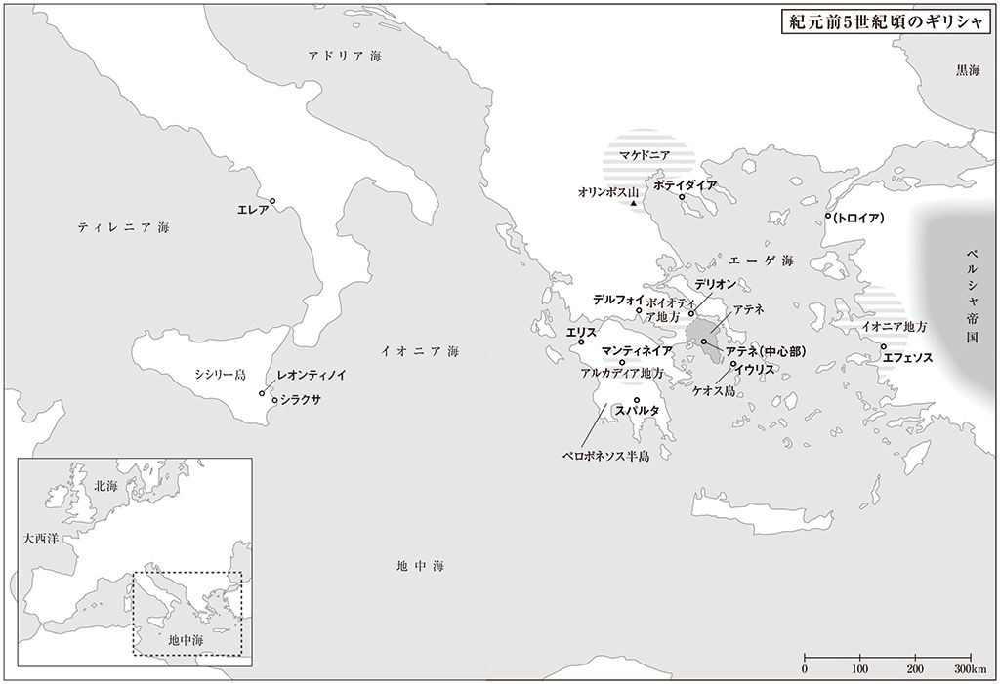
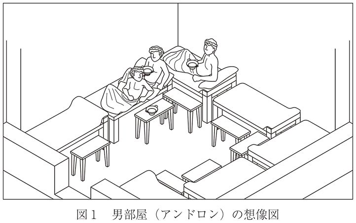
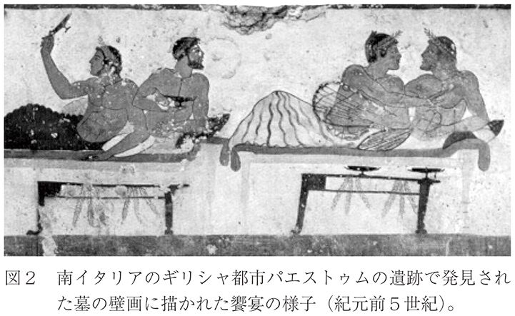
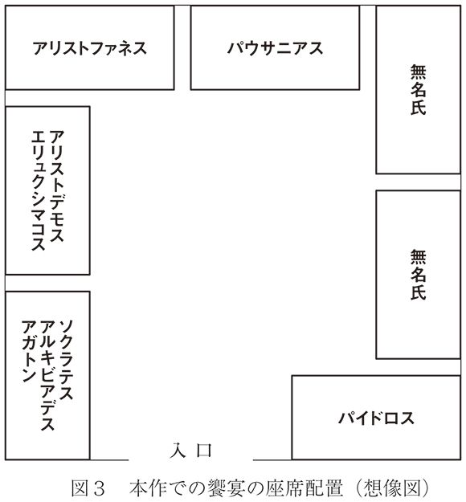
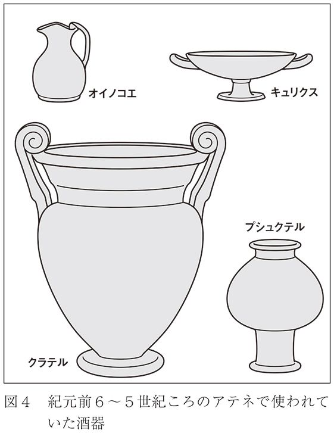
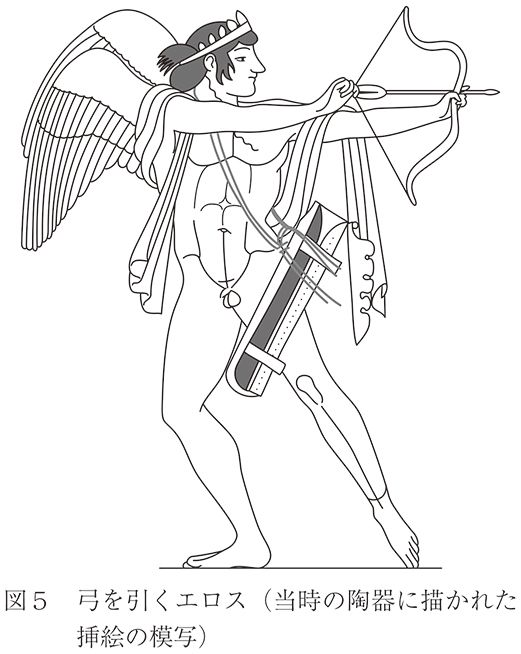
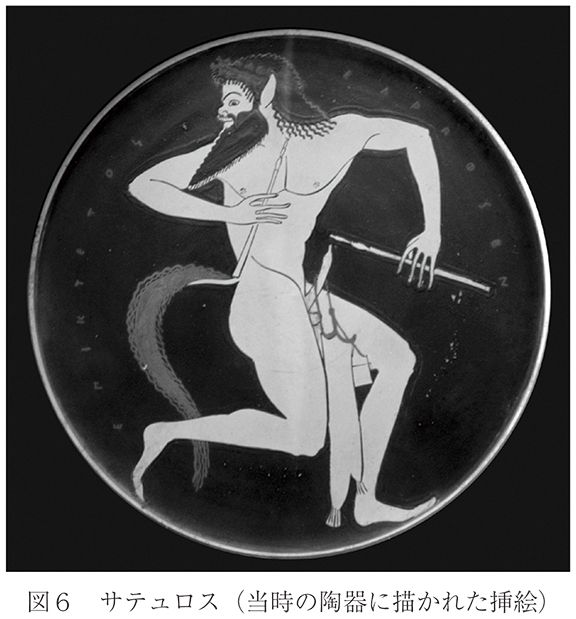

| 饗宴 | |
| プラトン | |
| (2013) | |
饗宴
プラトン
中澤務訳
Title:ΣΥΜΠΟΣΙΟΝ
B.C. 4c
Author:ΠΛΑΤΩΝ
凡例
（１）定本として、ドーヴァーによる校訂テキスト（K. J. Dover (ed),Plato: Symposium, Cambridge University Press, 1980）を使用しています。
（２）訳者の判断で、全体をプロローグ、第一～一〇章、エピローグに分け、各章に表題を付しました。また、話の切れ目には「＊」を挿入しています。
（３）（ ）で括られた部分は、原文中の補足的発言です。〈 〉で括られた部分は、原文中の引用句、または、訳者による強調です。また、［ ］で括られた部分は、原文にはない、訳者による補足的説明です。
（４）ギリシャ語のカタカナ表記は、できるだけ一般的なものを採用しています。そのため、必ずしも統一した規則に従っているわけではありません。

目次
©Tsutomu Nakazawa 2013
◎ご注意
本作品の全部または一部を無断で複製、転載、改竄、公衆送信すること、および有償無償にかかわらず、本データを第三者に譲渡することを禁じます。
個人利用の目的以外での複製等の違法行為、もしくは第三者へ譲渡をしますと著作権法、その他関連法によって処罰されます。
本作『饗宴――エロスの話』は、古代ギリシャの哲学者プラトンが、紀元前四世紀に執筆した作品であり、プラトン哲学の神髄ともいうべきイデア論の思想と、そのイデアの認識を人間にもたらしてくれるエロスの力が論じられています。しかし、通常の哲学書のイメージとは一味違い、思想が物語の中に溶け込むように提示されていて、それが本作の最大の特徴になっています。本作は、第一級の物語を楽しむことを通して、読者を第一級の哲学的問題へといざなってくれる、稀有な哲学書なのです。
物語の語り部は、アポロドロスという若者です。彼は、十数年前に悲劇詩人アガトンの屋敷で開かれた饗宴と、そこで繰り広げられた愛の神エロスの賛美合戦の様子を、アリストデモスという人物から聞き、その内容を友人たちに語り聞かせていきます。
本書の題名にもなっている饗宴（シュンポシオン）というのは、当時の人びとが盛んに開いていた社交のための宴会のことで、男たちがクリネ（寝椅子）という小ぶりのベッドに身を横たえながら、ワインを酌み交わすものです。通常は、さまざまな余興の遊びを交えた楽しい飲み会なのですが、今回は少し様子が違います。前日の宴会で疲れ果てていた参加者たちは、酒を飲む代わりにエロスの神を順番に賛美していくことになるのです。
エロスというのは、ギリシャ神話に登場する愛の神のことですが、それは同時に、人間の性的な愛や欲望を意味する言葉でもあります。それゆえ、エロス神の賛美は、人間の恋愛の賛美へとつながっていきます。こうして、物語の前半部（第六章まで）では、このエロス神の偉大さと、この神が人間に与えてくれる愛の恩恵について、五人の個性的な人物によるオリジナリティー溢れる演説が繰り広げられていくことになります。
ここで、ご注意いただきたいことがあります。それは、彼らが賛美する恋愛の中身についてです。現代のわれわれにとって、恋愛とは、なによりも男女の間に成立するものでしょう。しかし、当時は、そのような男女間の恋愛だけでなく、少年愛（パイデラスティア）と呼ばれる恋愛も一般的なものでした。それは、成人した男性が、成人前の一二～一八歳くらいの少年と恋愛関係を結ぶもので、現代における同性愛とはさまざまな点で異なる側面を持つ、独特の性風習です。五人の登場人物たちは、この少年愛を中心に、人間のさまざまな愛のかたちを取り上げ、そのような愛の恩恵を人間に与えてくれるエロス神を賛美していくのです。
そして、物語の後半（第七章から）に入ると、雰囲気は一変し、ソクラテスを中心とした哲学的なストーリーが展開していきます。ソクラテスは、ディオティマという女性から聞いたという哲学的なエロス論を語りはじめます。そして、エロスの持つ本当の意味が、プラトン哲学の中核にあるイデア論の思想を基盤にして、解き明かされていきます。そして、物語の最後には、ソクラテスと親しかった政治家アルキビアデスが登場し、このような哲学的エロスの権化としてのソクラテスの姿が、生き生きと描写されていくのです。
本書を読むにあたり、通常の哲学書を相手にするときのような、身構えた姿勢は不要です。まずは、物語の面白さに引き込まれ、読み進めていってください。そうすれば、知らず知らずのうちに、哲学的内容に踏み込んでいき、プラトンの哲学に触れられる仕掛けになっています。
それでは、まえおきはこれくらいにして、本文をお楽しみください。
主要登場人物
アポロドロス ソクラテスの弟子で、この物語の語り手。
アリストデモス ソクラテスの弟子で、饗宴の様子をアポロドロスに伝えた人。
ソクラテス アテネの哲学者。五三歳。
アガトン アテネの悲劇詩人。饗宴の主催者。三〇歳くらい。
パイドロス 弁論術に関心を寄せるアテネの若者。二〇代後半。
パウサニアス アガトンの恋人。おそらくソクラテスと同世代。
エリュクシマコス アテネの医師。パイドロスの恋人。三〇代前半。
アリストファネス アテネの喜劇詩人。三〇代なかば。
ディオティマ ソクラテスにエロスの道を伝授したマンティネイアの女性。
アルキビアデス アテネの政治家。三〇代なかば。
アガトン邸で催された宴会の話を聞きたいという友人たちに、アポロドロスは語りはじめる――
アポロドロス きみたちが聞きたがっているその件についてなら、話をする準備はすっかりできていると思うよ。というのも、つい先日こんなことがあったからだ。その日、ぼくはファレロン区（１）の自宅から、街に向かって歩いていた。すると、知り合いがぼくの後ろ姿を見つけて、遠くからぼくの名を呼ぶ。それも、なんだかおどけた調子で、こんなふうに言うのだ。
「おーい、そこのファレロン区民さん！ きみのことだよ、アポロドロスくん。ちょっと待ってくれないか」
ぼくは立ち止まり、待った。
すると、彼はこう言った。
「やあ、アポロドロスくん。きみのことを探していたんだ。じつは、アガトンのところであった集まりについて、詳しい話を聞かせてほしくてね。ほら、ソクラテスとアルキビアデスをはじめ、ほかにもいろいろな人が参加したという、あの宴会のことだ。そこでの話題は、愛についてだったというじゃないか。いったい、どんな話だったのだろう。詳しく聞かせてはくれまいか。
じつは、ある人物が、ぼくにその話をしてくれてね。その人は、フィリッポスの息子のフォイニクスという人から話を聞いたということだったが、きみもその話をよく知っていると言っていたのだよ。
それに、その人物がしてくれた話は、お世辞にも明瞭といえるようなものではなくてね。それで、きみの話を聞きたいというわけだ。きみは、それにうってつけの人だよ。お仲間［であるソクラテス］のした話を報告するわけだからね」
そして、こう話を続ける。「しかし、その前にひとつ聞かせてほしい。きみ自身は、その集まりに参加したのかい。それとも、しなかったのかい？」
そこで、ぼくは言ってやった。「どうやら、その人物の話は、本当に不明瞭なものだったようだね。お尋ねの集まりがそんなに最近の出来事で、ぼくもそれに参加できたなんて、きみが思い込むくらいだから」
「てっきり、そう思っていたんだが......」と彼は言った。
ぼくは言った。「なんでそうなるの、グラウコンくん。きみは知らんのかね。アガトンは、もうずいぶんと長い間、このアテネの地に暮らしてはいない（２）。それに、ぼくがソクラテスの仲間に加わり、日々の日課のように彼の言動を見聞きするようになってから、まだ三年もたっていないのだよ。それ以前のぼくはね、何をやるのもでたらめのくせに、いっぱしのことをしていると思い込んでいた。でも、本当は最悪だったんだ。いまのきみと同じさ。だって、まちがえても哲学にだけは手を出すまいなんて考えていたんだから」
「からかわんでくれよ」と彼は言った。「それより、教えてくれ。その集まりがあったのは、いったい、いつのことなんだ？」
ぼくは言った。「ぼくらが、まだ子どもだったころ。アガトンが最初の悲劇作品を上演して、優勝したときのことだ。アガトンと合唱隊の人たちが、神さまに感謝を捧げる式典を催した翌日に、その集まりはあった」
「それはまた、ずいぶんと昔の話だなあ」と彼は言った。「ところで、きみにその話をしてくれたのは、誰なんだい？ もしかして、ソクラテスが直々に話してくれたのだろうか？」
「めっそうもない」とぼくは言った。「話をしてくれたのは、フォイニクスに話をしたのと同じ人物さ。名前はアリストデモスという。キュダテナイオン区（３）に住んでいる人だ。小柄な人で、［ソクラテスのまねをして］いつも裸足で歩いているよ。集まりに参加していたのは、この人なんだ。ぼくが思うに、当時この人は、誰よりも熱烈にソクラテスを恋い慕っていたからね。
それに、この人から聞いた話の一部分については、以前ソクラテスに確かめたこともあるんだ。ソクラテスは、アリストデモスの話のとおりだと認めてくれたよ」
「それじゃあ、ぼくにもその話をしてくれないか」と彼は言った。「ともあれ、ぼくたちはこれから街までの道のりを歩いていく。話をしたり聞いたりするには、絶好の機会ではないか」
＊
こうして、ぼくらは一緒に道を歩きながら、この件についていろいろな話をした。だから、最初に言ったように、話の準備はすっかりできているというわけだ。そして、きみたちにもその話をする必要があるというのなら、そうせねばなるまいね。
ぼくという人間はね、哲学の話となると、自分で話をするときでも人の話を聞くときでも、それがもたらしてくれる効用なんて抜きにして、もうただひたすら楽しいのだ。
ところがそれ以外の話、とりわけきみたちがするような、金持ちの実業家連中の話となると、ぼく自身はうんざりしてしまうし、友人であるきみたちのことは哀れに思えてしまうのだ。だって、きみたちは自分が意味のあることをしていると思っているけれど、本当は、意味のあることなんて、なにもしちゃいないのだから。
まあ、たぶん、きみたちのほうも、ぼくのことを不幸なやつだと思っているんだろう。ぼくは、きみたちのその思いは正しいと思うよ。でもね、ぼくのほうは、きみたちを不幸だと思っているのではない――単に思っているというより、よく知っているのだ。
友人 あいかわらずだな、アポロドロスくん。きみはいつも、自分と他人の悪口を言ってばかりだ。さしずめ、この世の人間は、ソクラテス以外みんな哀れだとでも思っているのだろう――きみ自身を筆頭にしてね。
まったく、いったいどうして、きみが〈弱虫〉なんてあだ名で呼ばれるようになったのか、ぼくには見当もつかない。だって、きみが話をするときには、いつも決まって、自分にも他人にも、きつく当たるんだから――おっと、ソクラテスは別だったね。
アポロドロス ......これは、まことに痛み入るね。そうすると、自分自身のこともきみたちのことも、そんなふうに考えているぼくは、もう明らかに気がおかしくて、正気の沙汰ではないというわけなんだね。
友人 アポロドロスくん、いまそんなことできみと言い争いをしても、なんの意味もない。どうか、話をそらさないで、われわれがきみにお願いしたとおりに、そのときの話がどんなものだったか聞かせてくれないか。
アポロドロス わかったよ。そのときの話というのはこうだった...... いや、やっぱりぼくも、アリストデモスが聞かせてくれたとおりに、事の発端からきみたちに話してあげることにしよう――――
１ アテネの区（デモス）の一つ。アテネの中心から数キロメートル離れた海岸沿いにあった。
２ アガトンは、マケドニア王アルケラオスの宮廷に招かれ、アテネを離れていた。
３ アテネの区（デモス）の一つ。
アリストデモスは、入浴を済ませてサンダルを履いたソクラテスに、ばったり出くわした。ソクラテスがそんなことをするなんて、めったにないことだ。それで、彼はこう尋ねたのだそうだ。
「そんなにきれいになって、いったい、どこに行かれるのですか？」
すると、ソクラテスは答えた。「アガトンが食事に招いてくれたんだ。じつは、昨日の式典は途中で失礼させてもらった。ひとごみに嫌気がさしてね。でも、今日は出席すると約束した。それで、こんなふうにおしゃれをしているというわけさ。きれいな人のところには、きれいになって行かなければならないからね」
そしてこう話を続けた。「ところで、きみもどうだろうか。招かれてはいないが、食事に行ってみるというのは？」
アリストデモスは、「おおせのとおりにしますよ」と答えたそうだ。
すると、ソクラテスが言った。「それでは、ついて来なさい。そうすれば、ぼくたちの行動は、例の［〈優れた人は、招かれていなくても、劣った人の宴に行く〉という］ことわざが間違っていることを示す反例にもなる。そして、それを〈優れた人は、招かれていなくても、優れた人の宴に行く〉と修正してあげられるよ（４）。
ところで、このことわざについては、ホメロス（５）もまた、それを誤りだとみなしているようなんだが、どうも彼は、このことわざに対して、ひどい仕打ちをしているみたいなんだ。なぜかというと、ホメロスは、アガメムノンをとても優れた戦士として描き、これに対してメネラオスは〈臆病な槍持ち〉として描いているんだが、アガメムノンが生贄を捧げて宴を催したとき、メネラオスが、招かれてもいないのに食事に行ったと述べているんだよ（６）。これでは、〈劣った人は、［招かれていなくても、］優れた人の宴に行く〉なんてことになってしまうではないか」
この言葉を聞いて、アリストデモスは言ったそうだ。「ですが、わたしの場合だって、あなたのおっしゃるような意味にはならないのではないでしょうか、ソクラテス。むしろ、ホメロスの言うような意味になってしまいますよ。なぜって、つまらない人間であるわたくしめが、招かれてもいないのに、賢者の食事に行くわけですからね。
ですから、わたしを連れていくのなら、どんな言い訳をするか考えておいてください。わたしは、招かれてもいないのにやって来たなんて、認めるつもりはありませんよ。あなたに招かれたのだと言うことにします」
ソクラテスは言った。「では、〈二人で一緒に道を歩きながら（７）〉、何と言ったらいいか考えることにしよう。ともかく、出かけようよ」
＊
こんな会話をしたあと、彼らは出発したのだそうだ。
ところが、道の途中で、ソクラテスはなにやら考えごとにふけり、遅れはじめた。アリストデモスが待っていると、ソクラテスは先に行ってくれと言った。
さて、アリストデモスがアガトンの家に到着すると、家の扉が開いているのが目に入った。そして彼が言うには、そこで、なにやらおかしな目にあったのだそうだ。すなわち、家の召使の一人がすぐさま彼を迎え入れ、部屋に案内したのだ。すると、そこでは招待客たちが寝椅子に横になっていて、まさに食事をはじめるところだった。
アガトンは、アリストデモスの姿を見るやいなや、こう言った。
「これはこれは、アリストデモスさん。ちょうどよいときにお越しくださいました。さあ、一緒に食事をなさってください。もしかして、別の用事でお越しになられたのでしょうか。でも、それはまた次の機会にすればよいではないですか。じつは、あなたをお招きしたくて、きのうもあなたを探したのですよ。しかし、お会いすることができませんでした。――それはそうと、ソクラテスさんはどうなされたのですか？ 連れて来てくださればよかったのに」
アリストデモスによると、そのとき彼は後ろを振り返ったのだが、背後にソクラテスの姿はなかったという。そこで、彼はこう事情を説明したそうだ。
「じつは、ぼくのほうが、ソクラテスに連れられてやって来たんだ。ここに食事に行こうと、彼に誘われたんだよ」
「それはそれは、本当によく来てくださいました」とアガトンは言った。「それにしても、いったいソクラテスさんは、どこにいらっしゃるのでしょうか？」
「さっき、ぼくの後ろから入って来たんだが......。おかしいな。いったい、どこに消えたんだろう」
アガトンは［召使の一人に命じて］、「きみ、ソクラテスさんを探して、ここにお連れしなさい」と言った。そして、［アリストデモスには］次のように言った。「アリストデモスさん、あなたはどうぞ、エリュクシマコスさんの隣に横になってください」
アリストデモスは、召使に手足を洗ってもらうと、横になった。すると、もう一人の別の召使がやって来て、［アガトンに］こう告げた。
「ソクラテス様は、そこにいらっしゃいました。お隣の玄関先に立っておいでなのです。わたくしがお呼び申し上げたのですが、お入りになろうとはなさいません」
「妙なことを言いますね」とアガトンは言った。「ちゃんとソクラテスさんをお呼びするのです。ほったらかしにしてはいけませんよ」
そこで、アリストデモスは、こう口をはさんだという。
「いや、その必要はないんだ。そっとしてやってほしい。よくあることなんだよ。ソクラテスは、ときどき、ところかまわず足を止めて、じっと立っていることがあるんだ。なに、すぐにやって来ると思うよ。だから、邪魔をしないで、そっとしてやってほしい」
すると、アガトンは言った。
「わかりました。あなたがそうおっしゃるなら、そうすることにいたしましょう。
さあ、それでは召使諸君、ここにいるわたしたちのために、食事を運んできてください。きみたちは、誰かに指図されることがない限り、自分の判断でこれぞという料理を出してくれますね。そして、わたしはきみたちに指図したことなどありません。だから、今日も同じようにしてください。ここにいらっしゃる方々は、わたしも含めて、きみたちが食事に招いたお客さんなのだという気構えで給仕をするのです――わたしたちがきみたちのことを賞賛できるようにね」
＊
こうして彼らは食事をはじめた。しかし、ソクラテスが入ってくる気配はない。それで、アガトンは［召使に］幾度も命じて、ソクラテスを迎えに行かせようとしていたが、アリストデモスがそれを押しとどめていた。しかし、例のごとく、それほど長い時間はかからなかった。食事がなかばにさしかかったころ、ソクラテスが姿をあらわしたのだ。
そのとき、アガトンは、たまたま末席に一人で横になっていた（８）。それで、彼はこう言ったのだそうだ。
「さあ、ソクラテスさん、どうぞこちらへ。わたしの隣にきて、横になってください。そうすれば、わたしはあなたに触れて、あなたの知恵を分けていただくことができます。玄関先であなたに訪れた知恵をね。
わかっていますとも。あなたは知恵を見出された。そしていま、それをお持ちなのです。さもなくば、あなたがその場を離れることなんてなかったでしょうからね」
すると、ソクラテスは寝椅子に腰を下ろして、こう言った。
「アガトン。ぼくたちが互いに触れ合うだけで、知恵に満ちた側から空っぽの側へと、知恵が流れていってくれるなら、ありがたいことだ。まるでコップの水が糸を伝い、満ちた側から空っぽの側に流れていくようにね。
もし知恵がそのようなものだとしたら、ぼくは、きみの隣に横になれることをとてもありがたく思う。きみからたくさんの美しい知恵が流れ込み、ぼくを満たしてくれると思うからね。じっさい、ぼくの知恵なんてお粗末なもので、まるで夢のようにあやふやなんだ。ところが、きみの知恵のほうは輝きに満ち、大いなる可能性を秘めている。一昨日だってそうだった。きみはまだ若いというのに、その知恵はあんなに強く輝き出し、三万人を超えるギリシャの人々の前に、その姿をあらわしたではないか」
「意地悪なおかたですね、ソクラテスさん」とアガトンは言った。「いずれにしても、もう少ししたら、わたしとあなたは、その知恵をめぐって議論を戦わせることになるのでしょうね。そのときには、ディオニュソス（９）が勝敗を判定してくださることでしょう。ですが、いまは、まず食事をなさってください」
＊
アリストデモスの話では、そのあとソクラテスは横になり、ほかの人たちと一緒に食事をした。食事が終わると、彼らは神さまに御神酒を捧げたり、神さまへの賛歌を歌ったりと、必要な儀式をすべて執り行った。そして、いよいよこれから飲み会のはじまりという段になったのだが、そのときパウサニアスが、なにか次のような話をはじめたのだそうだ。
「さてさて、みなさん。いかにすれば、いちばん楽に飲み会を執り行えるでしょうか。みなさんに白状いたしますが、わたしは、昨日の飲み会で、本当にとてもひどい状態で、少し休息が必要なのです。みなさんの多くも、同様かと思います。昨日も出席されていたわけですからね。そこで、どうすればいちばん楽に飲み会を執り行えるか、考えていただきたいわけです」
すると、アリストファネスが言ったそうだ。
「そりゃあ、いい提案だぞ、パウサニアス。なにがなんでも、楽に飲む方法を編み出さねばならん。かくいう俺も、きのうはあびるほど飲んだ一人だからなあ」
二人の話を聞いて、次にアクメノスの息子のエリュクシマコスが言ったそうだ。
「むろん、私も賛成だ。でも、酒を飲む元気があるかどうかを聞いておかなければならない人が、この中にもう一人いるね。アガトン、いかがかな？」
「わたしにも、そんな元気はありませんよ」とアガトンは答えた。
「どうやら、私たちに幸運の風が吹いたようだね」とエリュクシマコスは言った。「私たちというのは、私とアリストデモスとパイドロス、それに、ここにおられるそのほかの方々のことだがね。だって、あなたがた酒のつわものたちが、たったいま白旗を揚げたのだから。私たちは、そもそも酒に強くないのだよ。
おっと、ソクラテスについてなら、心配はいらない。この人は、飲んでも飲まなくてもいいのだ。だから、私たちがどちらの道を選んでも、この人はそれでいいと言うだろう。
ところで、ここにおられる誰もが深酒には気が進まないようだから、私が酩酊にかんする真実を述べても、おそらく気を悪くする者はいないだろう。医学的見地にかんがみて、酩酊が人間にとって有害であることは、きわめて明白であると思われる。だから、私自身としても自分からすすんで大酒を飲むつもりはないし、それを他人に勧める気もない。ましてや、前日の酒が残っている人に勧めるなど論外だ」
すると、ミュリヌス区（10）のパイドロスが、話を受けてこう言ったそうだ。
「ぼくはいつでも、あなたの忠告には従うことにしていますが、それが医学的な忠告であれば、なおのことです。いまの忠告も、その意味をよく考えてみるなら、ほかの方々だって従ってくれるはずです」
みなこの言葉に賛同し、今回の集まりでは酩酊するほど飲むのはひかえて、楽しむ程度に飲むことになったという。
そこで、エリュクシマコスが言った。
「さて、これで、各人が自分の飲みたいだけの量を飲めばよく、無理強いしてはいけないということになった。そこで次にこう提案したい。まず、さきほど入って来た笛吹き女（11）には部屋から出て行ってもらおう。演奏なら一人でさせておけばよかろう。あるいは、もし彼女がそうしたいというなら、奥の女たちに聞かせてやればよい。そして、私たちのほうは、今日は互いに議論をして過ごそうではないか。また、もしよければ、話題についても私に提案させてほしい」
すると、みながこれに賛同し、彼に提案してほしいと言った。そこでエリュクシマコスは次のように言った。
「それでは、まず、エウリピデス（12）の悲劇『メラニッペ』の引用からはじめることにしよう――私がこれから語ろうとする〈その話は、私の話ではなく〉、このパイドロスの話。すなわち、パイドロスは、ことあるごとに、私に次のような不満を述べるのだ。
『ひどいとは思いませんか、エリュクシマコス。これまで詩人たちは、神々を賛美しほめたたえる歌を作ってきました。ところが、これまで世に出た詩人はこんなに多いのに、エロス（13）をほめたたえる歌を作った詩人は、一人もいないのです。エロスは、とても古くて、とても偉大な神だというのにね。
それなら優れたソフィスト（14）たちならどうかと調べてみても、同じことですよ。その彼らにしても、ヘラクレス（15）のような者たちへの賛美なら、散文で書いているというのに。たとえば、最も優れたソフィストであるプロディコス（16）のようにね。
しかし、この程度で驚いていてはいけません。ぼくは、ある賢者の書いた本を読んだことがあるのですが、その本では、塩がたいそうな賛美を受けているのですよ。とても役に立つからだそうです。このような類の賛美の言葉であれば、ほかにいくらでも見つけることができるでしょう。
ところがです。そんなものについてなら、これほど熱心に賛美されているというのに、エロスについては、この神にふさわしい賛美をしようとした者は、こんにちに至るまで、誰もいないのです。これほど偉大な神が、これほど無視されているなんて！』
私はね、パイドロスがこんな不満を述べるのも、もっともだと思うのだ。そこで私は、この人のために一肌脱いで、喜ばせてあげたいのだよ。しかし、それだけではない。いま、この神を言葉で美しく飾りつけることは、ここにいる私たちにふさわしい仕事ではないかと思うのだ。
さて、きみたちもこの提案に同意してくれるなら、私たちは、議論をしながら有意義に時間を過ごすことができるだろう。私たちのそれぞれが、左から右へと順番に、できるかぎり美しい話をして、エロスを賛美していくのがいいと思う。まず、パイドロスからはじめよう。彼は一番手の席に横になっているし、それに、この話題の生みの親でもあるわけだから」
すると、ソクラテスが言った。
「きみに反対票を投じる者は誰もいないだろう、エリュクシマコス。まず、このぼくは反対できそうにないね。なにしろ、ぼくは、エロスに関すること以外、なにひとつ知らないのだからね。また、［恋人同士である］アガトンとパウサニアスのご両人も反対できないだろう。アリストファネスだってそうだよ。なにしろ、この人の仕事は、もっぱらディオニュソスとアフロディテ（17）へのご奉仕なのだから（18）。そのほか、ここに姿の見える人で、反対しそうな人は誰もいない。
もっとも、このやりかたは、最後の席に横になっているぼくたち［アガトンとソクラテス］にとっては公正なやりかたとはいえないね。しかし、もし先に話をする方々が十分に美しい話をしてくれるなら、ぼくたちは満足するだろう。
さあ、それではパイドロス、幸運を祈るよ。まずきみから、エロスの賛美をはじめてほしい」
すると、ほかの人たちはみなこの言葉に賛成し、ソクラテスの言ったとおりにしてほしいと、パイドロスにお願いした。
＊
さて、こうして、めいめいが話をしていくことになるんだが、アリストデモスはそのすべての内容をきちんと覚えていたわけではないんだ。それに、ぼくだってアリストデモスの話を全部覚えているわけではない。そこで、彼がよく記憶し、ぼくがここで取り上げるにふさわしいと思う話について、それぞれの人のした話を、きみたちにお話ししていくことにしよう。
４ 古典ギリシャ語では「優れた人の宴」と「アガトンの宴」が同じ発音になることから、ソクラテスは、ことわざをしゃれでもじり、招かれていないアリストデモスを、アガトンの宴会に誘おうとしている。
５ 古代ギリシャの伝説的詩人で、『イリアス』、『オデュッセイア』の作者。
６ ホメロス『イリアス』第一七巻五八六～五八八行、第二巻四〇八～四〇九行。アガメムノンは、トロイア戦争におけるギリシャ軍の総大将でミュケナイ王。メネラオスは、アガメムノンの弟でスパルタ王。
７ ホメロス『イリアス』第一〇巻二二二～二二六行。
８ 末席とは、最も下手の席のことで、通常は主人がこの席に着いた。
９ 酒と演劇の神で、バッコスともいう。
10 アテネの区（デモス）の一つ。
11 宴会で笛を演奏する芸妓のこと。
12 アテネの悲劇詩人。
14 当時のギリシャ世界で活躍していた進歩的知識人のこと。
15 ギリシャ神話に登場する英雄。
16 ソクラテスと同年代の、ケオス島イウリス出身のソフィスト。
17 愛と美の女神。
18 アリストファネスの喜劇は、ディオニュソスの領分である酒や、アフロディテの領分である性愛を主題にしているから。
さて、いま言ったように、最初の話し手はパイドロスだった。彼は次のように話をはじめたという――――
「エロスは偉大なる神であり、人々の間にあっても、神々の間にあっても、驚嘆すべき神です。それは数多くの点でいえることなのですが、とりわけ、出自の点でそういえるのです。というのも、この神が最も古い神々の一人だという事実は、尊敬に値するものといえるのですから。それでは、次に、この事実の証拠を示すことにしましょう。
エロスには親がおらず、さらに、詩人であるなしにかかわらず、親の名を述べた人もいません。ヘシオドス（19）はこう歌っています――はじめにカオス（20）が生まれた。そして、次に生まれたのは、広大な胸を持つガイア（21）、すなわち永遠に動かぬ万物の居場所。そして、その次にエロスが生まれたのだと（22）。
アクシレオス（23）も、ヘシオドスと同じことを述べています――カオスのあとには、二人の神、ゲー（24）とエロスが生まれたのだと。
さらに、パルメニデス（25）は、エロスの誕生についてこう述べています――すべての神々のうち、エロスが最初に作り出されたのだと。
このように、エロスが最も古い神の一人であることは、ひろく認められていることなのです。
＊
さて、エロスは最も古い神であるがゆえに、ぼくたちに、最高によいものを与えてくださいます。じっさい、まだ若い少年にとって、彼を愛してくれる優れた人よりもよいものがあるのかと問われても、ぼくには答えることができません。また、愛する人にとって、優れた少年よりもよいものがあるのかと問われても、ぼくには答えることができないのです（26）。
人が美しい人生を送りたいと願うとき、その者は生涯かけて導き手に従わねばなりません。しかし、血のつながりであれ、社会的評判であれ、財産であれ、それ以外のなんであれ、エロスほどうまく導き手を作り出せはしないのです。
それでは、ぼくが導き手と呼ぶものは、いったい何でしょうか。それは、醜きふるまいをいとう羞恥心と、美しきふるまいを歓ぶ名誉心です。なぜなら、それらがなければ、国も、個々の人間も、見事な偉業を成し遂げることはできないのですから。
そこで、ぼくは主張します。［ある少年を］愛する人がいたとしましょう。その人がなにか恥ずべきふるまいをしたとか、あるいは誰かから辱めを受けたにもかかわらず、臆病ゆえに自分を守れなかったことが発覚したとします。そのとき彼は、父親や友人といった人たちよりもむしろ、愛する少年にそれを見られたとき、最も苦しい思いをするのです。さらにぼくたちは、愛される少年についても、これと同じことを目の当たりにします。すなわち、自分がなにか恥ずべき状態に置かれているのを見られるとき、少年は、自分を愛してくれる人に対して、最も恥ずかしいと感じるのです。
もし、なんらかの事情から、愛する人たちと愛される少年たちからなる国や軍隊が生まれたとします。すると、そのような人たちが作る組織は、最も優れた組織となることでしょう。彼らはどんな醜いふるまいもせず、相手からの尊敬を勝ち取ろうと互いに競い合うからです。たとえわずかな人数だったとしても、そのような人々が一致団結して戦えば、全人類に勝利しうるといっても過言ではありません。じっさい、愛する人にとって、自分が隊列から逃げ出したり、武器を投げ出したりする姿をいちばん見られたくない相手は、誰よりもまず愛する少年なのです。そんなことになるくらいなら、彼は幾度でも死を選ぶことでしょう。
ましてや、愛する人たちが少年を置き去りにして逃げ出したり、少年が危険にさらされているのに助けようとしないようなことなどありえません。じっさい、どれほどの臆病者であっても、そのうちにエロスが宿れば、この神が彼を勇敢にしてくれます。彼は、極めて勇敢に生まれついた者と同じくらい勇敢になれるのです。ホメロスの言葉に、「神が英雄たちのある者に、〈力を吹き込む（27）〉」とありますが、まさにこれこそ、エロスが愛する者たちに与えてくださることなのです。
＊
さらにまた、誰かのために喜んで死ねるのは、愛する人たちだけです。これは男性に限らず、女性においてもいえることです。この主張が正しいことを示す、十分な証拠があります。それは、ペリアスの娘アルケスティスです（28）。ギリシャ人なら誰でも、この証拠に納得するでしょう。彼女の夫には、父親も母親もいました。ところが、自分の夫のために死のうとしたのは、この女性だけだったのです。彼女はエロスの力ゆえに、両親を凌ぐ愛情を示したのです。それは、息子にとって両親がまるで赤の他人であり、肉親とは名ばかりのことにすぎぬと思わせるほどでした。そして、彼女のなしたふるまいは、人間のみならず、神々にも美しいふるまいに見えました。そこで、神々は彼女に褒美を与えました。これまで、たくさんの人々が、たくさんの美しいふるまいをなしてきましたが、その褒美に、魂を冥府から連れ戻してもらえた者はごくわずかにすぎません。しかし、神々は彼女のふるまいを賞賛し、彼女の魂を連れ戻したのです。このように、神々もまた、エロスゆえの熱意と勇気を、なによりも尊重してくださるのです。
しかし、これに対して、オイアグロスの息子のオルフェウス（29）の場合、神々は、彼が［死んだ妻を冥府から連れ戻すという］目的を遂げる前に、冥府から追い出しています。すなわち神々は、妻を探しに行った彼にその幻を見せ、本物を引き渡しはしなかったのです。なぜでしょうか。オルフェウスは音楽家であったため、神々には、彼が柔弱なふるまいをしているように見えたからです。すなわち、オルフェウスは、アルケスティスのようにエロスのために死ぬ道を選ばずに、生きたまま冥府に入ろうとたくらんだというわけです。
さて、以上の理由から、神々はオルフェウスに罰を与え、彼が女たちの手にかかって死ぬように仕向けたのですが、それとは対照的に、テティスの息子のアキレウス（30）に対しては栄誉を与え、彼を〈祝福された人々の住む島（31）〉に送っています。その理由はこうです。アキレウスは、母親から次のように知らされていました――彼がヘクトルを殺せば、彼自身も死ぬことになるであろう。しかし、そのようなことをしなければ、彼は故郷に帰還して、年老いてから死ぬことになるであろうと。だがアキレウスは、自分を愛してくれたパトロクロスのために戦い、その敵討ちをする道をあえて選んだのです（32）。アキレウスは、単にパトロクロスのために死のうとしただけではありません。すでに亡くなっているパトロクロスのあとを追い、自分も一緒に死のうとしたのです。だからこそ、神々はアキレウスを高く賞賛し、彼に並々ならぬ栄誉を与えました。なぜなら、彼は、自分を愛してくれた人を、それほどまでに大切にしたのですから。
ところで、アイスキュロス（33）は、アキレウスのほうがパトロクロスを愛していたのだと主張しています。しかし、彼の主張は筋が通りません。じっさい、アキレウスはパトロクロスよりも美しかったばかりでなく、ほかのどの英雄よりも美しかった。そして、まだ鬚も生えておらず、ホメロスが述べているとおり（34）、パトロクロスよりもはるかに若かったのです。
たしかに、神々が、エロスにもとづく勇気を高く尊重してくださるのは事実です。しかし、愛する人が少年に対して愛情を示すときよりも、逆に、愛する人に対して少年が愛情を示すとき、神々はよりいっそう驚嘆し、賞賛し、よくしてくださるのです。じっさい、愛する人は神がかりの状態にあるがゆえに、そもそも少年よりも神に近い存在なのです。そして、このような理由により、神々は、アルケスティスのときよりも大きな栄誉をアキレウスに与え、彼を〈祝福された人々の住む島〉に送ったというわけなのです。
＊
ぼくの主張は以上のとおりです。ようするに、エロスは神々の中で最も古く、最も尊い神であり、人間が勇気と幸福を手に入れようとするときには、生きているときであれ死んでからであれ、最も大きな力になってくれる神なのです」
19 紀元前八世紀ころの古代ギリシャの詩人で、『神統記』、『仕事と日』の作者。
20 世界の最初に誕生した虚空の神。
21 大地の女神。
22 ヘシオドス『神統記』一一六、一一七、一二〇行。
23 紀元前五世紀の神話作家。
24 ガイアのこと。
25 紀元前五世紀のエレア出身の哲学者。
26 ここでは、少年愛（パイデラスティア）における、愛の対象となる少年と、少年を愛する成人男性の関係が念頭に置かれている。古代ギリシャの少年愛については、「解説」を参照。
27 ホメロス『イリアス』第一〇巻四八二行、第一五巻二六二行など。
28 ギリシャ神話に登場するアドメトス王の妻。夫の死の運命を避けるために、みずからが身代わりとなり死んだ。
29 ギリシャ神話に登場する竪琴の名手。
30 ギリシャ神話に登場する英雄。
31 英雄たちの魂が死後に住むという伝説の地。
32 ホメロス『イリアス』第九巻四一〇～四一六行、第一八巻七八～九六行。トロイア戦争において、アキレウスは、親友パトロクロスの敵討ちのために、敵将ヘクトルを討った。
33 アテネの悲劇詩人。
34 ホメロス『イリアス』一一巻七八六行以下。
アリストデモスによれば、パイドロスは、だいたい以上のような話をしたのだそうだ。そして、パイドロスのあと、幾人かが話をしたのだが、それについては、アリストデモスはあまりよく覚えていなかった。それで彼は、それらはとばして、パウサニアスの話をしてくれた。パウサニアスの話は、次のようなものだったという――――
「パイドロス、わたしには、そもそも主題が適切に設定されていないように思われます。わたしたちは、なんの限定もつけずに、ただエロスへの賛美の言葉を述べるよう指示されました。もしエロスが一人であるなら、それでも結構でしょう。ところが、じっさいには、エロスは一人ではありません。そして、一人でないのだとしたら、賛美すべきはどのエロスであるのかをまず述べるのが、より正しいやりかたなのです。
そこで、わたしはこの点を修正し、まず、わたしたちが賛美すべきはどのエロスであるのかを示してから、その神にふさわしい賛美を述べていきたいと思います。
さて、わたしたちはみな、アフロディテとエロスが一心同体であることを知っています。それゆえ、もしアフロディテが一人しかいないなら、エロスも一人しかいないことになるでしょう。しかし、じっさいには、アフロディテは二人いるのですから、当然、エロスも二人いなければならないのです。
ところで、この女神が二人いることは確かな事実です（35）。すなわち、一方にはより古い女神がいます。この女神は、父たる天神ウラノス（36）から生まれた娘であり、母はありません。この女神を、わたしたちは〈天のアフロディテ〉と呼びならわしています。ところが、これとは別に、より新しい女神がいるのです。こちらのほうは、ゼウス（37）とディオネ（38）の間に生まれた娘であり、わたしたちは〈俗のアフロディテ（39）〉と呼びならわしています。ですから、エロスについても、後者の女神と共に働くものは〈俗のエロス〉と呼び、前者の女神と共に働くものは〈天のエロス〉と呼ぶのが正しいのです。
もちろん、［どんな名を持つ神であっても］神々はすべて賞賛に値します。ですが、いまはまず、それぞれの神が［人間の行いの］どんなところに影響を与えるのかについて、説明するよう努めなければなりません。
さて、わたしたちの行いというものは、すべて次のような性質を持っています。すなわち、行いは、それ自体としてみれば、美しいとも醜いともいえません。たとえば、いまわたしたちが行っているのは、〈飲むこと〉や〈歌うこと〉や〈議論すること〉ですが、これら自体が美しいわけではないのです。むしろ、行いが美しいかどうかは、その行いかたによって決まります。すなわち、行いかたが美しく正しいなら、それは美しい行いとなり、行いかたが正しくないなら、それは醜い行いとなるのです。
〈愛する〉という行いと、［それをつかさどる］エロスについても、同様のことがいえます。すなわち、その全部が全部、美しいわけでも、賛美に値するわけでもなく、むしろ、わたしたちを美しい愛しかたへと導いてくれるエロスだけが、美しく、賛美に値するのです。
＊
さて、〈俗のアフロディテ〉と共にあるエロスは、まことに俗なる存在です。ですから、やることなすこと、でたらめです。そして、これこそまさに、くだらない人々における愛なのです。
第一に、そのような人々は、少年だけでなく女性も愛します。第二に、彼らは、恋する人の心よりも、むしろ体を愛します。第三に、彼らはできるだけ愚かな人を愛します。思いを遂げることしか考えていないからです。彼らは、愛しかたが美しいか否かということなど、気にもとめていません。それゆえ、彼らは、思いつくまま、でたらめに行動します。その行動がよいのか悪いのかなど、おかまいなしなのです。
そんなことになってしまうのは、彼らのエロスが、一方の女神よりもはるかに若年の女神に由来しているからであり、しかも、その女神は、誕生したさいに、［両親から］女性と男性の性質をあわせて引き継いだからだといえます。
これに対して、〈天のアフロディテ〉と共にあるエロスのほうはどうでしょうか。第一に、〈天のアフロディテ〉は、［母がいないために］女性の性質は持たず、男性の性質だけを持っています。ですから、このエロスは、少年に向かうエロスなのです。第二に、〈天のアフロディテ〉は、より年長の女神ですから、ひとかけらの傲慢も持ちあわせてはいません。それゆえ、このエロスに動かされる人たちの心は、男性へと向かうことになります。そして、彼らは、生まれつきより強く、より理性的な者に愛着を感じるのです。
そして、少年愛においても、純粋にこのエロスに突き動かされている人を観察することができるでしょう。そのような人は、少年が理性を持ちはじめるとき、はじめてその少年を愛するようになります。そう、それはちょうど、少年に鬚が生えはじめるころです。わたしが思いますに、少年をそのころから愛しはじめる人は、その少年と生涯を共にし、手をたずさえて一緒に生きていく覚悟ができています。幼いがゆえの愚かさにつけ込み、少年をたぶらかして自分のものにしてしまい、やがて、あざけりの笑い声と共に、ほかの少年のもとに逃げ去っていくようなまねは決してしないのです。
じっさい、幼い少年を愛してはならないという決まりすらあってしかるべきです。そうすれば、不明瞭な事柄のために、多大な労力を浪費しなくてすみますから。事実、幼い少年の心と体が、最終的によくなるか悪くなるかは、不明瞭なのです。
優れた人であれば、みずからそのような決まりを作り、自発的に従うことでしょう。しかし、俗のエロスに取りつかれた人に対しては、そのような決まりを作って強制的に従わせる必要があります。わたしたちは、そのような人が自由な身分の女性と恋愛関係を持つことを禁止し、可能な限り強制的に従わせていますが、それと同じことをするわけです。
このような人たちのせいで、例の［少年愛に対する］非難が生じてしまいました。その結果、［少年が］自分を愛してくれる人に身をゆだねるのは不道徳だと言い出す人たちまであらわれることになったのです。しかし、そんなことを言う人たちは、このような人たちの不適切で正しくないふるまいを見てそう言っているのであり、どんなことでも、適切かつ合法的になされるなら、非難される筋合いはまったくありません。
＊
さて、恋愛をめぐるこのような決まりについてですが、ほかの国々の場合、その意味を理解することは容易です。なぜなら、その規定は単純なのですから。しかし、ここアテネとスパルタ（40）においては複雑なのです。
エリス（41）とボイオティア地方（42）を筆頭に、人々があまり弁舌にたけていない地域では、［少年が］自分を愛してくれる人に身をゆだねるのは美しいことだと、端的に定められています。老いも若きも、誰一人それを恥ずべきこととは言わないでしょう。わたしが思いますに、それは彼らが、言葉を使って少年を口説くなどという面倒くさいことをしたくないからでしょう。なぜなら、彼らには弁舌の能力がないのですから。
これに対して、イオニア地方（43）など、異民族の支配下にある地域の多くでは、そのようなことは恥ずべきことだとみなされています。
じっさい、異民族の人々は、独裁政治のもとにあるため、このようなことばかりでなく、学問やスポーツをも恥ずべきものとみなしています。
その理由を、私は次のように考えています。すなわち、そのような活動を許すと、支配される人々が大志を抱いたり、強い友愛で結ばれて一致団結するようになりますが、そのようなことは、支配する側にとって都合の悪いことなのです。じっさい、いま述べた活動はすべて、このような結果を生み出す力を持ちますが、とりわけエロスはその力が強いのです。
じつは、アテネの［かつての］専制君主たちも、このことを、身をもって思い知らされています。というのも、アリストゲイトンの愛と、ハルモディオスの親愛の情が強固になったとき、専制君主の支配は終焉をむかえたのですから（44）。
このように、自分を愛してくれる人に身をゆだねるのは恥ずべきことだと定められた地域に、そんな定めがあるのは、それを定めた人々の悪しき性格が原因です。悪しき性格とは、すなわち、支配する人々の貪欲と、支配される人々の臆病のことです。これに対して、そのようなことは美しいことだと端的に定められている地域に、そんな定めがあるのは、そう定めた人々の精神の無能さが原因なのです。
これらに比べ、ここ［アテネ］の決まりは、はるかに優れています。しかし、最初に申し上げたように、その意味を理解するのは容易ではありません。
考えてみてください。たとえば、求愛行為は、隠れて行うよりも公然と行うほうがよいと言われています。また、たとえ容姿は劣っていても、このうえなく家柄がよく、優れた少年に求愛するのが、特によいことだとも言われています。さらにまた、求愛する者は、あらゆる人から、驚くほどの励ましを受けます。彼がなにか恥ずべきことをしているとはみなされないのです。すなわち、相手を自分のものにするのは美しいことであり、自分のものにできないのは恥ずべきことだと考えられているわけです。また、求愛する人が、相手を自分のものにしようとするときには、彼がどんな常軌を逸した行為をしても賞賛されるのがならわしになっています。ところが、もし誰かが、なにかそれ以外の目的を達成しようとして、そうした行為をするなら、その人は、たいへんな非難を浴びることになるのです。
たとえば、ある人が、誰かから金銭を貰いたいとか、あるいは重要な公職などの権力を手に入れたいと思ったとします。そして、それを手に入れようとして、求愛する人が少年に対してするようなまねをしたとする。たとえば、嘆願や哀願をする人々のようなお願いのしかたをしたり、誓いの言葉を口にしたり、相手の家の戸口で一夜を明かしたり、あげくの果てには、奴隷さえやりたがらないような奴隷的行為を、すすんでやろうとしたとするのです。すると、その人は、そのようなふるまいを、味方からも敵からも阻止されることになるでしょう。すなわち、敵は、その人が媚びへつらい、自由人らしからぬまねをしていると非難するでしょうし、味方は、その人に忠告をしたり、その人のことを恥だと思ったりすることでしょう。ところが、求愛する者なら、いま言ったようなことを行っても、すべて好意的に受け入れてもらえます。そのようなことは非難せずに許す慣習であり、彼は、なにかとてもすばらしいことをしたとみなされるのです。
じつに驚くべきことに――これは多くの人々が言っていることなのですが――求愛する人が誓いを立てたときには、たとえそれを破っても、神々に許してもらえます。というのも、人々が言うには、恋に取りつかれた者の誓いは、そもそも誓いではないからです。
このように、神々も人間も、求愛する人に対して、そのようなことをする自由を全面的に認めているのであり、それはここ［アテネ］の決まりに見られるとおりなのです。
さて、そうすると、人はこう思うことでしょう。すなわち、この［アテネの］国では、［少年に］求愛をすることも、［少年が］自分を愛してくれる人と親密になることも、とてもすばらしいこととみなされているのだと。
ところがです。少年が求愛されると、父親は少年にお伴の召使をつけ、求愛する人と言葉を交わすことを許さないのです。そして、お伴の召使に、そのようなことをさせないように命じます。また、少年と同じ年頃の者たちや少年の友人たちは、なにかそのようなことが起こっているのを目撃すると、求愛する人をののしります。そして、大人たちのほうも、彼らがそうするのを止めさせようともしなければ、間違ったことを言っていると叱責することもないのです。このような場面を見れば、今度は逆に、ここ［アテネ］では、そのようなふるまいは極めて恥ずべきこととみなされているのだと考える人が出てくるかもしれませんね。
この点について、わたしは次のように考えます。
事柄は単純ではありません。最初に申し上げたように、その［求愛という］行い自体は、美しいとも醜いともいえません。むしろそれは、美しくなされるとき、美しい行いになり、醜くなされるとき、醜い行いになります。愚劣な人間に愚劣に従うのは、恥ずべき行いです。しかし、優れた人間に美しく従うのは、美しい行いなのです。
愚劣な人間とは、あの、俗な愛しかたをする人のことです。それは心よりも体を愛する人でした。そのような人は永続的に愛し続ける人とはいえません。永続的なものを愛しているのではないからです。じっさい、そのような人は体を愛していますから、その体の美しさが失われると、たくさんの言葉と約束を足蹴にして〈飛び去っていってしまう（45）〉のです。
これに対して、優れた性格を愛する人は、生涯にわたって変化することがありません。なぜなら、そのような人は、永続的なものと一体化しているのですから。
このような事情から、わたしたちの［アテネの］決まりは、これら二種類の愛する人を上手に正しく検査しようとします。そして、一方には従い、他方は避けるように促すのです。
それゆえに、わたしたちの決まりは、求愛するほうには追いかけよと命じ、少年のほうには逃げよと命じます。つまり、彼らに追いかけっこをさせることによって、求愛する者と求愛される者が、それぞれどちらの種類に属する人間であるのかを検査しているわけです。
さて、まさにこのような理由から、第一に、［少年が］すぐに捕まってしまうのは、恥ずかしいことだとみなされることになります。それは、そのようなことには十分な時間をかける必要があるからです。なぜなら、たいていのことは、時間をかければ正しく検査できると考えられているのですから。また第二に、少年が金銭や政治的権力にとらわれてしまうのは、恥ずかしいことだとみなされることになります。たとえ、少年が［脅迫などの］ひどいことをされて、おびえて言いなりになっているのだとしても、あるいは、金銭や政治的成功のために相手から便宜を図ってもらい、そのようなものを軽蔑できなくなっているのだとしても同じです。なぜなら、そのようなものから愛情など生まれるはずがないわけですが、それはおくとしても、そのようなものは堅固なものとも永続的なものともみなされてはいないのですから。
さて、このようなわけで、わたしたちの［アテネの］決まりにおいては、少年が、自分を愛してくれる人に美しく身をゆだねようとするなら、その方法はただ一つしかありません。わたしはさきほど、求愛する人が、少年に対してどのような奴隷的行為をしようとしたとしても、それは媚びへつらいでもなければ、非難されるべきことでもないと申しました。それと同じように、わたしたちの［アテネの］決まりでは、自発的に行っても非難されることのない、もう一つの奴隷的行為が残されているのです。すなわち、徳を手に入れるための奴隷的行為です。
事実、わたしたちは、次のようにみなしています。たとえば、ある人が、別のある人に仕える気になったとしましょう。彼は、その人の助けがあれば、なにか知恵などの徳を手に入れて、優秀な人間になれると信じたのです。このような場合、彼はまさに自発的に奴隷になろうとしています。しかし、わたしたちは、それを恥ずべきふるまいだとも、媚びへつらいだとも思いはしないのです。
＊
ところで、少年が自分を愛してくれる人に身をゆだねるとき、そのふるまいが美しいものになるためには、これら二種類の決まりが一体化しなければなりません。（二種類の決まりというのは、一つは少年愛をめぐる決まり、もう一つは、知恵の愛好をはじめとするさまざまな徳をめぐる決まりのことです。）つまり、愛する人と少年が同じ目的に向けて共に歩むとき、それぞれがきちんと決まりを守るのです。すなわち、愛する人のほうは、自分に従ってくれる少年に奉仕するさいに、なにをするにせよ［決められたとおりに］正しいしかたで奉仕します。他方、少年のほうは、自分を賢くてよい者にしてくれる人に対して、何をするにせよ［決められたとおりに］正しいしかたで奉仕するのです。さらに、愛する側は、賢さをはじめとするさまざまな徳へと導いていく力がなければなりませんし、少年の側は、教養を身につけて、いろいろな知恵を持つために、それらの徳を手に入れたいと思わなければなりません。このようにして、これら二種類の決まりが同じ目的に向かって一緒に働くとき、そしてそのときに限り、少年が自分を愛してくれる人に身をゆだねることが美しいといえるようになるのです。しかし、それ以外の場合には、決してそのようなことにはなりません。
このような状況においてであれば、たとえだまされているとしても、恥ずかしいことではありません。ところが、これ以外のすべての状況においては、だまされていようがいまいが、その人にとって恥ずかしいことなのです。
たとえば、次のような事例を考えてみてください――ある少年が、自分に求愛してきた人を金持ちだと思い、お金が欲しくて、その人に身をゆだねた。しかし、少年はだまされていた。彼はじつは貧乏であることが判明し、少年はお金をもらえなかった。
この事例において、少年は、じっさいにお金を受け取っているわけではありません。しかし、にもかかわらず、そのふるまいは恥ずべきものです。なぜなら、そのような少年は、お金のためなら誰にでも身をゆだねるという自分の真実の姿を露呈しているように思われますが、それは美しいものとはいえないからです。
それでは、以上と同様の考えかたで、今度は次のような事例を考えてみてください――ある少年が、自分に求愛してきた人を優れた人物だと思い、彼と親密な関係になれば、自分も優れた人物になれると考え、その人に身をゆだねた。しかし、少年はだまされていた。彼はじつは凡庸な人間であり、徳を持っていないことが判明した。
この事例において、少年はだまされていました。しかし、にもかかわらず、それは美しいのです。なぜなら、この少年は、徳を手に入れて優れた人物になるためには、誰にどんなことでもするという、自分の真実の姿を明らかにしていますが、そのような姿は、あらゆる事柄の中で最も美しいものだからです。このように、徳を手に入れるために身をゆだねるのは、なににもまして美しいことなのです。
そして、これこそが、天の女神に由来する天のエロスであり、国にとっても、個々の人間にとっても、たいへん価値のあるものなのです。なぜなら、このエロスは、愛する者自身に対しても、愛される少年に対しても、自分自身の徳を気にかけるように強く導いてくれるのですから。しかし、これ以外のエロスはすべて、もう一方の俗の女神に由来するものなのです。
わたしの話は以上です、パイドロス。即興でできる限り、エロス賛美に貢献したつもりです」
35 アフロディテの出自をめぐっては、以下に見るように、二つの異なる伝承が存在していた。
36 ガイアから生まれ、最初に世界を支配した神。
37 ギリシャの最高神で、オリンポスの主神。
38 ウラノスとガイアの娘。
39 「俗の（パンデモス）」という言葉は、もともとは「すべての民衆に崇拝されている」という意味だが、「世俗的」という意味もあり、パウサニアスは後者の意味に解している。
40 ペロポネソス半島南部に位置する大きなポリスで、アテネのライバル国。
41 ペロポネソス半島北西に位置するポリス。
42 アテネの西北に位置する地方。
43 小アジア西海岸の地域。
44 アリストゲイトンとハルモディオスは、アテネの専制君主の殺害を計画し、その支配が崩壊するきっかけを作った。
45 ホメロス『イリアス』第二巻七一行。
パウサニアスは話を終えた。（こういう語呂合わせのやりかたを、賢者たちがぼくに教えてくれたんだ（46）。）アリストデモスによると、次はアリストファネスが話をする番だった。しかし、そのとき、アリストファネスは、しゃっくりに苦しんでいたという。さしずめ、食事を食べすぎたとか、なにかそんな理由なんだろうがね。アリストファネスは、話をすることができなくなった。それで彼は、エリュクシマコスに向かって言ったそうだ。（というのも、彼の下手に横になっていたのが、このエリュクシマコス医師だったのだ。）
「なあ、エリュクシマコス。きみは、俺のしゃっくりを止めるか、さもなくば、しゃっくりが止まるまで俺の代わりに話をするか、どちらかをするべきだよ」
すると、エリュクシマコスは、「なに、両方してさしあげよう」と答えたそうだ。「あなたの番だが、私が話をする。あなたは、しゃっくりが止まってから、私の番のときに話をしてくださればよい。
それから、私が話をしている間に、しばらく呼吸を止めてみなさい。そうすれば、しゃっくりは止まる。止まらなかったら、水でうがいをすること。それでもしつこく続くようなら、なにかで鼻腔をくすぐり、くしゃみをしたまえ。これを一度か二度行えば、どんなにしつこいしゃっくりでも止まる」
「それじゃあ、話をはじめてくれ。俺は、きみの言いつけに従うからさ」とアリストファネスは言ったそうだ。
＊
さて、エリュクシマコスの話は、次のようなものだったという――――
「私のなすべきは、次のようなことだと思う。たしかに、パウサニアスの話のはじめかたは正しいものであった。しかし、彼は話を十分に完結させてはいない。だから、私は、彼の話の完結を試みなければならないのだ。
エロスには二種類あるというパウサニアスの分類は正しいと思う。しかしながら、エロスは、人間の心の中で、美しい人々に対して働いているだけではない。それはまた、たくさんのものの中で、さまざまな対象に対して働いているのだ。あらゆる動物の体においてしかり。大地に生える植物においてしかり。いってみれば、存在するすべてのものの中で働いているのである。このことは、私たちの専門分野である医術から見て取ることができると思う。ようするに、この神は偉大にして驚嘆に値する神であり、人間的事象であれ神的事象であれ、万物に行き渡っているように思われるのだ。そこで、私はまず、医術を出発点として話をはじめたいと思う。そうすれば、私たちはこの技術に敬意を示すことができるからである。
さて、そもそも肉体というものは、この二種類の欲求を持っている。広く認められているように、体の健康な部分と病気の部分は異なっており、互いに似ていない。そして、互いに似ていないがゆえに、似ていないものを欲し求める。したがって、健康な部分に生まれる欲求と、病気の部分に生まれる欲求は、異なる欲求なのである。
さきほどパウサニアスが言っていたように、優れた人物に身をゆだねることは美しく、自制心のない人物に身をゆだねることは醜いことだが、体についても、これと同じことがいえる。すなわち、それぞれの人間の体において、その優れた健康な部分の要求に従うのは美しいし、またそうするべきである。そして、こうしたことをすることこそ、〈治療〉という名で呼ばれる営みなのだ。これに対して、悪い病気の部分の要求に従うのは醜いことであり、いやしくも専門家たらんとする者は、そのような部分の言いなりになってはならないのである。
そもそも医術とは、ひとことで定義するなら、〈体に生じるさまざまなエロスの現象に関して、それをどのように満たしたり、満たさないようにするのかをめぐる知識〉である。そして、そのような現象において、どれが美しい欲求であり、どれが醜い欲求であるのかを識別できる者こそ、すぐれて医師の名に値する者だ。また、［患者の］体に変化を引き起こして、その結果、ある欲求を取り除いて、別の欲求を得させることができる者とか、さらには、ある欲求を持つべきなのに持っていない人たちに対して、それを作り出したり、あるいは反対に、持っている欲求を取り除いたりする方法を知る者は、優れた臨床医といえるだろう。
じっさい、優れた臨床医は、体の中の互いに敵対する部分を親和的なものに変化させ、それらの部分が互いを求め合うようにすることができなければならない。そのさい、最も敵対的なのは、冷たい部分と暖かい部分、苦い部分と甘い部分、乾いた部分と湿った部分のように、互いに正反対の性質を持つ部分である。私たちの［医術の］始祖アスクレピオス（47）は、このような正反対の部分の間に、［互いを求め合う］欲求と調和を生み出す知識を発見し、私たち医師の技術を編み出した。このことは、ここにおられる［アガトンやアリストファネスなどの］詩人の方々も言っておられることなのだが、私もまたそう信じている。
＊
以上のように、医術は、私が言っているとおり、そのすべてがこの神に支配されているのであるが、これと同じことは、体育と農業についてもいえることだ。
さらにまた、少し考えてみれば、音楽についても事情はまったく同じだということは明白である。おそらく、ヘラクレイトス（48）も、そのようなことを言おうとしているようだ。もっとも、彼がそれを言葉でうまく表現できているとはいいがたいのだがね。すなわち、ヘラクレイトスは、『〈一なるもの〉は、自分自身と合致していないのに、自分自身と調和している。それはまるで、弓や竪琴が生み出す調和のようなものだ』と述べている（49）。しかし、調和しているのに合致していないとか、互いに合致していない要素から調和が成り立っているなどと主張するのは、まったく理屈に合わないことだ。
むしろ、ヘラクレイトスが本当に言いたかったのは、おそらくは、こういうことではないだろうか。すなわち、高音と低音は、最初は合致していないのだが、それらは音楽の技術の力で互いに調和したものになるのだ。じっさい、高音と低音がいまだ合致していないときには、そこから調和は生まれないであろう。なぜか。［音楽における］調和とは音の協和のことであり、音の協和とは、一種の一致のことだ。そして、音が合致していない以上、合致していない音から一致が生まれることはありえないし、合致も一致もしていないものが調和することもありえないのである。それは、速いテンポと遅いテンポからリズムが生まれるときにもいえることであり、その場合、はじめは合致していなかったテンポが、ついには一致したものとなるのだ。
つまり、音楽の場合にも、先ほどの医術の場合と同様に、音楽の技術が要素相互の間に欲求と親和を作り出し、すべての要素の間に一致を生み出すわけだ。したがって、音楽の技術もまた、〈調和とリズムに関するさまざまなエロスの現象についての知識〉だといえるのである。
さて、調和やリズムの構造そのものの中で働いているエロスの現象を識別することは、なんら難しいことではない。また、そこには、あの［天と俗という］二種類のエロスは、まだ存在していない。それが姿を現すのは、人間の営みの中でリズムと調和が利用されるような場面においてである。すなわち、その一つは、リズムと調和を使って曲を作る場面であり、これは〈作曲〉と呼ばれる。もう一つは、作られたメロディーとテンポを正しく活用する場面であり、これは〈教養教育〉と呼ばれる（50）。このような場面になると、識別は難しくなる。だから、優れた専門家が必要となるのだ。
このような場面では、さきほど体の欲求について述べたのと同じことがいえる。すなわち、私たちは、じっさいに調和の取れた人たちの要求に従うべきだ。そうすれば、いまだに調和の取れていない人たちも、より調和的になるだろう。そして、そのような調和の取れた人たちの欲求を大切に守るべきなのだ。このようなエロスは美しき天のエロスであり、天のムーサに由来するエロスである。
これに対して、俗のエロスにあたるのは、歌のムーサに由来するエロスだ（51）。このエロスを人に作用させるときには、それが作用している人たちに、細心の注意を払わなければならない。すなわち、そのエロスが与えてくれる快楽を適切に楽しみ、限度を超えて快楽にのめり込んでしまうことのないように、気をつけなければならないのである。これと同様の注意は、私たち医師の技術においても必要である。すなわち、料理の技術が作り出すさまざまな欲望をうまく制御して、病気になることなく、［食事の］快楽を楽しめるようにすることが肝要なのだ。
このように、音楽においても医術においても、それ以外のどんな領域においても、それが人間に関わるものか神に関わるものかにかかわらず、できる限り、それぞれのエロスに監視の目を向けねばならないのである。なぜなら、二種類のエロスは、どんな領域にも存在しているのだから。
さて、一年の四季の中にも、この二種類のエロスが行き渡っている。すなわち、私がさきほど述べた対立的部分、つまり暖かい部分と冷たい部分や、乾いた部分と湿った部分などが、調和的なエロスの作用を受けると、対立的部分は互いに調和的になり、適度に混ざり合う。このような状態が訪れると、人間をはじめとするすべての動植物に、豊かな実りと健康をもたらしてくれる。それは、いかなる損害ももたらすことはない。
ところが、傲慢に取りつかれたエロスが一年の四季に対する支配力を強めると、多大なる破壊と損害を引き起こしてしまう。すなわち、そのような事態になると、疫病をはじめとするたくさんの病気が発生して、動植物に被害を及ぼすことが多くなるのである。なぜなら、このエロスの影響を受けたさまざまな部分が互いに争って調和を失い、そのために、霜や雹や害虫が発生してしまうからである。天体の運動や四季に関する、このようなエロスの働きをめぐる学問は、〈天文学〉と呼ばれている。
さらに、あらゆる供犠の儀式や、占いに関わる領分についても同様である。これらは、神々と人間がお互いの意志を伝え合うための行為だが、そのような行為はまさに、エロスを守ったり癒したりする行為にほかならないのである。なぜなら、およそ神の意にそぐわぬ行為というものは、人が調和的なエロスに従わず、なにをするにも、それを尊敬も尊重もせずに、逆に傲慢なエロスに対してそうしてしまうときに、生まれてくるものだからである。このことは、存命している親をないがしろにする場合にも、すでに亡き親をないがしろにする場合にも、また、神々をないがしろにする場合にもいえることだ。
また、占いの仕事とは、このような点に関して、エロスに支配された人々を監視し、癒すことにある。すなわち、占いも、神々と人間の間に友愛を作り出してくれるものなのだ。なぜなら、占いは、人間界でのエロスに関わる事象のうち、宗教的正義や敬虔に関わる事柄をよく知っているからである。
以上のように、すべてのエロスは、数多くの偉大なる力を持っている。いな、むしろ、すべての力をまとめて持っているといってよい。しかし、最大の力を持っているのは、人間の世界においても神々の世界においても、節度と正義を伴った美しい行為を成し遂げさせてくれるエロスである。このエロスこそ、私たちすべての人間を幸福にしてくれるエロスなのである。このエロスあってこそ、私たち人間は、互いに友愛の絆を結ぶことができるし、さらには、私たちよりも優れた存在である神々とさえ結ばれることができるのだ。
＊
以上が私のエロス賛美の話だが、おそらく私もまた、言い残していることがたくさんあるだろう。だが、たとえそうだとしても、それはわざとではない。もし私がなにかを言い残しているとしたら、それを補うのは、アリストファネス、あなたの役目だ。もちろん、私とは違うやりかたでこの神を賛美しようと考えているなら、そうしてもらってかまわない。いずれにしても、もうしゃっくりは止まったようだから」
46 このような語呂合わせは、ソフィストが得意とするレトリックであり、アポロドロスは、ソフィストに影響されたパウサニアスの弁論のスタイルを皮肉っている。
47 医術の神。
48 紀元前六世紀のエフェソスの哲学者。
49 ヘラクレイトスの断片五一での主張を敷衍したもの。〈一なるもの〉（すなわち、統一された宇宙）は、対立的な要素間の緊張によって調和が保たれているという、彼の哲学が表明されている。
50 当時の教養教育（パイデイア）は、読み書き、音楽、体育の三本の柱からなっていた。
51 ムーサとは、音楽や学芸をつかさどる九柱の女神のこと。天のムーサは天文をつかさどり、歌のムーサは歌と踊りをつかさどる。
すると、問いかけに答えて、アリストファネスがこう言ったのだそうだ。
「はいはい、止まりましたとも。でも、くしゃみ療法を施すまで、止まりませんでしたなあ。まったく、驚いてしまったよ。俺の体の調和的部分が、こんな雑音と刺激を欲求していたとはねえ。こんな、くしゃみみたいなものをだよ。だって、くしゃみ療法を施したとたん、たちまちしゃっくりが止まるんだもの」
すると、エリュクシマコスは、こう応じたという。
「いいかね、アリストファネス、ふるまいには気をつけたまえ。話をはじめる矢先から、笑いを取りにくるとは。そんなことをするなら、私はあなたの話の見張りになり、またなにかふざけたことを言い出さないよう、監視せざるをえなくなる。まったく、そんなことをしなければ、安んじて話ができるものを」
すると、アリストファネスは、笑いながらこう応じたそうだ。
「ごもっとも、エリュクシマコス。いまの冗談は、聞かなかったことにしてくれ。そして、俺を監視するのは勘弁してほしい。たしかに俺は、これから自分がしようとしている話について、ちょいとばかり心配してはいるよ。でも、それは、自分がなにか笑いを誘うようなことを言ってしまうのではないかという心配じゃないんだ。だって、笑いがあるのはいいことだろうし、それは俺たち喜劇詩人の得意技でもあるのだから。そうじゃなくて、俺が恐れているのは、俺の話にあざけりの笑いが起こるんじゃないかってことなのさ」
エリュクシマコスは言った。「豆鉄砲を喰らわせておいて、逃げるつもりだろうが、そうはいかないぞ、アリストファネス。よく注意して、言い訳の立つ話をすることだな。ともかく、私がそうしてよいと判断したら、あなたを放免してあげよう」
＊
さて、アリストファネスの話は、次のようなものだったという――――
「エリュクシマコス、俺がこれからしようと思っている話は、あんたやパウサニアスのした話とは、少しばかり趣向が違う。
俺は思うのだが、世の人々は、エロスが持つ力にまったく気づいていない。もし気づいていたら、人々はエロスのために立派な神殿と祭壇を作り、立派な儀式を執り行っていたことだろう。でも、じっさいには、エロスのためにそのようなことが行われることはまったくないんだ。まっさきに行われなければならないというのにね。
じっさい、エロスは、神々の中でいちばん人間を愛してくれる。エロスは人間の守護者であり、人間の病を癒してくれる医者だ。そして、その癒しによって、人類は最大の幸福を手に入れることができるのだ。
そこで、俺はきみたちに、エロスが持つ力についてお話ししようと思う。きみたちには、この話を世間に広めてもらえるとありがたいね。
さて、まずきみたちが知らねばならないのは、人間とは元来どのような存在であったのかということと、その人間にどのような運命が訪れたのかということだ。
太古の昔、俺たち人間は、現在のような姿はしておらず、それとはまったく異なる姿をしていた。
第一に、人間には三つの性別があった。すなわち、現在のような男性と女性の二種類だけでなく、第三の性別が存在していたんだ。これは、男性と女性をあわせもつ性で、いまでもその名称は残っているんだが、この性別自体は消滅してしまった。これを〈アンドロギュノス〉といい、太古の昔には、これも一つの種族であった。このアンドロギュノスは、姿も名前も、男性と女性という二つの性が一緒に合わさってできていた（52）。しかし、それはもはや存在せず、人を侮蔑するための言葉として残っているだけだ（53）。
第二に、それぞれの人間の体は球体をしていて、背中も脇腹も丸かった。手は四本あり、足も同じく四本あった。そして、丸い首の上には、うりふたつの顔が二つついていた。一つの頭の正反対の側に、二つの顔があったのだ。耳は四つ、生殖器は二つ。それ以外の部分については、いまの話から類推してほしい。
太古の人間も、いまの人間と同じように直立して、どの方角でも好きな方向に歩くことができた。また、早く走りたいときには、軽業師が足をまっすぐに伸ばして、くるくると倒立回転をしていくように、当時は八本あった手足で体を支えながら、くるくると早く移動することができた。
ところで、なぜ、このような三つの種族が存在していたのか。それは、男性は太陽を起源として生まれたものであり、女性は地球を起源として生まれたものだが、両性をあわせもつアンドロギュノスは、月を起源として生まれたものだからだ。なぜ月からかといえば、月は太陽と地球の性格をあわせ持っているからね。また、彼らの体が球形で、回転しながら移動していたのも、彼らの生みの親である天体の姿を模倣してのことなんだ。
＊
さて、この太古の人間たちは、恐ろしく力が強く、元気があった。そして、とても志が高かった。だから、彼らは神々に反抗した。ホメロスは、エフィアルテスとオトスが天に昇って神々を攻撃しようとした話を伝えているが（54）、それは、かの太古の人間たちの話なのだ。
そこで、ゼウスをはじめとする神々は、人間たちへの対処を話し合った。しかし、打開策を見出すことができなかった。かつて神々は、巨人族を雷で打ち、その種族を消滅させたことがあった（55）。しかし、そのようにして人間を根絶やしにしてしまうわけにはいかなかったのだ。なぜなら、そんなことをすれば、神々が人間たちから享受していた信仰と供物も、いっしょに消滅してしまうからね。しかし、かといって、人間たちの厚かましいふるまいを止めさせる方法も見つからなかったのだ。
しかし、とうとう、ゼウスによい考えが思い浮かんだ。彼はこう言った。
『人間を存続させたまま、不埒なふるまいを止めさせる、よい方法を思いついたぞ。人間を弱体化させてしまえばよいのだ。いますぐ、人間の体を、まっぷたつに分断してやろう。そうすれば、人間の力が弱まるばかりでなく、よりいっそうわれわれの役に立ってくれる。なぜなら、数が増えるのだから。人間は、直立して二本足で歩くことになる。それでもなお、厚かましいふるまいを止めずに、おとなしくしないようなら、もう一度、体をまっぷたつにしてやる。やつらは、一本足で、ぴょんぴょんと飛び跳ねて歩くことになるだろう』
このように言うと、ゼウスは人間たちをまっぷたつに分断していった。ちょうど、ナナカマドの実をまっぷたつに分断して乾燥保存したり、髪の毛を使ってゆで卵をまっぷたつに分断するような具合だ。分断を終えると、ゼウスはアポロン（56）に命じて、顔と半分になった首を反対側に回転させ、傷口のほうに向けさせた。自分が切られた跡を見れば、人間はもっと謙虚になると考えたからだ。そして、それ以外の傷もすべて癒してやるようにと命じた。
そこでアポロンは、顔を反対側に回転させた。そして、体のまわりから、現在では〈腹〉と呼ばれている部分まで、皮を引っ張ってきた。そして、巾着の口を締めるときのように、腹の真ん中に口を一つ作り、そこで皮を縛った。これは〈へそ〉と呼ばれている。そして、皮についていたたくさんの皺を伸ばして、〈胸〉を作った。靴職人が、皮についた皺を靴型にあてがって伸ばすときに使う道具があるが、それに似た道具を使ったのだ。しかし、アポロンは、腹部のへそのまわりの皺を、少しだけ残しておいた。太古の受難の記憶というわけだ。
かくして、人間が元来もっていた体は、二つに分断されてしまった。だから、誰もが自分の半身を恋しがり、自分の半身と一緒にいた。彼らは、互いに腕を巻きつけて抱き合い、再び一体化しようとした。彼らは、一緒にいること以外、なにもしようとはしなかった。食事もなにもしなかったから、彼らはつぎつぎに死んでいった。半身の一方が死ねば、他方は取り残される。取り残されたほうは、別の半身を探して、再び抱き合う。その半身が、もともとは女性であったものの半身――いまでは、この半身のほうを女性と呼んでいるわけだが――であるか、それとも男性であったものの半身であるかなんて、まったくおかまいなしだ。こうして、人類は滅亡に向かっていったのだ。
＊
ゼウスは、人間を哀れに思い、別の方法を思いついた。ゼウスは、彼らの生殖器を体の前のほうに移動させた。じつは、それまで人間は、後ろのほうに生殖器を持っていた。そして、性交渉によって子どもを作っていたのではなく、まるで蟬のように、地面に直接、子どもを生みつけていたのだ。そこで、ゼウスは、彼らの生殖器を体の前のほうに移動させた。そして、それを使って、男性と女性の間で行われる性交渉によって、子どもを作るようにしたのだ。なぜなら、そのようにすれば、男性と女性が出会ったときに、体を絡み合わせれば子どもが生まれて、種を存続させることができる。また、男性同士の場合でも、少なくとも性的な満足は得ることができるから、ほかのことを考える余裕ができて、自分の仕事をしたり、仕事以外の生活の心配をすることができるようになるからだ。
このとき以来、人間の中に、互いに求め合うエロスが生まれた。それは、人間の太古の姿を回復させて、二つのものを一つにし、人間本性を癒そうとしてくれるものだ。
そういうわけで、俺たちはみな、人間の割符なのだよ。なぜなら、ヒラメのように、一つの体が二つに割られたものなのだからね。だから、俺たちはみな、自分に符合するもう一方の割符をいつでも探し求めているのだ。
男性のうちでも、両性をあわせ持っていた性――すなわち、太古の昔に〈アンドロギュノス〉と呼ばれていた性――の片割れである男性は、女好きだ。そして、浮気性の男の多くは、この種族から生まれる。女性についても同様であり、男好きで浮気性の女が、この種族から生まれる。
女性のうちでも、太古の女性の片割れである女性は、男性に心を惹かれることがあまりなく、女性に心をよせる。女性同性愛者は、この種族から生まれるのだ。
太古の男性の片割れである男性は、男性を追い求める。このような男性は、太古の男性の片割れであるがゆえに、少年のころは成人男性に愛情を感じ、男性と一緒に寝て、その腕に抱かれることを好む。そのような者は、少年や青年の中で最も優れている。なぜなら、生まれつき最も男性的なのだから。
そのような少年を、恥知らずと言う人がいることは確かだ。しかし、それは間違っている。なぜなら、彼らがそのようなことをするのは、恥知らずだからではなく、大胆で勇気があり、男らしいからなのだ。彼らは、自分自身に似たものに喜びを感じるのだよ。
これには、れっきとした証拠がある。まず、そのような少年だけが、成人してから、政治の世界で一人前の男として活躍することができる。
さらに、そのような少年が成人すると、彼らは少年を愛するようになる。彼らは、結婚したり子どもを作ったりといったことには、生まれつきあまり関心がなく、社会的圧力によって、しかたなくそうするにすぎない。そのような男性たちは、一緒に生きていくことができれば、独身であっても満足なのだ。概していえば、そのような者たちは、少年を愛する男と、男に愛情を感じる少年になる。なぜなら、彼らはいつも、自分と同じ性質のものに喜びを感じるからだ。
＊
さて、少年を愛する人であれ、それ以外のどんな人であれ、自分の半身に出会うときには、驚くほどの愛情と親密さとエロスを感じ取る。彼らは、いってみれば、いっときたりとも互いのもとから離れようとはしない。彼らは、生涯を共に生きていく人たちだ。しかし、彼らは、自分たちが互いに何を求め合っているのかを言うことはできないだろう。彼らは単にセックスをしたいだけで、そのためにお互いに喜びを感じ、かくも熱心に一緒にいたがるというのか。誰もそんなふうには思うまい。彼らの魂が求めているのは、明らかに、なにかそれとは別のものなのだ。しかし、彼らの魂は、それが何なのかを言葉にすることができない。彼らの魂は、自分の求めるものをぼんやりと感じとり、あいまいに語ることしかできないのだ。
彼らが一緒に寝ているところに、ヘパイストス（57）が姿をあらわし、その道具を手にしながら、彼らにこう尋ねたとしよう。
『人間たちよ。おまえたちは、互いに何を望んでいるのか？』
戸惑う彼らに対して、ヘパイストスは、次のように尋ねるだろう。
『おまえたちの望みは、できる限り二人で一緒にいて、夜も昼も互いから離れないことではないのか。もし、それがおまえたちの望みなら、わしがおまえたちを溶かして一つにしてやろう。そうすれば、おまえたち二人は一つになり、生きている間は、一つの存在として、共通の生を送ることができる。そして死んでからも、二つではなく、一つの存在として、冥府で共に過ごすことができるのだ。さあ、考えてみよ。それがおまえたちの望みではないか。そして、そうなれば、おまえたちは満足するのではないか？』
俺たちにはわかる。この言葉を聞いて、その申し出を断る者や、別の望みを申し出る者など一人もいないだろう。むしろ、自分の聞いた言葉こそ、まさに自分が望み続けてきたことだと思うだろう。すなわちそれは、愛する人と一緒になって一つに溶け合い、二つではなく一つの存在になるということだ。なぜなら、これこそが俺たち人間の太古の姿であり、俺たち人間は一つの全体であったのだから。そして、この全体性への欲求と追求をあらわす言葉こそ〈エロス〉なのだ。
すでに述べたとおり、俺たち人間は、かつては一つの存在だった。しかし現在は、罪を犯したために、神によって二つに引き裂かれている。まるで、アルカディア地方の人々が、スパルタ人によって二つに引き裂かれたようにね（58）。しかも、不安はまだ消えていない。もし俺たち人間が、神々に対して慎み深くふるまわないなら、俺たちは、ふたたび引き裂かれてしまうのだ。そうなれば、俺たちは、墓石に彫刻された浮彫りのようになって歩き回ることになるだろう（59）。鼻筋から、半切りサイコロ（60）みたいに、まっぷたつにされてね。
だから、以上のような事情ゆえに、俺たち人間はみな互いに励まし合って、何事につけても神々を敬わなければならない。そうすれば俺たちは、より悪い事態を回避して、よりよい事態を手にすることができるのだ。エロスを俺たちの導き手にして、指揮者とすることによってね。なんぴともエロスに逆らってはならない。エロスに逆らう者は、神々に嫌われるからだ。この神と親しくなって、友好関係を取り戻せば、俺たちは、自分自身の真実の恋人を見つけて、邂逅することができる。いまは、そんなことができるのは、ごくわずかの人たちだけなのだとしても。
エリュクシマコス、この話を面白おかしく解釈して、俺がパウサニアスとアガトンを揶揄しているのだなんて言わないでほしい。たしかに、ご両人は俺の話にぴったりと当てはまるし、お二人とも自然の性は男性だ。でも、俺の話は、男性であれ女性であれ、すべての人間に当てはまることなんだ。すなわち、もし俺たち人間が恋を成就し、それぞれが自分自身の真実の恋人に出会って、太古の人間性を回復するなら、俺たち人類は幸福になることができるのだ。そして、もしこの太古の人間性の回復が最善の事態だとしたら、いま実行できることでそれにいちばん近いことも、最善と見なされなければならない。すなわちそれは、自分の心にかなう恋人に出会うことだ。そして、それを実現してくれる神を賞賛したいなら、俺たちは当然、エロスを賞賛しなければならない。エロスは、いま俺たちを本来の方向へと導いて、大きな利益を与えてくださる。さらに、エロスは、未来への大きな希望も与えてくださる。俺たちが神々を敬うなら、エロスは俺たちの太古の人間性を回復してくださるだろう。そして、俺たちを癒して、完全に幸福な存在にしてくださるのだ」
52 〈アンドロギュノス〉は、〈アネル〉（男性）と〈ギュネ〉（女性）という二つの言葉を合成して作られている。
53 〈アンドロギュノス〉という言葉は、そもそも、「女のような（めめしい）男」という意味を持っている。
54 ホメロス『オデュッセイア』第一一巻三〇五～三二〇行。エフィアルテスとオトスは、ギリシャ神話に登場する巨人族（次の注を参照）の兄弟。
55 巨人族（ギガンテス）とは、ウラノスがクロノスによって男根を切断されたとき、ガイアに滴った血から生まれた巨人たちのこと。ゼウスを主とするオリンポスの神々との戦いに敗れ、消滅した。
56 弓術、医術、占術、音楽などをつかさどる光明の神。
57 鍛冶の神。
58 アルカディア地方とは、ペロポネソス半島中央部にある地方。紀元前三八五年、スパルタはアルカディア地方にあったポリスのマンティネイアを攻撃し、住民を分散移住させた。
59 古代ギリシャの墓石には、故人を偲ぶ浮彫りが刻まれていた。
60 サイコロを二つに分断し、割符として使ったもの。
そして、アリストファネスは言った。
「エリュクシマコス、以上がエロスについての俺の話だ。きみの話とはずいぶん違うものになったがね。
それで、さっきもお願いしたことなんだが、どうか、この話を面白おかしく解釈しないでほしい。俺たちは、残りの人たちがそれぞれどんな話をするのか、聞かねばならんからね――いや、むしろ、お二人がというべきだな。残るは、アガトンとソクラテスだけだから」
すると、エリュクシマコスが答えた。「仰せのとおりにしよう。面白い話を聞かせてもらった手前もあるしね。
それにしても、ソクラテスとアガトンがエロスの道の達人であることを私が知らなかったなら、彼らが話のねたに困るのではないかと、さぞや心配したことだろうね。これだけたくさん、いろいろな話がされたわけだから。しかし、もちろん、私はなんの心配もしていないがね」
すると、ソクラテスが言った。「それは、きみ自身がすでに話をうまくやってしまったからだろう、エリュクシマコス。いまのぼくの立場に身を置いてみたまえ。いや、むしろ、このあとアガトンが見事な話をしたあとに、ぼくが置かれることになる立場のほうがいいかな。おそらくきみは、とても心配になって、途方に暮れることだろうよ。いまのぼくのようにね」
すると、アガトンが言った。「ソクラテス、あなたはわたしに魔法をかけようとしておられますね。わたしがすばらしい話をするだろうと観客が大きな期待を寄せている――そう思わせて、わたしをひるませようとしておられるのでしょう」
ソクラテスは言った。「もしそうだとしたら、ぼくは相当忘れっぽい人間だということになるね、アガトン。だって、ぼくはきみの勇気と度胸を見ているんだよ。きみは自分の作品のおひろめのとき、俳優の人たちと一緒に舞台に立ち、あれだけの観客をまっすぐに見すえて、まったくひるまなかった。なのに、いま、これだけしかいないぼくたちのために、きみがあたふたするなんて思うはずがないよ」
アガトンは言った。「なんですって、ソクラテス。まさか、あなたはこんなふうにお思いなのですか？――こいつは劇場のことで頭がいっぱいで、気づかないのだ。まともな人間には、多数の知恵なき人たちなんかより、少数の知恵ある人たちのほうが恐ろしいというのに」
ソクラテスは言った。「いや、そうじゃないんだ、アガトン。もし、きみについて、なにかそんな失礼なことを考えているとしたら、ぼくは間違ったことをしていることになるだろう。もちろん、ぼくにはわかっているよ。もしきみが、賢者だと思う人たちに出会ったなら、きみは大衆よりも、その人たちのことを気にするだろう。でもね、ぼくたちはそんな賢者じゃないんだ。だって、ぼくたちもあの場にいて、大衆の一部になっていたのだから。だから、もしきみが、ぼくたちではなく、賢者といえる人たちに出会い、自分がなにか恥ずかしいことをしているのではないかと思うなら、きみは彼らに対して恥ずかしいと感じることだろう。そうではないだろうか？」
「そのとおりです」とアガトンは言った。
「しかし、相手が大衆だった場合には、きみは、自分がなにか恥ずかしいことをしていると思っても、彼らに対して恥ずかしいと感じることはないのだね？」
すると、パイドロスが話に割り込んできて、こう言ったのだそうだ。
「すみませんアガトンさん、ここであなたがソクラテスの質問に答えたら、いまここで行われていることは、この人には、もうどうでもよくなってしまいますよ。対話の相手を手に入れたからにはね。しかも、あろうことか、美しい相手ときてるじゃないですか。
もちろん、ぼくだってソクラテスの対話は聞きたいですよ。ですが、いまはエロス賛美のほうを優先させ、あなたたち一人一人から話を聞かなければなりません。だから、対話は、めいめいがこの神に言葉を捧げてからにしてもらえませんか」
すると、アガトンが言った。「たしかに、あなたのおっしゃるとおりですね、パイドロス。話をすることに、さしつかえはありません。ソクラテスと対話をする機会なら、そのあといくらでもあるでしょうから――――
＊
ではわたしは、はじめに、どう話すべきかを話してから、話をはじめたいと思います。
わたしには、こう思われます。これまでの話し手たちはみな、神をほめたたえたのではなく、よきものに恵まれた人間たちの幸を祝いました。そのよきものを人間たちにもたらしたのは、この神です。では、その神はどんなおかたであるから、よきものを与えてくださったのか。その点を誰も話してはくれませんでした。
しかし、どんなものをどんなふうにほめたたえるにせよ、正しい道はただ一つ。それは、何について話すにせよ、それがどんなもので、どんなものの原因なのかを、言葉できちんと説明することです。
したがって、エロスについても同様に、わたしたちはまず、エロスご自身がどんなかたかについて賛美し、そのあと、エロスの贈り物について賛美しなければなりません。
そこで、わたしはこう主張します。神々はみな幸福ですが、エロスは――もしそのように述べることが許され、神々の怒りを買わぬものなら――その中でもひときわ幸福なのです。なぜなら、エロスはひときわ美しく、ひときわよい神なのですから。
エロスがひときわ美しいわけをお話ししましょう。第一に、パイドロスよ、エロスは神々の中でも、ひときわ若いのです。この主張に大きな証拠を与えてくれるのは、エロスご自身です。なぜなら、エロスは老年から逃げ去る神なのですから。誰の目にも明らかなように、老年というものは足早なものです。事実それは、必要以上に足早に、わたしたちのもとを訪れます。しかし、このような老年を、エロスは生まれつき嫌い、距離をおいて近づきません。そして、エロスはいつも若者と共にあり、エロスご自身も若いのです。古き格言は、うまいことを言うものです――似たものは、いつでも、似たものの近くにあると。
わたしは、パイドロスの言葉の多くに同意しますが、エロスがクロノスとイアペトス（61）よりも古いという点には同意しません。むしろ、わたしはこう主張しましょう。エロスは神々の中でもひときわ若く、そして永遠に若いのです。ヘシオドスとパルメニデスは、神々の間に起こった太古の事件について述べていますが、彼らの言うことが正しいなら、その事件は、エロスではなくアナンケ（62）によって生じたのです。神々は互いに去勢し合い、縛り合い、またそれ以外にも、たくさんの暴力的事件が引き起こされました（63）。もしそのとき、神々の中にエロスがいたとしたら、神々の間には、いまと同じように友愛と平和があったことでしょう。しかし、それはエロスが神々の王となってからの話なのです。
このように、エロスは若い神なのですが、若い神であるだけでなく、繊細な神でもあります。しかし、この神の繊細さを描き出してくれるホメロスのような詩人はおりませんでした。
といいますのも、ホメロスは、アーテー（64）が女神であり、繊細であると言っているのです。少なくともホメロスは、この女神の足は繊細であると、次のように歌っています。
この女神の足は繊細だ。なぜなら、大地を踏まずに
近づいて、人々の頭の上を渡り歩くのだから（65）
ホメロスは、女神が硬いものではなく柔らかいものの上を歩くという事実を、うまく証拠に使い、それが繊細であることを明らかにしていると思います。そこでわたしたちも、同じ証拠を使って、エロスが繊細であることを示すことにしましょう。
エロスは、大地の上を歩くこともなければ、頭の上を歩くこともありません。頭だってそれほど柔らかくはないのですから。そうではなく、エロスは、あらゆるもののうちで最も柔らかいものの中を歩き、そこに住まいます。すなわち、エロスは、神々と人間たちの性格と心を、その住処にしているのです。しかし、すべての心に次から次へと移り住んでいくわけではありません。硬い性格の心に出会えば、そこを離れ、柔らかい性格の心に出会えば、そこに住まうのです。エロスは常に、足ばかりでなく全身で、最も柔らかいものの最も柔らかい部分に触れています。ですから、エロスもまた、ひときわ繊細なものでなければならないのです。
このように、エロスは、ひときわ若く、ひときわ繊細な神なのですが、これに加えて、しなやかな姿をしています。なぜなら、もしその体がこわばっていたら、エロスは心を完全に包み込むことも、あらゆる心の中に気づかれずに出入りすることもできないでしょうから。
エロスがつりあいの取れた、しなやかなお姿であることの大きな証拠となるのは、その優美さです。エロスがこのうえない優美さを持つことは、広く認められています。じっさい、醜さとエロスは、常に敵同士なのです。
また、その肌の美しいことは、エロスが花の中に生きているという事実によって示されています。すなわち、体であれ心であれ、ほかの何であれ、エロスが花の咲いていないところや、花の散ってしまったところに腰を下ろすことはありません。そうではなく、エロスは、花が満開に咲き、そのにおいに満たされたところに腰を下ろし、そしてそこにとどまるのです。
＊
さて、この神の美しさについては、まだたくさんのことが言い残されていますが、これでよしとしましょう。次は、エロスの徳について語らなければなりません。
最も重要なのは、エロスが神に不正をすることも、神から不正をされることもなく、また人に不正をすることも、人から不正をされることもないという事実です。エロスがなにかをされることがあるとしても、暴力を用いてされることはないからです。なぜなら、暴力がエロスに手をかけることはないのですから。また、エロスがなにかをするときも、暴力を用いることはありません。なぜなら、エロスの言葉であれば、どんなものでも、すべてのものが自発的に従うのですから。そして、〈国の王たる法律（66）〉にうたわれているように、そのようにお互いが自発的に同意したものが正義なのです。
正義だけではありません。エロスは、きわだった節度の持ち主でもあります。なぜなら、ひろく認められているように、節度とは快楽と欲望を支配することですが、エロスよりも強い快楽などないのですから。快楽のほうが弱いのであれば、快楽はエロスに支配され、エロスは快楽を支配します。ですから、快楽と欲望を支配するエロスは、とても節度があることになるのです。
さらに、勇気について申し上げましょう。エロスには〈戦の神アレスさえ太刀打ちできない（67）〉といいます。すなわち、アレスがエロスを虜にしたのではなく、逆に、エロス――それはアフロディテへの恋であったと言われています――がアレスを虜にしたのです（68）。そして、虜にしたほうが、虜にされたほうよりも強いのです。エロスは、ほかの誰より勇気のある者［アレス］よりも強いのですから、すべての者の中で最も勇気があるのだといえましょう。
これで、この神の正義と節度と勇気についてお話ししました。残るは知恵についてです。できる限り、残るものがないようにしなければなりません。
まずはじめに、エリュクシマコスが医術に敬意をあらわしたように、わたしも、わたしたち詩人の技に敬意をあらわすことにしましょう。この神は、知恵に満ちあふれた詩人です。ですから、人を詩人にしてくれます。たとえ〈これまで詩心を持ったことがない（69）〉としても、エロスが触れると、誰もが詩人になるのです。わたしたちは、この事実を根拠にして、エロスとは、ようするに、あらゆる芸術的な創造に秀でた詩人なのだと主張することができるでしょう。なぜなら、自分が持ってもいなければ、知ってもいないようなものを、他人に与えたり教えたりすることなどできるはずがないからです。
さらに言えば、すべての生き物の創造はエロスの知恵によるものだということを、誰が否定するでしょうか。じっさい、すべての生き物はエロスの知恵によって生まれ、成長するのです。
また、専門的な技術においても、この神を師に仰ぐことのできた者は著名で傑出した人物になれるが、エロスが触れることのなかった者は世に知られぬままに終わるのだということを、わたしたちはよく知っているのではないでしょうか。
じっさい、アポロンが弓術や医術や占術を発見することができたのも、欲望とエロスに導かれてのことなのです。ですから、この神もまた、エロスの弟子ということになるでしょう。また同様に、ムーサたちは芸術において、ヘパイストスは鍛冶において、アテナ（70）は機織において、ゼウスは神々と人間の統治において、エロスの弟子なのです。
したがって、こうした活動を神々が行えるようになったのも、エロスの誕生以後であることになります。そして、そのエロスは、明らかに、美を求めるエロスなのです。（なぜなら、エロスが醜さを求めることなどありえないのですから。）すでにお話ししたように、エロス誕生以前には、神々の世界では、たくさんの恐ろしい事件が起こったと言われています。アナンケの支配下にあったからです。しかし、この神が生まれると、美しいものを求める欲求によって、神々のもとにも人間のもとにも、あらゆるよきものが生まれたのです。
＊
このように、パイドロス、まずなによりも、エロスご自身がひときわ美しく、ひときわよいものなのですが、それに加えて、エロスはそのような［美しくてよい］ものをほかの者たちに与えてくださるかただと思うのです。わたしは、このことを詩にして語りましょう――この神は、
人には平和を、海には静かなる凪――
風の寝床を、そして悲しみには眠りを
もたらしてくださる神と。
この神は、わたしたちからよそよそしさを消し去って、親密さで満たし、いまわたしたちが開いているような会合すべてに、わたしたちを集わせてくれます。そして、祭礼においても、合唱においても、供犠においても（71）、わたしたちの導き手となってくれるのです。
この神は、柔和をもたらし、野蛮をはねつけるもの。
善意に満ち、悪意を欠くもの。
恵み深き、よきもの。
賢者から崇拝され、神々から賞賛されるもの。
縁なき者にはうらやましく、縁ある者にはうれしきもの。
柔和、優美、繊細、気品、切望、憧憬の父。
よき人を気遣い、悪しき人をはねつけるもの。
艱難のさなかで、震撼のさなかで、念願のさなかで、弁論のさなかで、
最良の導き手にして、守り手にして、助け手にして、救い主。
神々と人間すべてを飾りたてるもの。
最も美しく、最もよき指導者。
人はみな、美しき賛歌を歌いながら、この神につき従わなければなりません。
この神の歌う、神々と人間すべての心を魅了する歌に声を合わせながら――――」
＊
そして、アガトンは言った。「以上がわたしの話です、パイドロス。これを神への捧げものとお考えになってください。わたしの力の及ぶ限りで、お遊びの部分と、ほどよく真剣な部分とを混ぜ合わせてみました」
61 いずれも、ウラノスとガイアの子。
62 必然をつかさどる女神。
63 ヘシオドス『神統記』一七六行以下によれば、クロノス神は、父ウラノスの男根を大鎌で去勢したが、自分も同じように息子に倒されることを恐れたクロノスは、息子たちを次々と飲み込んでしまう。
64 迷妄の女神。
65 ホメロス『イリアス』第一九巻九二～九三行。
66 ゴルギアスの弟子のアルキダマスの言葉。
67 ソフォクレス『テュエステス』（断片二三五Ｎ）を参照。
68 ホメロス『オデュッセイア』第八巻二六六～三六六行によれば、アレスはアフロディテに恋をし、夫のヘパイストスに隠れて不倫を重ねたが、その怒りを買い、とらえられた。
69 エウリピデス『ステネボイア』（断片六六三Ｎ）を参照。
70 知恵や工芸の女神。
71 祭礼、合唱、供犠は、当時の主要な公共的宗教儀式であった。
アリストデモスによれば、アガトンが話を終えると、その場にいた者はみな賞賛の声をあげたという。この若者の話は、彼自身にも、この神にも、なんと似つかわしいものなのかとね。
すると、ソクラテスがエリュクシマコスのほうを見て、こう言ったのだそうだ。「アクメノスの息子さん、きみは、さっきのぼくの心配が杞憂にすぎないと、いまでも思うかい？ さっき、『アガトンは見事な話をするであろう。そして、ぼくは途方にくれるであろう』なんて言ったが（72）、あれは予言だったとは思わないか？」
すると、エリュクシマコスは、こう答えたという。「たしかに、アガトンがすばらしい話をするだろうという部分は、予言だったと思う。だが、あなたが途方にくれるだろうという部分は、予言だとは思わない」
ソクラテスは言った。「おいおい、何を言い出すんだ。ぼくが途方にくれないわけがないだろう。ぼくだけじゃないよ。かくも美しく多彩な話を引き継いで話をしなければならないのだから、誰だって途方にくれる。もちろん、なにからなにまで驚愕の的だったとまで言うつもりはないよ。でもね、最後の台詞の表現の美しさときたら、どうだい。あれを聞いて感動しない人なんて、いるのだろうか。ぼく自身がこんなに美しく話すことなんて、とてもじゃないができないと思う。だから、恥ずかしくて、逃げ場所さえあれば、逃げ出すところだった。
じっさい、話を聞いていて、ぼくの頭にゴルギアスの姿が思い浮かんできた（73）。そのために、ぼくは、さながらホメロスの描く一場面のような目にあってしまったんだ。つまり、アガトンは話の最後のところで、恐るべき〈ゴルギアスの首〉をぼくの話に向かって投げつけ、ぼく自身をもの言わぬ石に変えようとしているんじゃないか――そう思って、震え上がったというわけさ（74）。
そして、そのときぼくは、ようやく自分の愚かさ加減に気がついた。ぼくは、きみたちのあとで順番が来たら、エロスを賛美するなんていう同意を、きみたちとしてしまった。しかも、われこそはエロスの道の達人なりなどとほざいてしまったのだ（75）。そもそも、なにかを賛美するにはどうしたらいいのかなんて、知りもしないくせにね。
なにしろ、ぼくは愚かにもこう思い込んでいたんだ――まずは、賛美されるものについて真実を述べなければいけない。そして、これを基盤にして、その真実の中から最も美しいものを選び出し、できるだけうまく並べていけばいいのだとね。だから、自分はうまく話ができるだろうと、ずいぶんいい気になっていた。なにかを賛美するための本当のやりかたをわかっていると思い込んでいたものだからね。
だが、どうもそれは、なにかを賛美する正しい方法ではなかったようだ。むしろ、じっさいにそうであろうがなかろうが、そのものについて、できるだけ大げさな美辞麗句を並べ立てるのが正しいらしい。たとえそれが噓だとしても、たいした問題じゃなかったのだ。どうやら、指示されていたのは、ぼくたちのそれぞれがエロスを賛美するということではなくて、エロスを賛美しているように見せかけるということだったようだ。
そうであればこそ、きみたちは、ありとあらゆる話を並べ立てて、エロスに捧げたのだとぼくは思う。じっさい、きみたちは、エロスとはこれほどの神であり、こんなにたくさんのことの原因であると主張したが、それはエロスをできるかぎり美しくよいものに見せるためであった。もちろん、そのように見せる相手とは、知識のない人たちのことだ。（だって、知識のある人たちであるはずはないからね。）そして、だからこそ、その賛美は美しく印象深いものになるわけだ。
ところが、ぼくは賛美の方法を知らなかった。そして、知らなかったから、きみたちに同意して、順番が来たら自分も賛美をすると言ってしまったのだ。つまり、〈舌は誓ったが、心は誓わなかった（76）〉ことになる。だから、同意は破棄したい。
ぼくにはもう、これまでのようなやりかたで賛美するつもりはない。だって、できないのだから。しかし、その代わりといってはなんだが、もしきみたちさえよければ、ぼくはエロスの本当の姿を語らせてもらいたいのだ。ただし、語りかたは自己流にやらせてもらって、きみたちの話と張り合う気はない。だって、笑い者にはなりたくないからね。
そういうわけで、パイドロス、そんな話でもよいか判断してほしい。言葉づかいや表現は行き当たりばったりになってしまうかもしれないけれども、エロスの本当の姿が語られるのを聞く必要があるかどうかを」
すると、パイドロスもほかの人たちも、ソクラテスがよいと思うやりかたで話をしてほしいと答えたという。
ソクラテスは言った。「それから、パイドロス、もう一つお願いがあるんだ。アガトンに対して、ちょっとした質問をするのを許してもらえないだろうか。彼と意見を一致させてから、話をはじめたいのだ」
パイドロスは、「許しますから、質問してください」と答えた。
さて、アリストデモスによれば、こうしたやりとりのあと、ソクラテスは質問をはじめたのだという――――
＊
「さあ、それでははじめよう、アガトン。きみは、まずエロスがどんなおかたなのかを示してから、エロスがどんなことをするのかを示すべきだと言って、話をはじめたが、このはじめかたはすばらしかったと思う。この話の出だしの部分については、ぼくは大いに賞賛させてもらおう。
そのあと、きみは、エロスがどんなおかたなのかについて、美しく壮大な話をいろいろとしたね。だから、次の点についても答えてほしいのだ。いったい、エロスとは、なにかのエロスなのだろうか。それとも、なにもののエロスともいえないようなものなのだろうか？
おっと、ぼくが尋ねている〈なにか〉というのは、母親や父親のことではないからね。なぜなら、エロスとは母親の［息子である］エロスなのか、それとも、父親の［息子である］エロスなのかなんて質問をするのは、おかしなことだから（77）。むしろ、次のように理解してほしいのだ。たとえば、ぼくが〈父親〉というものをめぐって、同じ質問をしたとする。すなわち、『父親とは、なにかの父親なのか、それともそうではないのか』とね。もしきみが適切に答えるつもりなら、きみはきっとぼくに、『父親とは、息子や娘の父親です』と答えるのではないだろうか？」
「たしかに」とアガトンは答えた。
「〈母親〉についても、同じことがいえるだろうか？」
この質問にも、彼は同意した。
ソクラテスは言った。「それでは、同様の質問に、もう少し答えてもらおう。そうすれば、ぼくの質問の意図をもっとよく理解してもらえるだろうから。では、ぼくがこう質問したら、どうだろうか。『それでは、〈兄〉とは、いやしくも兄である限りは、なにかの兄なのか、それともそうではないのか』」
彼は、なにかの兄だと言った。
「もちろん、弟や妹の兄だね」
彼は同意した。
ソクラテスは言った。「それでは、エロスについても答えてほしい。エロスとは、なにもののエロスともいえないようなものなのだろうか。それとも、なにかのエロスなのだろうか？」
「それはもちろん、なにかのエロスですとも！」
ソクラテスは［そのなにかを答えたげなアガトンに対して］こう応じたそうだ。「よろしい。だが、その答えは、きみの胸のうちにしまって、記憶に留めておいてもらうことにしよう。そして、いまはさしあたり、次の問いに答えてほしいのだ。すなわち、エロスとはなにかのエロスであるとして、それでは、エロスはそのなにかを欲しているのだろうか、それとも欲してはいないのだろうか？」
「もちろん、欲しています」と彼は言った。
「それでは、エロスがそのなにかを欲し求めるのは、それを所有しているときだろうか、それとも、所有していないときだろうか？」
「所有していないときでしょう。おそらくですが」とアガトンは答えた。
「ちょっと考えてほしいのだが」とソクラテスは言った。「おそらくではなく、必然的にそうなのではあるまいか――欲するものがなにかを欲するのは、それが欠けているからであり、欠けていないなら欲しなどしないということは。アガトン、ぼくには、このことが驚くほど必然的なことに思えるのだ。きみはどうだろうか？」
「わたしにも、そう思えます」と彼は言った。
「よくぞ言ってくれた。さて、そうすると、現に大きいのに、大きくありたいと望む人や、現に強いのに、強くありたいと望む人がいるだろうか？」
「わたしたちの同意に従うなら、そんなことはありえません」
「そのような人は、そうした性質を欠いてはいないのだからね」
「おっしゃるとおりです」
ソクラテスは言った。「ところで、誰かが、現に強いのに強くありたいと望んだり、現に速いのに速くありたいと望んだり、現に健康であるのに健康でありたいと望んだとしよう。（こんなことを言うのは、いま挙げたものだけでなく、同じような性質すべてにおいて、現にそのような性質であり、自分の持っている性質を現に持っているにもかかわらず、そうありたいと欲するような人たちが存在すると思っている人がいるかもしれないからだ。しかし、ぼくたちは惑わされてはいけない。だから、そうならないために、この話をするのだ。）さあ、アガトン、考えてみるのだ。そのような人たちは、いま述べたような性質を、望んでいるか否かはさておき、当然ながら、いま所有している。なのに、誰がそれを欲するというのだろうか？
誰かが、『わたしは現に健康ですが、健康でありたいと望んでいます』とか、『わたしは現に裕福ですが、裕福でありたいと望んでいます』とか、『わたしは、自分がすでに所有しているこれこれを欲しています』と言ったとしよう。ぼくたちは、その人にこう言うだろうね。『いいですか。あなたは、富や健康や力の強さを、すでに手に入れているから、それらを将来も手にしていたいと望んでいるのです。だって、現在すでに、あなたは、望んでいるか否かはさておき、それを所有しているのですから。そこで、考えていただきたいのです。あなたが﹁わたしは、すでに所有しているこれこれを欲している﹂とおっしゃるとき、あなたがおっしゃりたいのは、﹁わたしは、いま所有しているこれこれを、将来にわたって所有し続けることを望んでいる﹂ということではないでしょうか』
この人は、これに同意するのではないだろうか？」
アガトンは賛成してくれたそうだ。
そこで、ソクラテスは続けた。「そうだとしたら、いまのような場合でも、この人は、まだ自分が手にしておらず、また所有もしていないものを欲しているのではないだろうか。それはすなわち、それらの性質が将来にわたって安全に保持され、自分のものであり続けるということだ」
「たしかに」と彼は言った。
「そうすると、いま例にあげた人だけでなく、およそなにかを欲している人はすべて、自分がまだ手にしてはおらず、そこにはないものを欲しているといえるのではないだろうか。つまり、欲求とエロスが向かうのは、自分が所有していないものや、本人がまだそれになっていないようなものや、自分に欠けているものではないだろうか？」
「たしかに」と彼は言った。
ソクラテスは言った。「さて、それでは、いままでの議論をまとめよう。第一に、エロスとは、なにかのエロスである。そして第二に、そのなにかとは、自分に欠けているもののことである。これでいいだろうか？」
「はい、そのとおりです」と彼は言った。
＊
「では、以上のとおりだとしたうえで、こんどは、きみに思い出してほしいのだ。話の中で、きみは、エロスとは何のエロスだと主張していただろうか？ よければ、ぼくがきみに思い出させてあげよう。きみは、たしかこう言ったね――神々のいろいろな活動が行われるようになったのは、美しいものを求めるエロスゆえである。なぜなら、エロスが醜いものを求めることはないのだからと（78）。きみは、なにかそのようなことを言ったのではないか？」
「たしかに、そう申しました」とアガトンは言った。
「きみのその主張は、なるほどと思わせるものだった」とソクラテスは言った。「そして、もしそうだとしたら、エロスとは美しさを求めるものであって、醜さを求めるものではないということになるね」
彼は認めた。
「そして、さきほどの同意では、自分に欠けていて所有していないものを求めるのだったね」
「そうです」と彼は言った。
「そうすると、エロスは美しさを欠き、それを所有してはいないのだということになる」
「どうしても、そうなります」と彼は言った。
「では、どうだろう。美しさを欠き、美しさをまったく手に入れていないようなものを、きみは美しいと言うだろうか？」
「言いません」
「それでは、もし以上のとおりだとしたら、きみは、エロスは美しいと認めるだろうか？」
すると、アガトンはこう言ったという。「ソクラテス、どうもわたしは、あのとき自分で言ったことを、まったくわかっていなかったようです」
ソクラテスは言った。「だとしても、きみの話は見事なものだったよ、アガトン。
しかし、ささいなことなんだが、もう少し質問に答えてほしい。きみは、よいものは美しくもあると思うだろうか？」
「思います」
「それでは、エロスが美しいものを欠いており、よいものは美しいのだとしたら、エロスは、よいものも欠いていることになる」
アガトンは言った。「ソクラテス、わたしは、あなたに反論することができません。ですから、あなたのおっしゃるとおりだということにしてください」
ソクラテスは言った。「いやいや、アガトン、きみは真理に反論することができないのだよ。ソクラテスに反論するのは、なんら難しいことじゃない――――
72 「第六章 アガトンの話」を参照。
73 レオンティノイ出身のソフィストで、弁論の名手。ここで、ゴルギアスの姿が思い浮かんだのは、アガトンの話がゴルギアスの演説スタイルに似ていたから。
74 英雄オデュッセウスは、冥府で、女神ペルセポネがゴルゴン（見られた者を石に変えてしまう三姉妹の怪物）の首のような恐ろしいものを自分に差し向けてくるのではないかと恐怖した（ホメロス『オデュッセイア』第一一巻六三三～六三五行）。ソクラテスは、〈ゴルゴンの首〉を〈ゴルギアスの首〉ともじり、自分が置かれた状況を、この話になぞらえている。
75 「第一章 うたげのはじまり」を参照。
76 エウリピデス『ヒッポリュトス』六一二行。
77 古典ギリシャ語では、「～の」という表現は、「アクメノスの［息子である］エリュクシマコス」のように親子関係を示すのにも使われる。ソクラテスは、アガトンが質問の意図を誤解しないように、注意を促している。
78 「第六章 アガトンの話」を参照。
さて、きみのほうは、これでもう自由にしてあげることにして、いよいよエロスの話に取りかかることにしよう。この話は、マンティネイア（79）からやって来たディオティマという名の女性から聞いたものだ。彼女は、このような［エロスに関する］事柄をはじめとして、さまざまな事柄に精通する賢者であった。たとえば、あの時代に起こった疫病の流行なのだが（80）、じつはそれ以前に、彼女がアテネの人々に疫病予防の儀式を行わせていたのだ。そのおかげで、疫病の流行は、十年もの間、食い止められた。そして、この女性が、ぼくにエロスの道を伝授してくれたのだ。そこでぼくは、彼女がぼくに語ってくれた話を、きみたちに語っていくことにしたいと思う。そのさい、ぼくとアガトンが対話の中で同意した内容に基づいて話を進めるが、話のほうは、ぼくが一人で語っていくことにしたい。まあ、せいぜい頑張ることにしよう。
さて、アガトン、きみが言ってくれたように、最初にエロスとは何者でどのような存在なのかについて語り、その後、エロスはどんな働きをするのかについて語らなければならない。そのためのてっとりばやいやりかたは、あのとき、あの異国の女性とぼくの間で交わされた対話の様子を、そのまま語ることだと思う。
じつは、そのときぼくも、さっきアガトンがぼくに言ったのとほとんど同じことを、この女性に向かって言ったのだ――エロスは偉大なる神であり、美しいものを求める神であるとね。すると彼女は、ぼくがアガトンに対して使ったのと同じ論法を使って、ぼくを論駁したのだ。すなわち彼女は、ぼくの論理に従うなら、エロスは美しくもよくもないことになると言った。
そこで、ぼくはこう言ったのだ。『それはいったい、どういう意味なのですか、ディオティマ。それなら、エロスは醜くて悪いものだというのですか？』
すると彼女は、『言葉を慎むがよい』と言った。『それとも、おまえは、美しくないものは、必ずや醜いに違いないとでも思っているのか？』
『そのとおりです』
『それならば、賢くないものは、愚かなのであろうか？ 賢さと愚かさの間に、別のなにかがあることに気づかぬのか？』
『それは、いったい、何なのですか？』
『思っていることは正しいのに、それをきちんと説明することができない――そんな状態だ』と彼女は言った。『おわかりか。これでは、知っているとはいえぬ。なぜなら、きちんとした説明もできぬものを、どうして知識といえようか。しかし、愚かさでもない。なぜなら、真実を言い当てているのに、どうして愚かさといえるのか。〈正しい思い〉とは、まさにこのようなものであり、賢さと愚かさの間にあるものなのだ』
『なるほど、ごもっともです』とぼくは言った。
『それなら、美しくないものは必ずや醜いとも、よくないものは必ずや悪いとも考えてはならぬ。エロスについても同様であり、おまえがエロスはよくも美しくもないと認めたからといって、ならばそれは醜くて悪いに違いないなどと考えてはならぬのだ。エロスとは、むしろ、その間にあるなにかなのだ』とディオティマは言った。
ぼくは言った。『いや、しかし、エロスは偉大な神なのです。それは、すべての人が認めているではありませんか』
彼女は言った。『おまえの言うすべての人とは、ものを知らぬすべての人のことか。それとも、ものを知るすべての人のことか？』
『もちろん、ぜんぶひっくるめてです』
すると、彼女は高笑いして、こう言った。『だがなソクラテス、エロスはそもそも神ではないと言う人たちが、どうしてエロスを偉大な神と認めるのであろうな？』
『そんなことを言う輩は、いったいどこの誰なのですか？』とぼくは言った。
彼女は言った。『一人は、おまえ。そして、もう一人は、このわたし』
ぼくは言った。『それはいったい、どういう意味なのですか？』
すると彼女は、『簡単なことだ』と言った。『わたしに答えよ。おまえは、すべての神々は幸福で美しいとは主張せぬか？ それとも、神々の中には、美しくも幸福でもない神がいるなどと主張する度胸があるか？』
『そんな主張をするはずがありません』とぼくは言った。
『ところで、おまえは、よくて美しいものの所有者を幸福だと言うのではないか？』
『そのとおりです』
『ところが、おまえは、エロスにはよくて美しいものが欠けているからこそ、自分に欠けたそれらのものを欲するのだと認めた』
『ええ、たしかに認めました』
『ならば、美しくてよきものを持たぬ者が、どうして神だといえるのか？』
『......たしかに、神とはいえないようです』
彼女は言った。『これで、おわかりか。おまえもまた、エロスが神だとは思っておらぬのだ』
＊
ぼくは言った。『しかし、そうだとしたら、エロスとはいったい何なのです。人間なのですか？』
『ありえぬ』
『それなら、いったい、何だというのですか？』
彼女は言った。『先の場合と同様、人間と神の間にある存在だ』
『それは何なのですか、ディオティマ？』
『偉大なる精霊（81）なのだ、ソクラテス。精霊のたぐいはすべて、神と人間の間にあるものなのだからな』
『精霊とは、どんな力を持つものなのですか？』とぼくは尋ねた。
『精霊は、人間の思いを翻訳して神々に伝え、神々の思いを翻訳して人間に伝える。すなわち、人間の祈りと供物を神々に送り届け、神々のお告げと供物の返礼を人間に送り届ける。そして、両者の間に立ってその溝を埋め、全宇宙を一体化させるのだ。
この精霊が媒介となり、すべての占いは執り行われる。また司祭は供物を捧げたり、秘儀を行ったり、呪文を唱えたり、あらゆる種類の予言や魔法を使うが、そのような司祭の技術もまた精霊が媒介となる。神が人間とじかに交わることはない。神々と人間の間の交流と会話は、人間が目覚めているときに行われるものであれ、眠っているときに［夢を通して］行われるものであれ、すべてこの精霊を媒介にして成立する。このような分野における賢者は、精霊のごとき人間である。他方、これ以外の分野での賢者は、技術分野であれ、工芸分野であれ、卑しい職人にすぎぬのだ。
このように、たくさんのいろいろな精霊が存在している。エロスも、その中の一人なのだ』
ぼくは言った。『それでは、エロスの父と母は、いったい誰なのですか？』
彼女は言った。『話せば少し長くなる。だが、おまえには話してやろう――――
アフロディテが誕生したときの話だ。そのとき、神々は祝いの宴に集ったが、その中にメーティス（82）の息子のポロス（83）という神がいた。さて、祝いの宴の終わるころ、宴ではよくあることだが、物乞いの女がやって来た。ぺニア（84）だ。そして、彼女は戸口にたたずんでいた。他方、ポロスのほうは、すっかり神酒ネクタル（85）に酔ってしまった。（このころ、ワインはまだ造られていなかったのだ。）そして、彼はゼウスの園に入り込み、酔いつぶれて、眠り込んでしまった。そこでペニアは一計を案じた。ポロスから赤子を授かり、自分が陥っている苦境から抜け出そうとしたのだ。そして、彼女はポロスと寝て、エロスを身ごもった。
こうして、エロスはアフロディテの従者にして下僕となったが、それはエロスがアフロディテ生誕の日に懐胎されたからなのだ。それに、エロスは生まれながらの美の追求者であり、アフロディテは美しいのだからな。
かくして、ポロスとペニアの息子として、エロスは次のような性格を持つことになった。第一に、エロスはいつも貧乏だ。繊細で美しいなどとは、とてもいえるものではない。（たいていの者は、そう信じているようであるが。）それどころか、エロスは硬くひからび、裸足で家もない。寝床もなく、いつも地べたに横たわり、戸口や道端で空を見上げて寝ているのだ。エロスは、母の性質を受け継いでいる。それゆえ、彼はいつも欠乏と隣りあわせで生きているのだ。
しかし、その反面、エロスは父の性質も受け継いでいるから、美しいものやよいものを虎視眈々と狙っている。エロスは、勇猛果敢で情熱的な、恐るべき狩人なのだ。彼はいつもなにかをたくらんでいる。彼は英知を追い求め、才気に満ちている。彼は、全生涯をかけて知恵を愛し求める者。恐るべき魔術師にして、呪術師であり、賢者なのだ。
エロスは不死ではない。しかし、かといって死に果てることもない。一日の間でも、うまい策が見出せれば、エロスは元気に生きている。しかし、見出せなければ、死んでしまう。だが、父の性質のおかげで、やがて再生するのだ。
エロスがなにかを手にしても、それはいつもその手をすり抜けていく。だから、エロスは貧乏ではないが裕福でもない。
また、エロスは知恵と愚かさの間にいる。それは、こんな事情による。
神々は誰一人として、知恵を愛し求めもしなければ、知恵ある者になりたいとも思わぬ。すでに知恵があるのだからな。神でなくとも、知恵ある者なら、知恵を愛し求めることはないのだ。
ところが、愚か者もまた、知恵を愛し求めもしなければ、知恵ある者になりたいとも思わぬのだ。なにしろ、愚かさというものはなんとも始末に負えぬしろもので、美しくもよくもなく、賢くもないくせに、自分はそれで十分だと思い込むのだからな。自分にはなにかが欠けているとは夢にも思わぬような輩が、自分には必要ないと思っているものを欲しがることなどあるまい』
ぼくは言った。『ディオティマ、知恵ある者でも愚か者でもないのだとしたら、知恵を愛し求める者とは、いったい何者なのですか？』
彼女は言った。『そんなことは、もはや子どもにすら明らかではないか。両者の間にある者だ。そして、エロスもその一人なのであろう。なぜか。知恵は最も美しいものの一つであり、エロスは美しいものを求める愛だ。だから、エロスが知恵を愛し求める者であるのは理の当然といえる。そして、知恵を愛し求める者なのであるから、エロスは知恵ある者と愚か者の間にあることになるわけだ。
エロスがこのような存在であるのも、その誕生にまつわる事情によるものだ。すなわち、その父は知恵があり策に長けるが、母は知恵もなければ策もないからなのだ。
よいかソクラテス、精霊の真実の姿とは、まさにこうしたものなのだ。だが、エロスをめぐるおまえのとらえかたも、なんら驚くにはあたらぬ。おまえの発言から察するに、おまえはどうやら、エロスとは愛するものではなくて、愛されるものだと考えてしまったようだ。だから、エロスは完璧に美しいと考えてしまったのだと思う。じっさい、愛されるものは、本当に美しく、優雅で完全であり、また至福の極みにある存在なのだからな。ところがこれに対して、愛するほうはそれとはまったく異なる姿をしており、それはわたしが説明してきたようなものなのだ』
＊
そこでぼくは言った。『なるほど。説得力のあるお話です、異国のお客人。ですが、エロスがそのような存在だとするなら、それは人間にどんなことをしてくれるのでしょうか？』
『ならば、ソクラテス。次に、それをおまえに教えてやろう』とディオティマは言った。『エロスとは、いま述べてきたような存在であり、さきほど言ったようなしかたで誕生した。そして、おまえの言うとおり、エロスは美しいものを求める。そこで、何者かがわれらにこう尋ねたとしよう。﹁ソクラテスにディオティマ、なぜ、エロスは美しいものを愛するのですか？﹂――いや、むしろこう問うたほうが答えやすいであろうか。﹁愛する者は美しいものを愛します。ですが、なぜ愛するのですか﹂とな』
そこで、ぼくは答えた。『美しいものを、自分のものにしたいからです』
彼女は言った。『だが、その答えから、次のような新たな問いが生まれる。﹁美しいものを自分のものにすると、その人は、いったいどうなるのですか﹂とな』
ぼくは、その問いにたやすく答える力は、自分にはありませんと言った。
すると、彼女は言った。『だがな、この問いは、〈美しい〉の代わりに〈よい〉という言葉を使い、こう尋ねるのと同じなのだ――﹁それではソクラテス、愛する者は、よいものを愛します。ですが、なぜ愛するのですか﹂とな』
ぼくは言った。『よいものを、自分のものにしたいからです』
『﹁よいものを自分のものにすると、その人は、いったいどうなるのですか﹂』
ぼくは言った。『それなら簡単に答えることができます。﹁彼は幸福になるでしょう﹂とね』
彼女は言った。『そう。幸福な者は、よいものを所有しているがゆえに幸福なのだからな。そして、そのうえさらに、﹁では、幸福になりたい者が幸福になりたいと願うのは、いったい何のためなのですか﹂などと問う必要はまったくない。いまの答えが究極的な答えではなかろうか』
『たしかに、そのとおりです』とぼくは言った。
『では、はたしておまえは、この願いと愛はすべての人間が共通に持っているものであり、すべての人間は、よいものを自分のものにすることを常に願っていると考えるか。さあ、おまえなら、なんと答える？』
ぼくは言った。『そのとおりだと答えます。それはすべての人間が共通に持っているものであると』
彼女は言った。『しかし、どうであろうか、ソクラテス。われらは、﹁すべての者が愛している﹂などとは言わぬぞ。すべての人間が、その同じものを常に愛しているというのにな。そうではなく、われらは、﹁愛する者もいれば、愛さぬ者もいる﹂と言うではないか。これは、いったいどうしたことであろうか？』
『じつは、わたしも不思議に思っていたのです』とぼくは言った。
『いやいや、不思議に思うことはない』と彼女は言った。『そもそも、この〈愛〉という名は、愛全般をあらわす名なのであるが、われらは、その愛の中のある種類のものだけを抜き出し、この名で呼んでいるのだ。そして、それ以外のいろいろな種類の愛には、それとは別の名を当てているのだ』
『なにか例を挙げて説明していただけないでしょうか』とぼくは言った。
『こんな例はどうか。おまえも知ってのとおり、〈創作〉は広い意味を持つ名だ。すなわち、どんなものであれ、以前は存在しなかったなにかが存在するようになるとき、それを作り出す行為はすべて〈創作〉なのだ。だから、どんな技術によって作り出されようが、それは〈創作〉であり、また、そうしたものを作り出す者はみな〈創作家〉なのだ』
『たしかにそのとおりです』
彼女は言った。『ところがだ、それにもかかわらず、おまえも知ってのとおり、彼らは〈創作家〉とは呼ばれず、［たとえば〈建築家〉といった］別の名を持っている。そして、すべての創作の中の一つの分野、すなわち音楽と詩に関わるものだけが、この全体をあらわす名で呼ばれるのだ。すなわち、こうしたものだけが〈創作〉と呼ばれ、創作一般の中でもこの分野に携わる者だけが〈創作家〉と呼ばれるのだ』
『たしかにそのとおりです』とぼくは言った。
『〈愛〉についてもこれと同じなのだ。一般的にいえば、よいものや幸福を求める欲求はすべて、誰にとっても、〈最も偉大で、狡猾な愛〉だといってよい。だが、そこにたどり着く手段は多種多様だ。金儲けに励んでもよし、スポーツを愛してもよし、知恵を愛してもよし。しかし、そんなことをしても、〈愛している〉とは言われぬし、〈愛する者〉と呼ばれることもない。そうではなく、［恋愛という］ある一つの種類の愛において熱心に行動する者だけが、〈愛〉、〈愛している〉、〈愛する者〉というふうに、愛全般をあらわす名で呼ばれるのだ』
『なるほど、おっしゃるとおりですね』とぼくは言った。
彼女は言った。『ところで、なにやらこんな説があるようだ。いわく、愛する者というのは、自分の半身を探し求める者のことなのだとな。だがな、わたしの説によればこうなのだ――半身であろうが全身であろうが、もしそれがよいものでないなら、愛し求められることなどない。おまえもそう思わぬか。人は、たとえ自分の手足であろうと、その自分の一部が［病気や怪我などで］ひどい状態になっていると思えば、切り捨ててしまおうとするではないか。つまり、わたしが思うに、どんな人でも、自分のものだからそれを大切にしているというわけではないのだ。（もっとも、よいものこそが自分に属する所有物であり、悪いものなら自分には無関係なものだと言い出すような輩がいたら、話は別だがな。）
ようするに、人々が愛し求めるものは、よいもの以外にはない。どうだ、そうは思わぬか？』
『まったくもって、そのとおりだと思います』とぼくは答えた。
彼女は言った。『そうすると、ただ単に、人々はよいものを愛し求めていると言うだけでよいか？』
『はい』とぼくは言った。
『しかし、どうであろうな』と彼女は言った。『これにつけ加えて、人々はよいものを自分のものにすることも愛し求めていると言うべきではあるまいか？』
『つけ加えるべきです』
彼女は言った。『さらに、人々は単にそれを自分のものにすることではなく、永遠に自分のものにすることを愛し求めているのではあるまいか？』
『それもつけ加えるべきです』
彼女は言った。『では、以上をまとめると、こうなる――エロスは、よいものを永遠に自分のものにすることを求めているのだと』
『まったく、おっしゃるとおりです』とぼくは言った。
＊
彼女は言った。『では、エロスとは常にそのようなものなのだとしたら、どんなやりかたで、その対象を追い求めるのであろうか。また、どんなことを熱心に一生懸命行えば、エロスだといえるのであろうか。そして、その働きとは、いったいどんなものなのであろうか。おまえに答えられるか？』
ぼくは言った。『ディオティマ。もし答えられるなら、わたしがあなたの知恵に驚嘆することもなかったでしょうし、このような事柄を学ぶために、あなたのもとを足しげく訪れることもなかったでしょう』
『ならば、わたしがおまえに教えてやろう』と彼女は言った。『その働きとは、美しいものの中で、子をなすことなのだ。これは、体の場合であっても、心の場合であっても、同様にいえることだ』
ぼくは言った。『お言葉の意味を理解するには、［謎めいた言葉の意味を解き明かしてくれる］占い師の力を借りなければなりません。わたしの力では、理解することができないのですから』
彼女は言った。『それならば、もっとはっきりと話してやろう。
ソクラテスよ、人間はみな、子を宿している。これは、体の場合であっても、心の場合であっても、同様にいえることだ。そして、時が満ちると、子をなしたくなる。われら人間は、そう生まれついているのだよ。だが人間は、醜いものの中で子をなすことはできぬ。美しいものの中でなければならぬのだ。
つまり、こういうことだ。男と女の交わりとは、子をなす営みである。それは神聖な営みであり、死を逃れることのできない生き物は、この営みによって不死にあずかることができる。子を宿し、そして生むという営みによってな。
だが、調和を欠いたものの中では、そのような営みは不可能だ。そして、神聖なものはすべて、醜いものとは調和せず、美しいものと調和する。だからこそ、子を生む営みにおいては、［じっさいに子を出産するときに］モイラとエイレイテュイア（86）が果たしてくれる役割を、美（87）が担うわけだ。
このようなわけで、子を宿すものが美しいものに近づくと、それは穏やかになって、喜びに満たされ、子をなして、生む。だが、それが醜いものに近づくと、それは不機嫌でつらい気持ちになり、顔をしかめ、萎えてしまって、子を生むに至らない。そして、子を宿したまま、苦しむことになるのだ。このようなわけで、子を宿して、すでにふくれているものは、美しいものに近づくと、とても興奮する。なぜなら、美しさを持つ人は、大きな苦しみをやわらげてくれるものだからな』
そして、彼女はこう続けた。『これでおわかりかな、ソクラテス。エロスは、おまえが思っているように、単に美しいものを求めているわけではないのだ』
『それなら、何を求めているというのですか？』
『美しいものの中で、生み、子をなすことだ』
『なるほど』とぼくは言った。
『そう、たしかにそのとおりなのだ』と彼女は言った。『ならば、エロスが子を生むことを求めるのはなぜか。それは、死をまぬがれぬ人間にとって、生むという営みは、永遠と不死にあずかる手段だからだ。そして、エロスはよいものだけでなく、不死をも欲しているはずだ。この点は、これまでの同意から明らかだ。なぜなら、エロスは、よいものを永遠に自分のものにすることを求めていたのだからな。この理由により、エロスは不死をも求めていると考えなければならぬわけだ』
＊
さて、いままでお話ししてきたことはすべて、エロスの道について話をするたびに、ディオティマがぼくに教えてくれたことだ。そして、あるときのこと、彼女はぼくにこう問いかけた。
『ソクラテス、おまえは、このエロスと欲求を生み出す原因は何だと思う？
おまえも気づいていようが、どんな動物でも、生みたいという欲求にとらわれているときには、ものすごい状態になる。四足の動物であっても、羽を持つ動物であってもな。彼らはみな、病に侵されたように、エロスの虜となるのだ。彼らはまず、互いに交尾しようとする。そしてその後、彼らは生まれた子を育てようとするのだ。たとえ最も弱い動物であったとしても、子を守るために最も強い動物と闘って死ぬこともいとわぬし、子を育てるためには、みずからが飢えることもいとわぬ。彼らは、そうしたことならどんなことでもするのだ』
そして彼女はこう続けた。『これが人間に限った話であれば、そんなことをするのも、なにか考えがあってのことだとみなすこともできよう。だが、人間以外の動物の場合、彼らがそんなふうにエロスの虜となる原因は、いったい何なのであろうか。おまえに答えられるか？』
そこで、ぼくは今度も、『わかりません』と言った。
すると、彼女は言った。『おやおや、そんなこともわからぬくせに、おまえは、エロスの道の達人になるつもりでおるのか？』
『ディオティマ、さきほども申し上げましたとおり、わたしがあなたのもとを訪れたのは、自分には師が必要なことをよくわかっているからなのです。ですから、いまのような場合をはじめ、エロスの道に関わるいろいろな現象を生み出す原因が何なのかを、わたしにお教えください』
彼女は言った。『ならば教えてやろう。エロスが本性的に求めているものは何なのかについて、われらの意見は幾度も一致したが、おまえがそれを正しいと思うなら、いまの疑問も解消するのだ。
あのときと同じ理屈で、人間以外の動物もまた、できる限り永遠で不死であることを求めるよう生まれついているのだといえる。ところが、動物は子を生むという手段を通してしか、それを実現することができぬのだ。なぜなら、それによって、古いものを新しいものに、常に置き換え続けることができるのだからな。このような現象は、生き物のそれぞれの個体が生きて同一性を保っていると言われるような場面ですら起こっている。たとえば、人は子どものころから老年に至るまで、同一の人物だと言われる。だが、その人は、同一の人物だと言われながらも、その構成要素は決して同じものではなく、たえず新しいものになり、また、ある部分は失われていくのだ。毛髪も肉も骨も血も、体全体がな。
このような現象は、体ばかりでなく、心においても起こっている。習慣、性格、思考、欲求、快楽、苦痛、不安――このようなものはいずれも、それぞれの人の中で同一の状態が存続することは決してなく、あるものが生じたかとおもえば、あるものは消えていくのだ。
だが、それよりもはるかに奇妙なのは、［永続的であるはずの］知識もまた、われらの中では、あるものが生じたかとおもえば、あるものは消えていくという事実だ。われらは、知識という観点からみても、決して同一ではないのだ。そして、知識の一つ一つもまた、それぞれが同様の変化をしているのだ。〈復習〉と呼ばれるものは、知識が消えてしまうからこそ必要なのだ。すなわち、忘却とは知識が外に出ていってしまうことだが、これに対して、復習は、出ていってしまった記憶に代わる新しい記憶を作り出し、その知識を保持する。こうして、見かけ上、あたかも同一の知識が存続しているように見えるわけだ。
死から逃れられない生き物はすべて、このようなしかたで存続していく。神のように、あらゆる点で永遠に同一性を保つというやりかたではなく、老いて消え去りながら、自分に似た別の新しいものをあとに残していくというやりかたでな』
そして、彼女はこう続けた。『ソクラテスよ、このようなやりかたで、死から逃れられない生き物は不死にあずかる。肉体であれなんであれ、すべての点でな。これに対して、不死なるものには、それとは別のやりかたがあるのだ。
そういうわけで、あらゆるものが自分の中から生まれ出たものをいつくしむように生まれついているとしても、それを不思議に思うことはない。あらゆるものがそのような熱意とエロスを持つのは、不死を求めているがゆえなのだからな』
＊
ぼくはこの話を聞いて大いに驚嘆し、こう言った。『ああ、なんと賢いのですか、ディオティマ。ですが、この話は真実そのとおりなのでしょうか？』
すると彼女は、まるで本物の学者先生みたいな口ぶりで、『まさしくそのとおりなのだ、ソクラテス』と言った。『ためしに、人間の持つ名誉愛というものをよく見てみよ。さきほどわたしがした話の意味をよく考えるのだ。さもなくば、おまえは［名誉愛に取りつかれた人間の行動は］なんと不合理なのかと、びっくりすることになるぞ。なにしろ、人は、名をあげて〈不死なる栄誉を永遠に手に入れること〉を求めるエロスゆえに、ものすごい状態に陥るのだからな。すなわち、人は子どものためよりもはるかに熱心に、名誉のためにあらゆる危険を冒し、金を使い、あらゆる苦難に耐え、そして死をもいとわぬのだ』
彼女は話を続けた。『おまえは、こうは思わぬか。アルケスティスは、夫アドメトス王のために死に、アキレウスはパトロクロスのあとを追って死んだ（88）。また、おまえの国のコドロス王は、息子たちの王権を守ろうとして、天命を全うすることなく死んだ（89）。われらは、彼らの勇気の記憶をいまでも持ち続けているわけだが、自分の勇気がそんなふうに永遠の記憶として生き残ると彼らが信じなかったら、果たして彼らはそんなことをしたであろうか。いや、そんなはずはない。滅び去ることのない徳と、このような光り輝く名誉を求めて、あらゆる人があらゆる努力をしているのだと思う。そして、彼らが優れた者であればあるほど、彼らはいっそう努力するのだ。なぜなら、彼らは不死を愛し求めているのだからな』
彼女はさらに話を続けた。『さて、体の中に子を宿している人たちの心は、女性に向かう。そうした人たちのエロスとは、次のようなものだ。すなわち、彼らは、子どもを作ることを通して、不死や、［自分についての］記憶や、幸福を、未来永劫にわたって自分のものにできると信じているのだ。
これに対して、心の中に子を宿している人たちがいる。すなわち、体ではなくむしろ心のうちに、心が宿すにも、心が生むにもふさわしいものを宿している人たちがいるのだ。では、そのふさわしいものとは何か。それは、知恵をはじめとするさまざまな徳だ。そのような徳は、すべての詩人によって、また職人の中でも天才と呼ばれる者たちによって生み出される。そして、知恵の中でも最も偉大で最も美しい知恵は、国と家を治めるための知恵だ。それは、〈節度〉と〈正義〉という名で呼ばれている。
人がこのような徳を若い時分から心に宿し、結婚しないまま、しかるべき年齢になると、彼は、子をなして生みたいと欲するようになる。わたしが思うに、そのような者は、美しいものを探してさまよい歩き、その中で生もうとするであろう。じっさい、醜いものの中で生むようなまねは、決してしないであろうから。
かくして彼は、醜い体でなく美しい体に心を奪われる。子を宿しておるがゆえにな。さらに、もし幸運にも、美しくて気高く、素質の優れた心にめぐり会うことができたなら、彼は、そのような体と心をあわせ持った人物にすっかり魅了されてしまうのだ。すぐさま、彼はその人物にいろいろな話をしてやる。徳についての話とか、優れた人間はいかにあるべきかという話とか、そのような者は何に励むべきかという話などだ。そのようにして、彼はその人物を教え導こうとする。
おもうに、彼がそのような美しい人を手に入れ、その人と一緒に過ごすようになると、彼は長く宿してきた子をなして、生もうとする。彼は、一緒にいるときも離れているときも、その人のことを忘れることがない。そして彼は、生み出されたものを、その人と一緒に育てようとするのだ。すると、そのような者たちは、通常の子育てをする夫婦よりもはるかに強い絆と堅固な愛情で結ばれることになる。なぜなら、彼らが一緒に育てている子どものほうがより美しく、より不死に近いのだから。
どんな者でも、人間のかたちをした子どもよりも、このような子どもを自分のものにしたいと願うことであろう。誰もがホメロスやヘシオドスをはじめとする優れた詩人たちに憧れ、彼らをうらやむ。なんという子どもを、のちの時代に残したのかとな。なにしろ、彼らの子どもが不朽であるおかげで、彼らは不滅の名声を手に入れ、人々の記憶の中に永遠に留まるのだから』
彼女は、さらにこう言った。『もしよければ、リュクルゴスがスパルタにどんな子どもを残してくれたか考えてみよ。それは、スパルタだけでなく、いうなれば全ギリシャの救いとなったのだ（90）。また、おまえたちの国［アテネ］のソロン（91）は、さまざまな法律の生みの親であるがゆえに尊敬を集めている。ギリシャであれ、それ以外の地域であれ、あらゆる土地にそのような人物がたくさんいて、たくさんの美しい偉業を成し遂げ、あらゆる種類の徳を生み出してきたのだ。彼らを祀る霊廟もたくさん作られている。それは、彼らがこのような子どもを残したがゆえなのだ。人間のかたちをした子どもを残しても、このようなことは決して起こらぬであろう。
＊
さてソクラテス、ここまでなら、おまえでもエロスの道の秘儀について来ることができよう。だが、ここから先は、究極にして最高の奥義。これまでの秘儀も、もし正しく執り行うなら、ついにはここに至ることになる。だが、おまえにこの奥義を受ける力があるかどうかは、わたしにもわからぬ』
そして、彼女は言った。『だが、ともかく、その話をおまえに聞かせてやろう。せいぜい、一生懸命やってみよう。だからおまえも、できる限り話について来るように努めよ』
そして彼女は、次のような話をはじめた。『この道を正しく進もうとする者は、次のようにしていかねばならぬ。まず、若いときに、美しい体に心を向かわせるところからはじめる。指導者が正しく導くなら、その者は、最初は一つの体を愛して、そこに美しい言葉を生み出す。ところが、その者はやがて次のように悟るのだ――一つ一つの美しい体が持つ美しさは、みな兄弟のようにうり二つであり、いやしくも姿における美を追い求めようとするならば、あらゆる体における美しさは同一なのだと考えなければ筋が通らぬのだとな。
ひとたびこのことに気づけば、その者は、すべての美しい体を愛する者となるであろう。そして、ひとつの体への執着から解放され、それを軽蔑してつまらぬこととみなすようになる。その後、彼は、心の美しさのほうが体の美しさよりも尊いと考えるようになる。だから、心の優れた者がいるなら、その体があまり美しくなかったとしても、彼はその人に満足し、その人を愛していつくしむようになる。そして、若い人たちをより優れたものにしてくれる言葉を生み出すのだ。その結果、彼は次に、人間のふるまいと社会のならわしの中にある美しさを観察する。そして、それらの美しさはすべて互いに密接につながり合っていることを見て取るはずだ。そして、体の美など些細なものにすぎぬと思うようになるのだ。
さて、彼は、人間のふるまいに続いて知識に心を向け、こんどは知識の美しさを見ることになる。彼はすでに十分に多くの美を見ている。だから彼はもう、ただ一つのものに、下僕のように仕えるようなまねはしない。すなわち、彼はもはや、一人の少年の美や、一人の人間の美や、一つのふるまいの美の奴隷になってしまうような、視野の狭い、つまらぬ人間ではないのだ。そうではなく、彼は美の大海原に漕ぎ出して、美を観察する。そして、知恵を求める果てしなき愛の中で、たくさんの美しく荘厳な言葉と思想を生み出すのだ。こうして、彼はよりたくましく成長していき、ついには、ある一つの知識を手にするに至る。それは美に関する知識なのだが、その美というのは次のようなものなのだ』
『できる限り心を集中させて聞け』と彼女は言った。『エロスの道の手ほどきを受け、この段階まで進んで来た者は、正しい手順と方法で美しいものを観察していくことにより、ついにエロスの道の終着点に到達する。その者は突如、ある驚くべき本性を持った美を目の当たりにするのだ。ソクラテスよ、それまでのすべての苦労は、その美のためになされて来たものなのだ。
第一に、その美は永遠であり、生じたり消えたりすることもなければ、増えたり減ったりすることもない。第二に、それは、ある見方では美しいが別の見方では醜いとか、あるときには美しいが別のときには醜いとか、あるものと比較すると美しいが別のものと比較すると醜いといったものではない。また、この地では美しいが、かの地では醜い――すなわち、ある人々にとっては美しいが、別の人々にとっては醜い――といったものでもない。
さらに言えば、その者には、この美は、顔や手といった身体の部分のようには見えないし、なんらかの言葉とか知識のようにも見えない。また彼には、この美が生物とか大地とか天空など、美とは異なるなにかの中に内在しているようにも見えない。むしろ、その美は、ほかのなにものにも依存することなく独立しており、常にただ一つの姿で存在しているものなのだ。これに対して、それ以外の美しいものはみな、この美をなんらかのしかたで分かち持つことによって美しい。そのため、それ以外の美しいものは、美しくなったり美しくなくなったりするのだが、この美は、より美しくなったり美しくなくなったりするようなことはなく、なにものからの影響も決して受けないのだ。
さて、正しい少年愛を通して、このような段階に至るとき、この美の姿が見えはじめる。そうなれば目的にたどり着いたも同然。エロスの道を正しく進むとか、誰かによって導かれるというのは、このようなことを指す。すなわち、さまざまな美しいものから出発し、かの美を目指して、たゆまぬ上昇をしていくということなのだ。その姿は、さながら梯子を使って登る者のようだ。すなわち、一つの美しい体から二つの美しい体へ、二つの美しい体からすべての美しい体へと進んでいき、次いで美しい体から美しいふるまいへ、そしてふるまいからさまざまな美しい知へ、そしてついには、さまざまな知からかの知へと到達するのだ。それはまさにかの美そのものの知であり、彼はついに美それ自体を知るに至るのである』
そして、マンティネイアからやって来た女性は、こう話を続けた。『ソクラテスよ、いやしくも人間の生が生きるに値するものになるとしたら、それは美そのものを見ているこの段階においてなのだ。もしおまえがいつの日か美そのものを見ることがあるなら、それは、黄金とか衣装とか、美しい少年や青年といったものと同じ次元にあるものではないと思うことだろう。いまのおまえは、ほかの多くの人たちと同じように、そんなものを見て驚嘆し、少年の姿を眺めて、いつも少年と一緒にいたいと熱心に願っている。もしできることなら、食事のことも忘れ、ひたすら少年を見つめて、一緒にいたいとな』
『では、われらはどう考えたらよいか』と彼女は言った。『もし誰かが美そのものを見ることができたとしよう。それは、純粋で、清らかで、混じりけなく、また人間の肉体とか肌の色のような、いずれは滅び去ってしまうたくさんのくだらぬものによって汚染されてもいない。もし、ただ一つの姿を持つそうした神聖なる美そのものを見ることができるとしたらどうであろうか』
そして、彼女は話を続けた。『人間がそちらのほうを見つめ、美そのものを、それを見るのに必要な力を使って眺め、そしてそれと共にあるとき、おまえはその生をつまらぬものだと思うか』
そして彼女は言った。『いや、むしろこうは思わぬか。――そのような生においてのみ、人間はしかるべき力を用いて美を見る。だから、そのような者が徳の幻影を生み出すようなことはない。なぜなら、彼が触れているのは、幻影ではないのだから。むしろ、彼は真実に触れているから、真実の徳を生み出すことができる。そして彼は、真実の徳を生み出して育むことにより、神に愛される者となり、また不死なる存在にすらなれるのだと――もっとも、そんなことが人間に許されればの話だがな』
＊
パイドロス、そしてみなさん。ディオティマは以上のような話をしてくれた。そして、ぼくはすっかり説得されてしまった。そして、自分がすっかり説得されてしまったものだから、ぼくはほかの人たちも説得しようと思うのだ。――このようなものを手に入れようとするとき、人間のような本性のものに力を貸してくれる協力者として、エロス以上に優れたものを手にするのは容易ではないのだと。
だからこそぼくは、あらゆる人がエロスを大切にするべきだと主張する。それに、自分でもエロスの道を大切にして、なによりも熱心に取り組もうと思うし、ほかの人にもそれを勧めたいと思っているのだ。ぼくは、いまの機会だけでなく、いつだってエロスの力と勇気を力の限り賛美し続けるつもりなのだ。
さて、これでぼくの話はおしまいだ、パイドロス。もしよければ、以上をもってエロスへの賛美が語られたものと認めてほしい。でも、これを賛美と認めないなら、きみの好きな呼びかたで、好きに呼んでもらってかまわないよ」
79 ペロポネソス半島中央部のアルカディア地方にあったポリス。
80 紀元前四三〇年のアテネでの疫病の大流行を指す。
81 ダイモンとは、神をはじめとする超自然的存在の総称であるが、ここでは神と人間の中間に位置する霊的存在を指す。
82 智恵の女神。
83 機知と策略の神。
84 貧乏神。
85 神々が飲むとされる酒。
86 モイラは運命をつかさどる女神。エイレイテュイアは出産をつかさどる女神。出産の場には、この二柱の女神が立ち現れると考えられていた。
87 美を神格化したもの。
88 「第二章 パイドロスの話」の「さらにまた、誰かのために喜んで死ねるのは、愛する人たちだけです。」から「自分も一緒に死のうとしたのです。」までを参照。
89 アテネのコドロス王は、自分が死ななければ敵が勝利するであろうという神託が下されたことを知り、変装して敵地に赴き、戦死した。その結果、王権は息子たちに引き継がれたという。
90 リュクルゴスはスパルタの伝説的な立法家。リュクルゴスの法律のおかげで、スパルタは大国になり、ペルシャ帝国の脅威からギリシャ世界を救ったということ。
91 アテネの立法家。
ソクラテスが話を終えると、賞賛の声があがった。でも、アリストファネスは、なにか言おうとしたそうだよ。というのも、話の中でソクラテスは、彼がした話にふれていたからね（92）。
ところが、そのとき突然、玄関の扉が叩かれ、酔っぱらい集団のお祭り騒ぎみたいな大きな音がする。それに、笛吹き女の話し声も聞こえてきた。
それで、アガトンが［召使に］言ったのだそうだ。「きみたち、すみませんが、ちょっと見てきてくれませんか。もしわたしの知り合いだったら、家にあげてもらってかまいません。しかし、知り合いでなかったら、わたしたちはもう飲み会をお開きにして、これから休むところだというのです」
すると、ほどなくして、中庭からアルキビアデスの声が聞こえてきた。彼はひどく酔っ払っており、大声でわめきながら、アガトンはどこにいるのかと［召使に］尋ね、アガトンのところに連れていけと命じていた。やがて、笛吹き女をはじめとするお伴の者たちが、彼を支えて一同のもとにつれて来た。部屋の戸口に立った彼は、蔦と菫で分厚く編まれた花輪を戴き、頭にたくさんの勝利のリボン（93）を巻きつけていた。そして、彼はこう言った。
「みなさん、ごきげんよう！ こんなひどい酔っ払いなんだが、みなさんのお仲間に入れてもらえますかな。それとも、アガトンに勝利のリボンを結んだら、すぐにおいとましましょうか？ ぼくたちは、そのために来たのだからね」
そして、こう話を続ける。「ぼくは、きのう来られなかっただろう。だから、いま来たのだよ。こうやって頭にリボンを巻いてね。こうすれば、ぼくの頭から取って、この最高に賢く、最高に美しき男の頭――そう宣言させてもらうよ――に、勝利のリボンを結んであげられるから。
おやおや、みなさん、ぼくを笑おうというのですか。酔っ払いだと思って。しかし、みなさんがいくら笑おうと無駄ですよ。ぼくはよく知っているんだ――ぼくの言うことが真実だとね。
まあ、ともかく、取り急ぎ返事を聞かせてほしい。ぼくの状態はいま言ったとおりなんだが、それでも、ぼくは中に入ってもいいのか否か。みなさんは、ぼくと一緒に飲んでくれるのか否か」
すると、みな歓声をあげ、中に入って寝椅子に横になれと言う。そこで、アガトンが彼を招き入れた。アルキビアデスは、お伴の者たちに支えられて入ってきた。それと同時に、彼は、アガトンの頭にリボンを結ぼうと、自分の頭のリボンをほどきはじめた。そのリボンが彼の目を覆い隠してしまったので、彼にはソクラテスの姿が目に入らなかった。そして、彼はアガトンの隣に、つまりソクラテスとアガトンの間に腰を下ろした。アルキビアデスの姿を見たソクラテスが、場所を空けてくれたのだ。アルキビアデスは、腰を下ろすと、アガトンを抱擁して、その頭に勝利のリボンを結んだ。
すると、アガトンが［召使に命じて］言った。「きみたち、アルキビアデスさんには、ここの三人目の場所に横になっていただくから、履物を脱がしてさしあげなさい」
「これは、どうも」とアルキビアデスは言った。「ところで、ここにいらっしゃる、ぼくたちの第三の飲み仲間はどなたですかね？」
そう言いながら彼が振り返ると、ソクラテスの姿が目に飛び込んできた。ソクラテスの姿を見ると、彼は跳び上がり、こう言ったという。
「なんてこった......いったい、どういうわけだ。ソクラテスなのか、そこにいるのは？
またこんなところで、ぼくを待ち伏せしやがって......あなたは、いつもそうだ。ここにはいそうもないと安心していると、いきなり姿をあらわしやがる。
それで、今回はどうして、ここに来ているんだ。しかも、どうして、この場所で横になっている？ ......わかった。あなたは、アリストファネスだろうが誰だろうが、笑いを取りたがるひょうきん者の隣なんて嫌だったんだ。だから、うまく立ち回って、この部屋でいちばん美しい男の隣に横になったんだろう」
ソクラテスは言った。「アガトン、たのむ、助けてくれ。ぼくは、この人を愛してしまったばかりに、大変な目にあっているんだ。ぼくがこの人を愛して以来、ぼくは美しい人に目をやることも、話をすることもできなくなってしまった。そんなことをしたら、この人はぼくに嫉妬して怒り出し、とんでもないことをする。ぼくのことを罵って、手さえ上げかねないのだ。
だからいまも、この人がそんなことをしないようにしてほしい。そして、ぼくたちを仲直りさせてほしいのだ。もし、この人が暴力を振るおうとしたら、ぼくを守ってほしい。自分を愛する者に対してこの人が示す執着ぶりは、狂気といってもいいくらいだ。ぼくは、怖くてしかたないのだよ」
「ぼくとあなたに、仲直りなんてあるものか」とアルキビアデスは言った。「だが、その件であなたを罰するのは、また今度にさせてもらいます。さしあたりいまは、アガトン、さっきのリボンを少し、ぼくに返してくれ。この人の、この驚くべき頭にもリボンを結ばなくては。そうしないと、ぼくは文句を言われる。きみの頭にはリボンを結んだのに、あらゆる人間に議論で勝利しているこの人には結ばなかったとね。じっさい、きみもおととい勝利したわけだが、この人はいつだって勝利しているのだよ」
アルキビアデスはこのように言いながら、リボンを受け取り、ソクラテスの頭に結ぶと、寝椅子に横になったのだそうだ。
＊
横になると、彼は言った。「さて、みなさん。おみうけしたところ、みなさんはしらふのようだ。だが、そんなことは許されないぞ。飲まなくては。だって、ぼくたちは、さっきそう約束したじゃないか。
それなら、みなさんが十分に飲んでくれるまでは、［酒を飲ませる権限をもつ］宴会の座長を、ぼくが選んでやろう――それは、このぼくだ！
アガトン、大きな杯があったら、持って来させてくれ。いや、やっぱり、そんなものいらんな。おい、そこの召使、あそこにあるプシュクテル（94）を持って来るんだ」
アルキビアデスは、八コテュレー（95）以上は入ろうかという大きなプシュクテルに目をやりながら、そう言った。彼はそれに酒をなみなみと注がせ、まずは自分で飲み干した。そして次に、ソクラテスのために酒を注ぐように命じると、こう言った。
「みなさん、ぼくのこの策略も、ソクラテスには歯が立たんのです。誰がどれだけ飲めと命じても、この人は言われただけ飲んじまう。しかも、酔っ払わんのですよ」
召使が酒を注ぐと、ソクラテスはそれを飲んだ。すると、そのとき、エリュクシマコスがこう言ったのだそうだ。
「なあ、アルキビアデス、いったい私たちは、何をしているのかね？ こんなふうに、なにか話をするでもなく、なにか歌を歌うでもなく、酒盃を廻して、まるで喉の渇いた人が水を飲むように、ひたすら飲むのだろうか？」
すると、アルキビアデスが言った。「これはこれは、エリュクシマコス殿！ このうえなく優れ、このうえなく節度あるお父上の、このうえなく優れた息子殿ではありませぬか！ ご機嫌うるわしゅう」
「あなたもね」とエリュクシマコスは答えた。「それで、私たちは何をすればよいのかね？」
「なんなりと、あなたの仰せのとおりに。ぼくたちは、あなたに従わなければなりません。なにしろ、〈一人の医者は、幾人もの素人に値する（96）〉わけですからね。だから、なんでもお好きなようにお命じください」
エリュクシマコスは言った。「それなら聞いてほしい。きみが入って来る以前に、私たちは、左から右へと順番に、めいめいがエロスについてできるだけ美しい話をして賛美しようと決めたのだ。私たちはみな話をした。だが、きみはまだ話をしていない。そして、酒のほうはもう飲み干している。だから、きみも話をするべきだ。話をしたら、きみはソクラテスになんでも好きなことを命じてよろしい。次は、ソクラテスが右手の人に命じる。これを順番に続けていくことにしよう」
アルキビアデスは言った。「なるほどね、エリュクシマコス。でも、酔っ払いの男の話を、しらふの人たちの話と比較しようなんて、いささか不公平ではありませんか。
それに、あなたは、お人よしにも、さっきのソクラテスの話を、すっかり真に受けてはいないだろうか。わかっているのかな？ 真実は、この人が言ったのとは正反対なんだよ。だって、そうじゃないか。ぼくがこの人の面前で、神であろうが人間であろうが、この人以外の誰かを賛美しようものなら、ぼくに手を上げるのは、この人のほうなんだから」
「少しは言葉を慎んでくれ」とソクラテスは言った。
「誰が慎むものか！」とアルキビアデスは言った。「どうか、もうなにも言わないでください。ぼくは、あなたの面前で、あなた以外の誰かを賛美する気などないのですから」
「わかった。ならば、そうするがいい」とエリュクシマコスが言った。「それがお望みなら、ソクラテスを賛美したまえ」
「あんた、なんてことを言うんだ！」とアルキビアデスは言った。「そんなことをしろと本気で言っているのか、エリュクシマコス。みなさんの見ている前で、この人を責め立てて懲らしめろと言うのか」
「いったい、この人は、何をたくらんでいるんだか」とソクラテスは言った。「賛美にかこつけて、ぼくを笑いの種にでもしようというのかね。でなければ、いったい何をしようというのだろうか」
「あなたの本当の姿を語るのですよ。どうです、お許しいただけますか？」
「もちろんだとも」とソクラテスは言った。「本当の姿を語ってくれるなら許すし、お願いもしたいね」
「それでは、さっそくはじめることにしましょう」とアルキビアデスは言った。「しかし、その前に、お願いがあります。もし、ぼくがなにか真実でないことを語ったら、話の途中でも、お好きなときに割って入ってください。そして、ぼくが噓をついていると言ってください。ぼくには、噓をつく気なんてないのだから。
ただし、ぼくが思い出すままに話をしても、あまり驚かないでください。ぼくはいまこんな状態だから、あなたの風変わりな姿を、すらすらと順序だてて説明していくのは容易ではないのです――――
92 「第八章 ソクラテスの話」を参照。
93 コンテストの勝者の頭に結ばれるリボンのこと。
94 水で薄めるまえの生のワインを冷やすための大きな容器のこと。
95 一コテュレーは約〇・二七リットル。八コテュレーで、二リットル強となる。
96 ホメロス『イリアス』一一巻五一四行。
みなさん、ぼくはこれからソクラテスを賛美していくが、そのために、この人をあるものになぞらえようと思う。おそらくこの人は、笑いの種にされていると思うだろう。しかし、ぼくがこんなふうになぞらえるのは、この人の本当の姿を明らかにするためであって、決して笑いの種にするためではないのだ。
まずぼくは、この人は彫刻店に並べられているシレノス（97）の置物にとてもよく似ていると言いたい。それは、職人が、竪笛や横笛を持った姿に細工したものであり、二つに開くと、中から神々の像が現れる仕掛けになっているものだ。
これに加え、ぼくは、この人がサテュロスのマルシュアス（98）に似ているとも言いたい。
あなたの姿は、このてのものにそっくりなんです。ねえソクラテス、ご自分でもそれを否定できないでしょう。しかも、姿だけではない。ほかにもいろいろな点で似ているのです。では次に、それをお話ししましょう。
まず、あなたは意地悪な人だ（99）。違いますか？ お認めいただけないなら、証人を呼ぶ用意がありますよ。
それから、あなたは笛の演奏家ではありませんか？ じっさい、あなたは、マルシュアスよりもはるかに驚嘆に値する演奏家だ。マルシュアスは、その口が発する力によって人々を魅了したが、そのために楽器を使わなければならなかった。いまでも、彼の楽曲を笛で演奏する者は、そのようにしている。（ここで、ぼくが彼の楽曲と言っているものの中には、オリュンポス（100）が奏でた楽曲も含まれている。なぜなら、彼はオリュンポスの師だったのだから。）それゆえ、彼の楽曲だけが、演奏する者が上手な演奏家であるか、下手な笛吹き女であるかに関わりなく、人を憑かれた状態にすることができる。そして、それだけが、神々と秘儀を必要としているのは誰かを明らかにすることができるのだ。なにしろ、それは神のごとき楽曲なのだから。
あなたとマルシュアスで唯一異なる点は、あなたが楽器を使わずに、言葉だけで同じことを成し遂げてしまうところにある。ぼくたちがあなた以外の人の話を聞くときには、感動する者などいないといっても言いすぎではない。たとえ、それが非常に優れた弁論家の演説であったとしてもだ。しかし、あなたの言葉をじかに聞いたり、あなたの言葉をほかの人から聞くときは違う。たとえ、話す人がとても下手であっても、また聞く人が女性であっても男性であっても、あるいはまだ若い少年であっても、ぼくたちは感銘を受けて、取り憑かれてしまうのだ。
かくいうぼくもそうなのだ、みなさん。もし、ぼくがひどく酔っているように見えるのでなかったら、ぼくはみなさんにきちんと宣誓をしたうえで、証言したことだろう――この人の言葉によって、ぼく自身がどんな状態に陥ったか、またいまなおそうであるかを。すなわち、その言葉を聞くときにはいつも、ぼくはコリュバンテス（101）の音楽を聞く人たちよりもすごい状態に陥るのだ。この人の言葉を聞くと、胸が高鳴り、涙が溢れ出てくる。ぼく以外のたくさんの人たちが同じ状態に陥るのも、ぼくは見ている。
ぼくは、ペリクレス（102）をはじめとする優秀な弁論家たちの演説を聞くことがある。そんなときぼくは、うまい話をするものだなと思う。しかし、彼らがぼくをそんな状態にすることはない。ぼくの心がかき乱されることもなければ、奴隷のような状態に置かれて焦燥に駆られることもないのだ。ところが、ここにいるマルシュアスによって、ぼくはしばしばそのような状態に陥る。そして、ぼくのいまの人生は、本当は生きるに値しないのではないかと考えてしまうのだ。
ソクラテス、あなたは、これが真実でないと言うことはできませんよ。いまだって、ぼくにはよくわかっているのだ。ぼくが耳を傾ける気になれば、ぼくは抗うことができずに、同じ状態に置かれることだろう。ぼくはこう認めざるをえなくなってしまう――ぼくにはまだたくさんのものが欠けているというのに、自分自身のことはなんの心配もせずに、アテネの政治にうつつを抜かしていると。だから、ぼくは、まるでセイレーンたち（103）から逃れるときのように、無理やり耳を塞いで逃げ出すのだ――ソクラテスの足元に座ったまま、年老いてしまわぬように。
また、ぼくは、この人と一緒にいるときにだけ、ある気分にとらわれる。ぼくがそんな気分にとらわれるなんて、思いもよらないだろう――誰かに対して自分を恥じるなんて。だが、ぼくは、この人に対してだけ、自分を恥ずかしいと感じるのだ。
ぼくにはよくわかっている。ぼくは、この人の命じることをやらなければならず、逆らうことなんてできない。でも、この人のもとを離れると、ぼくは、大衆に賞賛されたいという誘惑に負けてしまうのだ。だから、ぼくはこの人から離れて、逃げる。しかし、この人の姿を見ると、かつて自分が認めたことを思い、わが身を恥じるのだ。
ぼくはしばしば、この人がこの世から消えてしまえばいいのにと考える。しかし、ぼくにはよくわかっているのだ。もし、本当にそうなったら、ぼくはいまよりずっと苦しむことになるだろう。だからぼくは、この人をどう取り扱ったらいいのかわからない。
＊
ここにいるサテュロスは、笛の演奏によって、ぼくだけでなく、たくさんの人たちをこのような状態に落とし入れる。だが、それ以外の点では、この人は、ぼくのなぞらえたものに、どんなふうに似ているのか。また、この人の持つ力はどれほど驚くべきものなのか。次に、これらの点をめぐるぼくの話をよく聞いてほしい。（なぜって、いいかね。みなさんは、だれ一人として、この人のことを本当に理解してはいないのだよ。だから、このぼくが明らかにしてやろうというのだ――ひとたび話をはじめたからには。）
みなさんご存知のように、ソクラテスは美少年が大好きで、いつも美少年につきまとい、めろめろになっている。また、彼はすべてのことに無知であり、なにも知らない。このようなソクラテスの姿は、シレノスにそっくりではないだろうか。まったく、じつによく似ているよ。だって、いま述べたような姿は、シレノスの彫像のように、外側の覆いにすぎないのだから。だが、その覆いが開かれるとき、その内側にはどれだけの節度が満ち溢れていると思いますか、みなさん。
知るがいい。この人は、相手が美しいかどうかなんて、まったく気にもとめないのだ。それどころか、この人はそんなことは軽蔑している。その軽蔑のほどたるや、誰にも思い及ぶまい。また、相手が裕福かどうかとか、あるいは、なにか大衆に賞賛されるような評判を持っているかどうかなどについても同じだ。この人は、そんな所有物なんてみな、なんの価値もないと思っている。それに、ぼくたちのことだって、なんの価値もないと思っているのだ。――みなさんに、あえてそう言いましょう。そして、この人は、自分の全生涯を、なにも知らぬふりをして、人々とたわむれながら生きているのだ。
この人が真剣になって、覆いが開かれるとき、中にある神々の像を見たことのある人がいるかどうか、ぼくは知らない。しかし、ぼくはかつてそれを見たことがある。ぼくには、それが神々しく光り輝き、とても美しく驚くべきものに見えた。だから、ぼくは、ようするに、ソクラテスの命じることなら、なんでもしなければならないと思ったのだ。
ぼくは、この人がぼくの若い魅力に夢中になっていると思った。そして、これは神の賜物であり、驚くべき幸運だと考えた。ぼくがソクラテスに身をゆだねれば、この人が知るすべてを聞くことができると思ったからだ。じっさい、そのころのぼくは、自分の若い魅力に対して、驚くほどの自信を抱いていたのだった。
＊
ぼくは、そんなふうに考えた。そこで、それまでぼくがソクラテスと過ごすときには、いつもお伴の召使を置いていたのだが、それからは、お伴の召使は先に帰し、一人で彼と過ごすことにした――ぼくは、あなたたちに、真実を洗いざらい話さなければならないのだ。さあ、みなさん、注意して聞いてほしい。そして、ソクラテス、もしぼくが事実に反することを言ったなら、どうか、それを否定してください――みなさん。ぼくは、ソクラテスと二人きりで過ごした。ぼくは、この人はすぐさま、求愛する人が少年と二人きりになったときに語り合うようなことを、ぼくと語り合うだろうと思い、胸が高鳴った。ところが、どうだろう。そのようなことは、なにも起こらなかった。彼は、ぼくといつもどおりのことを語り合い、ぼくと一緒に一日を過ごすと、帰っていったのだった。
その後、ぼくは彼を運動に誘い、一緒に運動した。そうすれば、そこでなにかが起こるだろうと考えたのだ。こうして、ぼくと彼は一緒に運動やレスリングをした。そのようなときには、しばしば、周囲に人影はなかった......いや、これ以上、何を言えというのか。それ以上の進展はなかったのだから。
こんな作戦ではまったく埒があかなかったので、ぼくは、この人に対して強硬手段を取らなければならないと考えた。やりはじめたからには、もうあとには引けぬ。いったい何がどうなっているのか、突き止めねばならないと思ったのだ。
そこで、ぼくは彼を食事に誘った。（これではまるで、求愛する側が少年に対して、なにかたくらんでいるかのようではないか！）ソクラテスは、すぐにはぼくの誘いに応じようとはしなかったが、しばらくすると応じてくれた。はじめて食事に来たときには、この人は、食事が終わるとすぐに帰りたがった。そのときには、さすがにぼくも気が引けたので、帰ってもらった。しかし、ぼくは再び新たな策略を練った。今度は、食事が済んだあと、夜がふけるまで彼と長々と語り合った。そして、彼が帰りたいと言い出すと、もう夜も遅いからと言い訳をして、彼を無理に引き止めたのだ。彼はぼくの隣の寝椅子で寝た。そこは彼が食事をした場所だった。そして、部屋の中で寝ているのは、ぼくとソクラテスだけだった。
＊
さて、ここまでの話なら、誰が聞いていても別に問題はない。だが、ここから先は違う。こんな状況でなければ、みなさんは、ぼくがこれから話すことを聞くことはないだろう。すなわち、まず第一に、ことわざにもあるように、〈酒は、召使が傍で聞いていようがいまいが、真実を語らせる〉のだ。そして第二に、ぼくはこの人を賛美しようというのだから、ソクラテスの成し遂げた、かくもご立派なる偉業を無視することは許されないと思うのだ。
それだけではない。ぼくはいま、蛇に嚙まれた人と同じような気持ちでいるのだ。そのような目にあった人は、その痛みのほどを、蛇に嚙まれたことのある人にしか話そうとはしないという。それというのも、その人が苦痛のあまりに、何をしても、何を叫んでも、そのような人だけが理解して、許してくれると思うからだ。
ところがぼくは、もっと痛いやつに嚙まれた。しかも、嚙まれていちばん痛いところをやられたのだ。それはこの心臓、いな、この魂であり――いや、名前なんてどうでもいい。ともかくぼくは、そこを哲学の言葉に襲われ、嚙まれたのだ。哲学の言葉が優れた若者の心をとらえると、それは蛇よりも獰猛に食らいついてくる。そして、若者にどんなことでもさせ、言わせてしまうのだ。
ここには、パイドロス、アガトン、エリュクシマコス、パウサニアス、アリストデモス、そしてアリストファネスのような方々がおられる。そして、いわずもがなだが、ソクラテス本人がおられるし、ほかにもたくさんの方々がおられる。みなさんは、みな、哲学の狂気と陶酔を共有している。だからこそ、みなさん全員に、ぼくの話を聞いてもらいたいのだ。みなさんなら、あのときぼくがしたこと、そして、いまぼくが語っていることを許してくださるだろうから。
だが、家の召使どもよ。また、もしほかにも秘儀を知らぬ野蛮人がいるならば、そんな輩は大きな扉で耳を塞げ！
＊
さて、みなさん。灯りは消され、召使たちは部屋の外に出ていった。ぼくは、この人には回りくどいことは言わずに、率直に自分の気持ちを話すべきだと考えた。そこで、ぼくは彼を揺り動かし、『ソクラテス、眠ってしまったのですか』と尋ねた。
『いや、起きているよ』と彼は答えた。
『ぼくが何を考えているか、わかりますか？』
『いったい何だろう』と彼は言った。
ぼくは言った。『ぼくはあなたのことを、ぼくを愛するにふさわしい、ただ一人の人だと思っています。なのに、あなたは、ぼくにそんな話をするのをためらっているようです。しかし、ぼくの気持ちは、こうなのです。ぼくは、自分があなたに身をゆだねないのは、とても愚かなことだと思っています。それは、いまの場合もそうですが、それだけでなく、たとえば、あなたがぼくの財産を必要としているとか、あるいはぼくの友人たちの力を必要としているようなときでも、そうなのです。ぼくにとって、自分ができる限り優れた人間になることよりも大切なことはなにもありません。そして、この目的を実現するために、あなた以上に力になってくれる協力者は誰もいないと思っています。そのような人に身をゆだねないとしたら、ぼくは賢い人たちに対して、とても恥ずかしい思いをすることでしょう。それは、身をゆだねたときに、ぼくがたくさんの愚かな人たちに対して感じる恥ずかしさの比ではありません』
ソクラテスは、ぼくの話を聞くと、この人ならではのいつもの調子で、大いにしらばっくれて、次のように言った。
『なあ、アルキビアデス。どうやら、きみは、ただ者ではないようだ。もし、きみがぼくについて語ったことが真実で、ぼくに、きみをもっと優れた人間にする力が備わっているのだとしたらね。もしそうだとしたら、きみがぼくの中に見ている美は、きみの美しい姿とは比べものにならない、筆舌に尽くしがたい美なんだろうなあ。きみがそのようなものを見たうえで、ぼくと売買契約を結び、美と美を交換しようとしているのだとしたら、きみは、ぼくよりもはるかに大きな利益を得られると思っていることになる。きみは、美しく見えるものと引き換えに、本当に美しいものを手に入れようとしているわけだから。つまり、きみはまさに、〈黄金製のものを青銅製のものと（104）〉交換しようとしていることになるのだ。
しかし、いいかい、もう少しよく考えてみることだ――ぼくは価値のない人間なのに、きみはそれに気づいていないのかもしれないよ。精神の眼が研ぎ澄まされはじめるのは、肉眼が衰えたあとなんだ。そして、きみがそうなるのは、ずっと先の話なんだよ』
ぼくは、彼の話を聞いて、言った。『ぼくの気持ちは、いま申し上げたとおりなのです。自分の考えに反したことは、なにも言っていません。ですから、今度はあなたのほうが、あなたとぼくにとって最善と思われる判断を下してください』
『なるほど、それはいい考えだ』と彼は言った。『それでは、これからは、ぼくたちはよく考えたうえで、いまのこのような問題についても、これ以外の問題についても、ぼくたちに最善と思われることをすることにしよう』
ぼくは、以上のようなやりとりをした。ぼくの放った言葉は、矢のように、ソクラテスに傷を負わせた――そう思った。そこで、ぼくは起き上がり、彼が言葉を発する間もないうちに、自分のこの外着（105）をソクラテスに掛けてあげた。季節は冬であった。そしてぼくは、この人の擦り切れた外套（106）にもぐり込み、横になった。そして、本当に精霊のような、この驚くべき人物に両腕を絡みつかせながら、一夜を過ごしたのだ。――ソクラテス、この話についても、ぼくが噓をついているとは言わないでしょうね。
さて、ぼくは、これだけのことをした。ところが、この人は、あれほどまでにぼくを打ちのめした。この人は、ぼくの若い魅力を軽蔑し、あざ笑って、侮辱したのだ。――ぼくはそれに価値があると信じていたのですよ、陪審員のみなさん！ そう、みなさんは、ソクラテスの傲慢を裁く陪審員なのだ。ぼくは、天地神明に誓って、みなさんに証言しよう。ぼくはソクラテスと一緒に寝て、そして目覚めた。ところが、なにも特別なことは起こらなかったのだ。親父や兄貴と寝たときと、なにも変らなかったのだよ！
さて、みなさんは、そのあとぼくが何を考えたと思いますか？ たしかにぼくは、一方では、自分が侮辱されたと考えた。しかし、また他方では、この人の素質と節度と勇気に驚嘆の念を抱いたのだ。そして、ぼくが出会えるとは思ってもいなかったような、思慮と忍耐力の持ち主に出会ったのだと考えた。その結果、ぼくは腹を立てることも、この人から離れることもできなくなった。しかし、かといって、彼を虜にする策を見出すことはできなかった。じっさい、ぼくは、彼が金銭をまったく寄せつけない人であり、その鉄壁さたるや、アイアス（107）が［敵の］武器を寄せつけないことの比ではないということをよく知っていた。それに、これなら彼を征服できるだろうと思っていた方法では、彼はぼくから逃れ去ってしまったのだ。ついに、万策尽きてしまった。そして、ぼくは、この人に支配される奴隷になりさがってしまったのだ。それは、いままで誰も経験したことのないような関係だった。そしてぼくは、そんな奴隷として、あちこちを彷徨うことになったのだ。
＊
すなわち、お話ししてきた事件がすべて起こったあと、ぼくとソクラテスは、共にポテイダイア（108）の戦いに従軍した。そして、そこで同じ釜の飯を食うことになった。
ここでまず触れるべきは、苦しい状況に耐えるこの人の忍耐力だ。それは、ぼくだけでなく、ほかのすべての人を凌ぐものだった。遠征のときにはよくあることだが、わが隊がどこかにとり残され、食糧不足に悩まされたことがある。そのとき、それにじっと耐えることができたのはソクラテスだけだった。しかし、逆に、ご馳走がふるまわれるときに、それを存分に楽しむことができたのも、彼だけだったのだ。とりわけ、酒においてそうだった。飲みたくないときでも、無理にすすめられれば、彼はほかの誰よりも強かった。そして、これはなによりも驚嘆すべきことなのだが、いままで誰一人として、ソクラテスが酔っ払っている姿を見たことがないのだ。このことは、もう少ししたら、実証されると思う。
さらに、冬の寒さに耐える忍耐力もすごかった。（というのも、かの地の冬はすさまじいのだ。）ここでも、彼のふるまいは驚嘆すべきものだったが、特に、あの恐ろしく凍てついた日の彼の行動はすごかった。その日は、外に出る者など誰もいなかったし、いたとしても、そのときには、ものすごい量の衣服を着込み、履物を履くのはもちろん、さらに足に大量のフェルトや羊の皮を巻きつけて出かけていた。ところが、この人ときたら、そんな寒さの中を、いつもどおりの服装で出ていった。そして、氷の張った地面の上を、裸足で、しかも履物を履いた人たちよりも楽々と歩いていったのだ。兵士たちは、馬鹿にされたと思って、ソクラテスのことを白い目で見ていたよ。
この話は、これくらいにしよう。しかし、この遠征の地で、〈この忍耐強い男が、さらにいかなることをなし、そして耐えたか（109）〉については、聞く価値がある。
ある日の朝、ソクラテスは、なにかの問題について思索をはじめ、立ったまま考えていた。だが、考えはなかなか先に進まなかった。それでも彼は、投げ出すことなく、立ったまま探求を続けていた。やがて昼になった。人々はソクラテスの姿に気づき、驚いて、『ソクラテスは朝から、立ったまま、なにか考えている』と噂し合った。やがて、夜になると、イオニア地方から来た幾人かの兵士（110）が、食事を済ませたあとで、寝具を外に持ち出して来た。季節は夏であった。そして彼らは、涼しいところで寝ながら、ソクラテスが一晩中立っているかどうか見張っていた。ソクラテスは、夜が明けて日が昇るまで立ち続けていた。そして、太陽に祈りを捧げると、立ち去っていった。
よろしければ、次は、戦いの場面についてお話ししよう。じつは、ぼくには彼に借りを返さなければならないことがある。指揮官たちが、ぼくに勲章を与えてくれた戦いでの話だ。その戦いでぼくの命を救ってくれたのは、なにを隠そう、この人にほかならないのだ。この人は、負傷したぼくを見捨てようとはせず、ぼくの武具とぼくの身を守ってくれた。
ソクラテス、あのときぼくは、勲章はあなたに与えるべきだと指揮官たちに進言しました。少なくとも、この点に関しては、あなたはぼくを責めないでしょうし、ぼくが噓をついているとも言わないでしょう。じっさい、指揮官たちがぼくに勲章を与えると決めたのは、彼らがぼくの社会的地位に配慮した結果なのです。それに、自分ではなく、ぼくのほうが勲章を受けるべきだと、指揮官たち以上に熱心に主張したのは、あなたご自身なのですから。
さて、みなさん。話はこれだけではない。軍隊がデリオン（111）から退却をしたさいのソクラテスの姿は大きな見ものだった。そのとき、ぼくは騎兵で、この人は歩兵だった。すでに兵士たちは散り散りになり、この人はラケス（112）と一緒に退却していた。ぼくは、そのそばにいたのだが、彼らの姿を見つけるとすぐに彼らを励まし、あなたたち二人を見捨てはしないと言った。
この戦いのときには、ぼくは、ポテイダイアでの戦いのときよりも、ソクラテスの姿をよく観察することができた。（というのも、ぼくのほうは馬に乗っていたため、それほど恐怖心にとらわれることがなかったからだ。）第一に、彼はラケスよりもはるかに冷静だった。第二に、ぼくにはこう思われた――ソクラテスは、そこでも、ここアテネにいるときと同じように歩を進めている。すなわち、アリストファネスよ、きみの作品を引用するなら、〈ふんぞり返って、あちこちに目をやり（113）〉、味方と敵の兵士たちを静かに見渡しながら歩を進めていると。もし誰かがこの人に触れようものなら、この人がとても手ごわく抵抗するだろうということは、誰の目にも明らかであり、たとえ遠く離れていたとしてもそう感じられた。だからこそ、この人とその戦友は、無事に退却することができたのだ。じっさい、戦いのとき、こんな様子の人には触れようとする者さえいまい。追いかけられるのは、いちもくさんに逃げていく人なのだ。
＊
さて、ソクラテスの賛美において持ち出すことのできる驚嘆すべき話は、ほかにもたくさんあろう。もちろん、その中には、ほかの人物にも当てはまるような話もあるだろう。しかし、この人が、過去の人物であれ現在の人物であれ、およそどの人物にも似ていないという事実は、大いに驚嘆すべき話といえる。
たとえば、アキレウスはどんな人物かという話になれば、ブラシダス（114）を筆頭に、いろいろな人になぞらえることができるだろう。また、ペリクレスについてであれば、ネストル（115）やアンテノル（116）になぞらえることができるし、ほかにも比較対象はたくさんいる。これ以外の人物についても、同じようになぞらえることができよう。
ところが、この人はとても風変わりだ。この人自身も風変わりだが、その言葉もまた風変わりなのだ。だから、似た人を探しても見つかりはしない。いま生きている人たちだけでなく、過去の人物の中にも、そんな人はいないのだ。もし、なにかになぞらえたいのなら、この人を人間になぞらえてはいけない。むしろ、ぼくがなぞらえたシレノスとかサテュロスの類になぞらえるべきなのだ――この人自身についても、この人の言葉についても。
じつは、この点は、最初の話の中で言い残していたことだ。すなわち、この人の言葉もまた、シレノスの彫像の覆いを開いたときにとてもよく似ているのだ。もし誰かがソクラテスの言葉を聞こうとすれば、その人は、最初は、じつにおかしな言葉だと感じることだろう。なにしろ、あんな語句や表現が、まるで傲慢なサテュロスの毛皮のように、外側を覆っているのだからね。すなわち、ソクラテスは、荷運びのロバの話とか、それから、たとえば鍛冶屋の話とか、靴職人の話とか、なめし皮業者の話をする。そして、いつも同じ言葉を使って、同じことばかり言っているように見える。だから、彼を知らない愚か者はみな、彼の言葉を嘲笑するだろう。しかし、もし誰かがその覆いを開いて内部を見るなら、その人はまず、その言葉だけが意味のある言葉だということを見出すだろう。そして次に、その言葉はとても神聖であり、その中にはたくさんの徳の像が含まれていることを見出すだろう。そして、その言葉が関わっているのは、美しくよき人になりたいと願う人が追求しなければならない多くの事柄――いな、すべての事柄なのだ。
＊
みなさん、ぼくのソクラテス賛美は以上だ。ぼくは非難の言葉も混ぜ込み、この人がぼくをいかに侮辱したのかについても、みなさんにお話しした。しかしながら、彼がそのような侮辱をしたのは、ぼくだけではない。グラウコンの息子のカルミデス（117）やディオクレスの息子のエウテュデモス（118）をはじめとして、そのような人の数はとても多い。このような人たちを、この人はだまし、自分が彼らを愛していると思い込ませる。しかし、やがて、愛する者の仮面を脱ぎ捨て、自分のほうが愛される少年になってしまうのだ。
あなたにも警告しておこう、アガトン。この人にだまされてはいけない。ぼくたちが痛い目にあった経験から学んで、用心してほしい。そして、ことわざにもあるように、〈愚か者が悟るのは、痛い目にあったとき〉なんてことのないようにしてほしい」
97 ディオニュソス神の従者で、半人半獣の山野の精。
98 サテュロスは、シレノスと同様の山野の精。マルシュアスはサテュロスの一人で、笛の名手。
99 シレノスやサテュロスの粗野な性格になぞらえたもの。
100 笛の名手で、マルシュアスの弟子。
101 女神キュベレに仕える神官たちで、音楽と舞踏によって神がかりになる。
102 アテネの政治家。
103 上半身は女性、下半身は鳥の怪物で、美しい歌声で人間を魅了して、命を奪う。
104 ホメロス『イリアス』六巻二三六行。
105 外着（ヒマティオン）とは、服の上に羽織る上着。
106 外套（トリボーン）とは、粗悪な素材で作られた短い上着。ソクラテスはいつもこれを着ていた。
107 トロイア戦争の英雄の一人で、堅固な盾で戦った。
108 ポテイダイアは、エーゲ海北岸のポリス。アテネから離反したため、アテネの攻撃を受け、陥落した。
109 ホメロス『オデュッセイア』第四巻二四二行。
110 この戦いには、イオニア地方の同盟国も参加していた。
111 デリオンは、アテネ近郊のポリス。アテネはデリオンに侵攻したが、失敗し、退却した。
112 アテネの武将。
113 アリストファネス『雲』三六二行。
114 スパルタの優れた将軍。
115 トロイア戦争におけるギリシャ軍の老将で、知恵と雄弁の士。
116 トロイア戦争におけるトロイア軍の老将で、ネストル同様、知恵と雄弁の士。
117 プラトンの叔父で、アテネの政治家。
118 ソクラテスの弟子であった人物と思われる。
アルキビアデスは以上のような話をしたが、その正直な話しぶりに、笑いが起こったという。彼がいまだにソクラテスのことを慕っているように見えたのだ。
すると、ソクラテスが言った。「本当は、酔ってなどいなかったんだろう、アルキビアデス。酔っていたら、きみが話したことすべての背後に隠された真の目的を、こんなにも見事に隠蔽する企てをできるはずがない。話の最後に、きみがつけ足しのように述べた言葉。これこそ、きみの真の目的だ。なのにきみは、それがすべての話の目的ではないかのように見せかけた。真の目的とは、ぼくとアガトンの仲を引き裂くことだ。すなわち、きみは、ぼくがきみ以外の誰も愛してはならず、アガトンはきみ以外の誰からも愛されてはならないと考えたわけだ。
しかし、きみはその目的を隠蔽しきれなかった。きみのこのサテュロスとシレノスの劇（119）は、もうその正体をさらけ出しているのだよ。
ねえアガトン、この人の思いどおりにさせてはいけないよ。そして用心するのだ。誰も、ぼくときみの仲を裂くことのないように」
すると、アガトンが言った。「どうやら、あなたのおっしゃることが正しいようですね、ソクラテスさん。その証拠に、アルキビアデスさんは、わたしとあなたの間に横になって、わたしたちを引き裂こうとしたではありませんか。しかし、彼の思いどおりにはさせません。わたしがあなたの隣に行って横になることにしましょう」
「それはいい」とソクラテスは言った。「では、こちらに。ぼくの下手に来て、横になってくれ（120）」
「なんてこった！」とアルキビアデスは叫んだ。「またしても、この人から、こんなひどい仕打ちを受けるなんて！ この人は、あらゆる点でぼくに勝たないと気がすまないとみえる。まったく、なんて人なんだ。......わかりました。それしか選択肢がないなら、せめて、アガトンをぼくたちの間に横にならせてくださいませんか」
「それはできない」とソクラテスは言った。「きみは、ぼくを賛美した。そして、今度は、ぼくが右手にいる人を賛美しなければならない。もしアガトンがきみの下手に横になったら、この人がぼくによって賛美されるのでなく、ぼくがふたたび賛美されることになってしまう。だから、許しておくれ、お願いだから。この青年がぼくによって賛美されるのをねたまないでほしい。だって、ぼくは、この人を賞賛したくてしかたがないのだから」
「それはすばらしい」とアガトンは言った。「アルキビアデスさん、わたしはもうここに留まってはいられません。なんとしてでも、席をかえなくては。そうすれば、ソクラテスさんに賞賛していただけるのですからね」
「また、いつもどおりの展開か」とアルキビアデスは言った。「ソクラテスがいると、ほかの人は美しい人に近寄ることができない。いまだってそうだ。なんと策に長けていることか。もっともらしい話で、この人を自分の隣に寝かせてしまうとは」
＊
こうしてアガトンは、ソクラテスの隣に横になろうとして、立ち上がった。ところが、そのとき突然、たくさんの酔っ払いの集団が、玄関先にやって来た。すると、ちょうど誰かが外に出ようとして、扉が開かれた。そこで酔っ払いたちは、そのまま家の中に入り、宴の席になだれ込んできて、寝椅子に横になった。そこいらじゅうが喧騒に包まれ、秩序は失われた。そして、そこにいた人たちは、たくさんの酒を飲まされるはめに陥ったのだそうだ。
アリストデモスの話によると、それからエリュクシマコスやパイドロスなど、数人の人たちが家に帰った。そして、アリストデモスのほうは眠気に襲われ、ずいぶん長い間寝ていたそうだ。そのころは、夜の長い季節だったからね。さて、彼が目覚めたときには、もう夜明けごろで、鶏が鳴いていた。起き上がってあたりを見回すと、みな寝ているか帰ってしまっていたが、アガトンとアリストファネスとソクラテスだけはまだ起きていて、大きな杯を左から右へと順に廻しながら、酒を飲んでいたのだそうだ。
ソクラテスは、ほかの二人と議論をしていた。アリストデモスは、その議論の内容については、よく覚えていないと言っていた。なにしろ、彼は、議論をはじめから聞いていたわけではないし、それに、なかば寝ていたわけだから。しかし、ようするに、議論は次のようなものだったと言っていたよ。すなわち、ソクラテスは、同じ人間が喜劇の作りかたも悲劇の作りかたも知っているのであり、悲劇を作る技術を持つ人であれば喜劇だって作れるはずだということを、彼らに認めさせようとしていたのだという。ソクラテスはこの主張を彼らに認めさせようとしていたが、彼らのほうは、眠たくてきちんと話について来てはいなかったようだ。そして、まずはアリストファネスが眠りに落ち、すでに日が昇ったころ、アガトンも眠りに落ちた。
彼らが眠りに落ちると、ソクラテスは立ち上がり、出ていった。アリストデモスは、いつものように、彼のあとについていった。ソクラテスはリュケイオン（121）に行き、体を清めると、いつものように、その日の残りの時を過ごした。そして、そんなふうに過ごしたあと、夕方になると家に帰り、眠りについたという。
119 悲劇や喜劇と共に祭典で上演された演劇「サテュロス劇」のこと。
120 もともとの席順は、左から右にアガトン・アルキビアデス・ソクラテスである。ソクラテスはアガトンに、自分の下手に移動するように促しており、その場合、席順はアルキビアデス・ソクラテス・アガトンになる。
121 アテネにあった体育場。
（一）作品の特徴と執筆の時期
ここに訳した『饗宴―エロスの話』は、数あるプラトンの作品の中でも、とりわけ文学的香り漂う傑作のひとつとして、愛読されてきた作品です。プラトンの作品は対話篇と呼ばれ、そこでは、ソクラテスの哲学的対話の内容が克明に描かれています。本作もまた対話篇の一つですが、通常の作品とは少々趣を異にしています。すなわち、本作では、饗宴という特別な場が舞台に設定され、そこで多彩な登場人物たちによって繰り広げられるエロス賛美の演説の様子が、物語として活写されていくのです。しかし、それだけではありません。議論の中には、常に哲学的要素が含まれ、しかも話が進むにつれて、哲学的な色彩が強まっていきます。本作は、エロスをめぐる文学性あふれる物語の中に、高度な哲学的考察を有機的に溶け込ませ、一つの完成された哲学的物語を構築することに成功しているのです。
この解説では、このような本作の魅力を、より深く理解していただくために、まず、作品の歴史的・文化的な背景について詳しく解説したあと、物語の流れに沿った詳しい作品分析をしていくことにします。
＊
プラトンは、二〇歳ころにソクラテスの弟子となって、哲学の道に入りましたが、二八歳のとき、ソクラテスの刑死という事件に遭遇します（紀元前三九九年）。この事件が転機となり、プラトンは、アテネを逃れて各地を遍歴することになりますが、その中で当時の第一級の哲学と出会い、みずからの哲学の基礎を作っていきます。また、それと同時期に、彼は初期の作品群を書き始めたと考えられています。そして、四〇歳を過ぎたころに学園アカデメイアを開設し（紀元前三八七年）、研究・教育活動を精力的に推し進めていくことになるのです。この精力的な活動は、彼が六〇歳のときにシシリー島のシラクサに赴き、政争に巻き込まれて転機を迎えるまで、約二〇年間続きました。プラトンが、四〇～五〇代のころです。この時代に書かれたと推定される作品群が中期作品であり、『饗宴』もその中の一冊であると考えられます。
この時期のプラトンは、彼の哲学の中核をなすイデア論の理論的体系化に、精力的に取り組んでいました。『国家』の中では、このイデア論の完成された姿が見られ、そこでは善のイデアや美のイデアが登場しています。そこでの議論は、本作の哲学的テーマと密接に関係しており、本作が『国家』よりもやや早い時期に執筆されたことが推測できます。
また、この時期は、彼の文学的才能が、最も開花していた時期でもありました。この時期、彼は本作のほかにも、文学性の高い作品を残しています。たとえば、本作の姉妹編ともいえる対話篇『パイドロス』です。この作品では、本作にも登場するパイドロスという若者が、ソクラテスとエロスをめぐる対話を繰り広げており、本作に勝るとも劣らぬ傑作に仕上がっています。
これら中期の代表作は、プラトンが五〇代のときに執筆されたと考えられています。本作『饗宴』が執筆されたのは、それよりもやや早い紀元前三八〇年前後、すなわちプラトンが四〇代後半のころであったとみるのが妥当だと思われます。
（二）時代背景
物語の舞台は、悲劇詩人のアガトンが最初にコンテストで優勝したときに設定されています。これはじっさいにあった出来事で、アガトンは紀元前四一六年一月に、ディオニュソス神を祀るアテネの祭典（レナイア祭）での悲劇コンテストで優勝しています。プラトンは、この歴史上の出来事を素材にして、物語を創作しているわけです。プラトンが作品を執筆した時期から、さかのぼること三〇数年前、プラトンがまだ一一歳ころの出来事です。
では、プラトンは、どうしてそんな時代を物語の舞台に選んだのでしょうか。これは、本作品の執筆意図とも密接に関係しますので、すこし詳しくお話ししておきましょう。
この時代、アテネは、ライバル国スパルタとの戦争（ペロポネソス戦争）のさなかにありました。この年の冬、アテネは、イタリアのシシリー島に遠征してスパルタの友好国シラクサを攻略することを企てます。この作戦は結局大失敗に終わり、アテネが戦争に負けるきっかけとなってしまうのですが、このとき、アテネの民会にこの方針を説いたのが、本作の登場人物の一人であるアルキビアデスです。彼はアテネ軍の指揮官の一人に任命され、紀元前四一五年の夏に遠征に出発します。しかし、彼はほどなくして、敵国スパルタに寝返ってしまうのです。
これには、理由がありました。アルキビアデスのアテネでの行状は、非常に悪いものであり、彼は酒の席でいろいろな不品行を行っています。彼が遠征に出発する少し前には、アテネの街中に置かれていたヘルメス神の石柱像が、酔っ払いの集団によって壊されるという事件が起こりました。ヘルメス神の石柱像というのは、家の前や公共の場所などに置かれていたもので、四角い石柱にヘルメス神の頭と男根の部分だけを彫刻した像のことです。日本の道祖神やお地蔵様のようなものだと考えればよいでしょう。じっさいには、アルキビアデスの仕業だという明確な証拠はなかったのですが、多くの人々はそう信じました。そして彼は、身の潔白を証明できないまま、遠征に出発していたのです。それだけではありません。彼は、ほかにも宗教的な冒瀆罪で訴えられていました（１）。このようなことから、彼は、帰国するのは危険だと考えたのです。
その後アルキビアデスは、軍事アドバイザーとして、スパルタに協力します。しかし、結局、スパルタの信頼も失い、逃げ出すことになります。その後、彼は、外国で暮らしながら、アテネへの復権の機会をうかがいます。じっさい、彼は幾度か復権を果たし、アテネの指揮官として、戦いに参加しています。しかし、結局、アテネは紀元前四〇四年にスパルタに降伏し、その後誕生した独裁政権（三〇人政権）により、民主制が廃止されます。そんな中、小アジアに逃れていたアルキビアデスは、送り込まれた刺客によって暗殺されてしまうのです。
独裁政権は間もなく崩壊し、民主制は復活しますが、アテネのかつての国力は失われ、衰退していきます。そして、そんな時代の中で、ソクラテスは裁判にかけられ、刑死することになるのです。
＊
以上のようなアルキビアデスの行動は、ソクラテスの裁判と刑死に関係があると考えられています。ソクラテスが告発された罪状は四つありましたが、その中の一つが、若者を堕落させた罪です。ソクラテス裁判を描いたプラトンの作品『ソクラテスの弁明』では、彼が堕落させたとされる具体的な人物の名前は登場していません。しかし、当時から、ソクラテスの活動は、彼と関わりの深いさまざまな人物と関係づけられ、批判されていたと考えることができます。
とりわけ、ソクラテスとアルキビアデスが親密に交際していたことは、よく知られた事実でした。じっさい、プラトンの作品の中には、ソクラテスとアルキビアデスの親密な関係をうかがわせる記述があちこちに見られます。だから、アテネ人たちの中には、ソクラテスがアルキビアデスと少年愛の関係にあり、彼の精神に良からぬ影響を与えたのだと勘ぐる者も多かったと考えられるのです。
ソクラテスに対するこのような憶測と批判は、プラトンが活躍していた時代にも存在していたようです。その当時は、ポリュクラテスという人物が書いたというソクラテスに対する告発演説が流布しており、そこでは、ソクラテスが堕落させた人物として、アルキビアデスとクリティアス（プラトンの親戚で、三〇人政権のメンバー）が槍玉に挙げられていたといいます。
プラトンの同時代人で、ソクラテスの弟子であるクセノフォンは、この告発演説を意識して、ソクラテスを擁護しようとしています。この告発が事実にもとづくものか否かは、定かではありません。しかし、事実かどうかはさておき、当時ソクラテスの弟子たちが、このような告発からソクラテスを守る必要に迫られていたことは、確かなことだと思われます。そしてプラトンもまた、ソクラテスを擁護するために、ソクラテスの哲学的活動の姿を描き出し、その意味を示そうとしたのでしょう。
本作を執筆した時期のプラトンは、イデア論の理論的構築に取り組んでいました。彼はその過程で、人間が知的探求をしてイデアの認識に至るためには、知恵への愛（すなわち哲学）という特別な欲求が必要であり、それはエロスという人間の根源的な欲求から生み出されるという事実に気づいたと考えられます。おそらく、プラトンは、少年に対するソクラテスの愛も、この知恵への愛の一環なのであり、それこそがソクラテスのエロスの真実の姿なのだと考えたのでしょう。そして、そのようなソクラテスのエロスの姿を描き出すことによって、ソクラテスに対する根深い誤解を取り除こうとしたのではないでしょうか。
＊
以上で、作品の歴史的背景は明らかになりましたので、次に、本作を理解するうえで欠かせない文化的背景、すなわち、古代ギリシャにおける饗宴の文化と性的な風習について、詳しく見ていくことにしましょう。
１ ヘルメス神の石柱像の事件では、本作の登場人物であるパイドロスとエリュクシマコスが、アルキビアデスと共に訴えられています。また、宗教的な冒瀆罪では、パイドロスが共に訴えられています。本作の饗宴の参加者たちは、アルキビアデスと深く関わるグループだったと考えることができます。
（三）古代ギリシャの饗宴
饗宴（シュンポシオン）は、「共に酒を飲む」という意味を持ち、古代ギリシャにおける重要な社会的風習でした。その起源は明確ではありませんが、紀元前八世紀にさかのぼることのできる古い風習です。この風習は、その後も長く続き、ローマ期の末に至るまで、古代ギリシャの男性たちにとって重要な意味を持つものでした。
この風習の原型は、民主制が発達する以前の、一部の実力者たちによって社会が動かされていた時代にあったと推測できます。そのような社会では、男たちによる政治的会合が頻繁に行われ、その中で宴会も行われていたと考えられています。本作の舞台となる紀元前五世紀の民主制の社会でも、饗宴は男性市民たちの社交の場として、盛んに開催されていました。特に、本作に描かれているような祝勝会などの祝い事の場では、仲間内でこのようなパーティを開催していたのでしょう。
このような事情もあり、古代ギリシャの饗宴は、男たちによるパーティです。当時の男性には、自分の妻などの女性を、このようなパーティに連れてくる習慣はありませんでした。とはいえ、女性がいなかったということではなく、パーティに華を添えるための女性たちが臨席していました。本作でも登場する「笛吹き女」と呼ばれる芸妓はその定番で、饗宴を象徴するような存在です。そのほか、ヘタイラと呼ばれる娼婦なども饗宴の場にいて、参加者と会話などをして楽しませていました。
さて、このような男たちのためのパーティは、「アンドロン（男部屋）」と呼ばれる男性専用の部屋で行われました（図１の想像図を参照）。会場となるアンドロンには、壁沿いにクリネ（寝椅子）が並べられました。クリネというのは、小ぶりのベッドのことで、寝るためだけでなく、食事の際にも利用されました。このクリネに、体の左側を下にして、左腕で体を支えて横になり、右手を使って食事をするのです。通常は、クリネの前に小さなテーブルが置かれ、そこに料理が置かれました。宴会のときには、このクリネに一人または二人で並んで横になります。そして、横になったまま右手で酒盃を持ち、酒を飲むのです。

その様子は、饗宴の様子を描いた当時の壁画（図２）を見ると、よくわかります。この絵では、クリネが縦に並べられ、一つのクリネに、男性二人が並んで横になっています。そのような場合には、前方の人物が位置をずらして横になっていることがわかります。右側のクリネでは、男性二人が酒盃（キュリクス）を前のテーブルに置き、会話をしているようにみえます。その描写から、前方が若者、後方が成人男性であり、両者は恋人同士であると想像されます。左側のクリネの後方の男性は、酒盃を手にしながら、彼らの様子を見ているか、あるいは彼らと話をしているようです。また、前方の男性は、酒盃に残ったワインの雫を的に投げ入れるゲーム（コッタボス）をしています。

＊
部屋には、その規模に応じて、奇数個のクリネが並べられました。七、九、一一個くらいが標準だったと考えられますが、それより多い場合も、少ない場合もあります。本作の饗宴の会場にどれだけのクリネが並べられていたのかは、定かではありません。しかし、登場人物の数から考えると、おそらく七つのクリネが並んでいたと見るのが妥当と思われます（図１を参照）。
では、それらに、登場人物たちは、どのように横になっていたのでしょうか。本作での描写をもとに、再構成してみましょう。
クリネの並びには、席の順番があります。部屋の中央に向かって左方向が上手、右方向が下手であり、最も上手のクリネが上席、最も下手のクリネが末席だったと考えることができます。本作での演説合戦は、上席から末席に向かい、反時計廻りに行われていますが、この方向は「左から右へ」と呼ばれるもので、饗宴において、料理が給仕され、酒が廻されていく順番でもあります（２）。本作では、パイドロスが上席に横になり、そこから順番に演説をしています。演説の順番は、パイドロスのあと、パウサニアスの番が来るまで、幾人かが話をしたといわれていますので、おそらく次の二～三つのクリネには、数名の無名氏が横になっています。その後、パウサニアスが話をし、次のアリストファネスは、しゃっくりのために、下手にいたエリュクシマコスと順番を代わってもらっています。なお、遅れてやって来たアリストデモスは、エリュクシマコスと同じクリネに横になっています。（物語では、アリストファネスの次の順番はエリュクシマコスとされているので、アリストデモスはおそらく下手側にいます（３）。）また、ソクラテスは、アガトンと同じクリネに横になっています。アガトンのあと、ソクラテスが話をしていますので、おそらく、ソクラテスのほうが下手側にいると思われます。また、物語の終盤になって乱入してきたアルキビアデスは、アガトンとソクラテスの間に横になりました（４）。
物語での描写をもとに推理した、座席配置の想像図が図３ですが、可能性はこれだけではありません。パイドロスのクリネにもう一人の無名氏がいた可能性もありますし、二～三番目のクリネにも、同様に複数の無名氏がいたかもしれません。さらに、パウサニアスとアリストファネスの席も同様であったかもしれませんし、両者が同じクリネにいた可能性もあります。この図は、あくまでも一つの可能性を示したものとお考えください。

＊
饗宴の席では、通常は、宴会の座長（シュンポシアルコス）が、籤や拍手などで選ばれ、宴会の仕切り役をしました。本作には、座長を決めるシーンが登場しませんが、エリュクシマコスが実質的に宴会の進行を仕切っています。しかし、最後には、乱入してきたアルキビアデスに、その座を奪われてしまいました。
饗宴は、本作でも描写されているように（「第一章 うたげのはじまり」）、一通り食事を済ませたあと、神々に御神酒を捧げ、賛歌を歌うことから始まるのが普通でした。その後、座長の指示でワインと水を混合します。当時は、ワインを水で薄めて飲むのが普通で、薄められていない強いワインを飲むのは、野蛮な行為とされていました。ワインと水の混合の比率はさまざまであり、半々から、それより薄いものまで、まちまちでした。おそらく、アルコール濃度は、現代のビールと同じくらいだったでしょう。彼らは、現代人がビールを飲むような感覚で、薄いワインを飲んでいたわけです。
召使が、クラテルと呼ばれる容器に生のワインを入れ、水と混ぜ合わせます。冷やしたい場合には、プシュクテルと呼ばれるワイン冷却用の容器に生のワインを入れて、冷やしました。本作では、アルキビアデスが、このプシュクテルを、ワインを飲むための容器として使っています（「第九章 アルキビアデス登場」の「横になると、彼は言った。」から「まずは自分で飲み干した」までを参照）。クラテルでワインと水を混ぜ合わせると、次にそれをオイノコエという容器に移し、キュリクスと呼ばれる、足と取手の付いた底の浅い酒盃に召使が注いで廻りました（図４を参照）。

饗宴の参加者たちは、酒を飲みながら、会話や笛吹き女の芸や、あるいはさまざまな余興を楽しむのが通例でした。おそらく、本作での宴会の前日に行われた饗宴は、そのようなものだったのでしょう。前日の参加者はみな二日酔いの状態であることから、かなり羽目を外した宴会だったことが想像されます。
しかし、本作では、このような伝統的な饗宴とは異なる、静かで知的な会にすることが提案されます。提案者のエリュクシマコスは、饗宴の象徴である笛吹き女を部屋から追い出し、まったく異質なシュンポシオンが始まります。この作品の題名は『饗宴（シュンポシオン）』ですが、じつは、本文中にこの言葉は登場しません。ここで描写されるシュンポシオンは、シュンポシオンならぬシュンポシオンなのだという、プラトンのメッセージが伝わってきます。
２ 左右の方向性は、視点の取りかたによって変ります。左から右へというのが、部屋の中央から壁に向かったときの方向だったとしたら、演説は時計廻りに行われていたことになるでしょう。そのような解釈もありえますが、ここでは、定本の採用する解釈に従います。
３ なお、アリストデモスも演説をしなければならないはずなのですが、どういうわけか、物語の中では、彼の順番は無視され、存在しないかのように取り扱われています。
４ 席順は、必ずしも客の格付けに厳密に対応するわけではありません。とりわけ、本作での席順は、プラトンの作品構成上の要請に基づいて、設定されていると考えられます。
本作では、エロス神の賞賛演説合戦が繰り広げられます。このエロス神とは、どのような神だったのでしょうか。
通常のギリシャ神話では、エロス神は、アフロディテとアレスの子の若い神と見なされています。このイメージは、ローマ時代において顕著であり、そこでは、エロスはクピド（すなわち、英語でいうキューピッド）と呼ばれ、翼と弓矢を持ち、矢の力で人を恋に陥れる、美しい子どもや少年としてイメージされます。このようなイメージは、本作の賞賛演説、とりわけアガトンの演説において顕著に見られるイメージといえます（図５を参照）。

しかし、これがエロス神のイメージのすべてではありませんでした。たとえば、パイドロスの演説では、ヘシオドスを典拠にして、エロスは最も古い神の一人だと主張されています。より古い時代には、このような捉えかたのほうが一般的でしたが、時代が下るにつれて、エロスは若返っていき、ついには童神になってしまうわけです。
エロス神のもう一つの特徴は、神話の中で主役を演じることはほとんどなく、たいていは脇役を演じるという点にあります。なぜなら、エロスはアフロディテに付き従う存在であり、また、さまざまな恋愛の場面において愛の象徴として描かれる存在だからです。パイドロスは、エロス神が詩人たちによって賛美されないことを嘆いていましたが、これも、エロス神のこのような役割を考えれば、しかたないことなのかもしれません。
＊
本作のテーマはエロス神ですが、この神は人間の恋愛と密接に結びついており、人間の恋愛をめぐる現象の原因であると考えられています。それゆえ、エロス神の賛美は、人間の恋愛の賛美に結びついていくことになります。
古代ギリシャには、愛を表現するさまざまな言葉が存在します。本作のテーマであるエロスのほかに、代表的な言葉として、フィリアやアガペーを挙げることができます。これらの言葉の意味は同じではなく、愛のさまざまな側面を表わしています。
まず、エロスですが、この言葉は、主として異性間あるいは同性間の性的な愛を意味します。さらに、人間以外のものに向けられた欲求を意味することもありますが、その場合も、性的な愛から連想されるような、激しい欲望を意味するのが普通です。本作でも、エロスという言葉は、もっぱら性的な愛を意味しています。それを逸脱する例外的な使いかたをしているのは、エリュクシマコスくらいでしょう。
このような激しい性的な欲望を表わすエロスに対して、フィリアは、人間間のより静かな情愛を意味する言葉です。それは、性的関係にある人々よりも、むしろ、肉親間や友人間などの間に成り立つ愛であり、家族愛や友情などを含みます。また、対象に対する一方向的な欲望を意味するエロスに対して、フィリアは、より対称的で相互的な関係を示しています。
なお、アガペーは、フィリアと同様に、広く好意を表わす概念ですが、その中には性愛も含まれています。このアガペーという言葉は、キリスト教における愛の理念を表わす言葉として知られていますが、この時代にはそのような含意はありません。
＊
本作でのエロスを語るうえで欠かせないのが、パイデラスティア（少年愛）と呼ばれる古代の性風習です。これは、成人した男性と成人前の少年が性的な関係を結ぶものであり、古代ギリシャ・ローマ世界に広く普及していた風習です。この風習は、同性愛に対して否定的な感情が抱かれることの多いヨーロッパ世界では、タブー視されてきたものであり、栄光ある古代ギリシャ文化の汚点と見なす人もいました。このような偏見を脱して、現代における学問的な研究の一つの出発点となったのが、本訳の底本の校訂者でもあるドーヴァーです。彼は、古代ギリシャのパイデラスティアの実態を学問的に研究し、一九七八年にその成果を出版しました（５）。この研究の影響もあって、パイデラスティア研究が本格化し、当時のじっさいの姿が、次第に明確になってきたのです（６）。
そうした研究の成果によれば、古代ギリシャのパイデラスティアは、確かに男性間の性的関係を表わすものですが、われわれのイメージする同性愛（ホモセクシャリティ）とは、さまざまな面で異なっています。ここでは、現代の同性愛との違いを中心に、その特徴を四つにまとめてみます。
第一に、パイデラスティアは、すでに述べたように、成人男性の間の性的関係を表わすものではなく、成人男性と少年との間に成り立つ関係を表わすものでした。成人男性の相手となる少年は、パイス（あるいはパイディカ）と呼ばれ、通常は一二～一八歳くらいの少年です。身体的特徴でいえば、頰に産毛が生えだすころから、あご髭が生えだすころまでが適齢期とされていました。
第二に、成人男性と少年の間の関係は、現代の同性愛におけるような、対等なものではありませんでした。両者の関係は規則に厳しく縛られ、成人男性のほうが主導的な役割を果たし、少年のほうは徹底して従属的・受動的であることを求められました。この関係は、成人男性のほうがエラステス（愛する者）という能動的な意味を持つ名称で呼ばれ、少年のほうはエロメノス（愛される者）という受動的な意味を持つ名称で呼ばれる点に如実に表われています。（また、少年を表わすパイスという言葉は、奴隷・召使を指す言葉でもありました。）少年は、成人男性に奉仕する役割を果たさなければならず、快楽を求めることは禁じられていました。また、売春的な行為も、恥ずべき行為として厳しく禁じられていました。
さらに、両者が互いに対して抱く感情も、別のものであることが求められました。エロスというのは、成人男性のほうが少年に対して抱くべき感情です。それに対して、少年は、相手に対してエロス的な激しい欲望を抱いてはなりません。むしろ、それはフィリアのような親愛の情でなければならなかったのです。
このような、能動―受動という厳しい役割分担は、徹底したものでした。少年がある程度成長し、成人と少年の中間の段階にあるときには、相手によってどちらの役割を担うことも認められていたようですが、しかし、いったん成人すれば、もはや受動的立場に立つことは許されず、そのような関係を持てば、厳しい非難の対象となったのです。
第三に、両者の関係は、少年が成人すれば解消される一時的なものでした。また、必ずしも相手が一人に限定されることはなく、複数と関係を持つことも可能でした。少年が成人すると、結婚することを期待され、大多数の成人男性は三〇歳を過ぎれば結婚して家庭を持ちました。しかし、結婚しても、少年との性的関係は並行して続いたのです。つまり、少年愛とは、女性との愛を排除するようなものではなく、並行して成立する別々の愛の形だったのです。これは、現代における同性愛と大きく異なる点といえます。彼らは、現代の同性愛者のように、相手との継続的な関係や結婚を望むことはなかったのです。
このような当時の価値観から見れば、本作の中でのアガトンとパウサニアスの関係は、明らかに例外的なものといえます。アガトンは、そもそも女性的な人物でした。そして、成人後も、パウサニアスのパイスとして関係を続けていたのです。物語の中で言われているように、アガトンはその後アテネを離れますが、そのさいにも、パウサニアスはアガトンに同行しています。こうした点からすると、彼らの関係は現代の同性愛に近いものであり、当時もそのような関係を持った男性カップルが存在していたことがわかります。しかし、そのような関係は、当時の価値観を逸脱した関係でしたので、彼らはさまざまな社会的非難を浴びていたはずです。
第四に、パイデラスティアは、教育的機能を持っていました。これは、現代における恋愛と比較するとき、大きく異なるところといえます。本作でも、多くの演説者は、エラステスが少年を正しい方向に教え導くという点を強調しています。このような強調に、違和感をおぼえる読者も少なくないでしょう。しかし、この教育的機能は、パイデラスティアの歴史的起源を考えれば、別に不思議なことではないのです。パイデラスティアは、饗宴と同様、民主制以前の社会風習に由来するものと考えられます。すなわち、それは、饗宴の原型となる会合を開いていた人々の間で広まったものであり、少年が男性社会に仲間入りしていくための、イニシエーションのようなものだったと考えられるのです。それゆえ、成人男性の側には、社会の常識や価値観を少年に教え、一人前の男に育てる義務があったわけです。
＊
以上のように、古代ギリシャ人の性は、現代における性とは異なる側面を多く持っています。そのため、彼らの性の意味を現代的な価値観を通して評価するのは危険なことといえます。
現代における性倫理は、一般的には、男性と女性の間の対等な尊重関係にもとづいて成立する愛情を理想としており、そのようなものが自然で正常な愛だと考えられています。そして、同性愛は、このような正常な状態に対する、いわば異常で不自然な状態と見なされる傾向にあるように思われます。
しかし、古代ギリシャ人の愛は、そもそもそのような近代的な価値観の枠組の外にあるといえます。彼らの性的な愛は、そもそも対等な関係を前提してはいません。むしろ、彼らの性的な愛は、不均等な優劣関係の中で成立するものです。それは、少年愛に限りません。男性優位社会であった古代ギリシャ世界では、女性との関係もまたそうなのです。彼らにとっての性は、能動―受動という関係によって把握されます。彼らにとっては、このような関係性こそが重要だったのであり、対象が女性であるか男性であるかは二次的な問題だったといえるように思います。
本作は、このような当時の風習を当然の前提として、話が進められています。作者プラトンもまた、少年愛を当時の一般的な風習として捉え、登場人物にさまざまな発言をさせています。登場人物の中には、この時代に少年愛に対して投げかけられていた非難に強く反応し、それを擁護しようとする者もいます（７）（とりわけパウサニアス）。しかし、これをもって、本作の執筆目的は同性愛の擁護にあったのだと考える必要はありません。プラトンの関心は、むしろ、少年愛が持つ哲学的な教育効果にあり、そのような観点から、この風習が持つ可能性を探ろうとしているのです。
＊
当時の文化的背景をめぐる解説はこれくらいにしておきます。以後は、物語の流れに沿って、内容を検討していくことにしましょう。作品は、分量においても、内容においても、前半（プロローグ～第六章）と後半（第七章～エピローグ）に、きれいに二分されます。前半部では、五人の人物たちが順番にエロス賛美をしていく姿が描写されていきます。そして、後半部では、それを受けて、哲学的なエロス論が展開されていくことになるのです。
５ K. J. Dover,Greek Homosexuality, Harvard University Press, 1978.邦訳として、K. J.ドーヴァー著、中務哲郎・下田立行訳『古代ギリシアの同性愛（新版）』、青土社、二〇〇七年があります。
６ たとえば、哲学者のミシェル・フーコーは、ドーヴァーの研究の影響を受け、『性の歴史Ⅱ 快楽の活用』（邦訳は新潮社、田村俶訳）を一九八四年に出版しました。
７ 少年愛に対する批判は、当時も存在していました。しかし、それは、現代におけるような、同性愛は不自然だという批判ではありませんでした。むしろ、問題視されていたのは、少年とはいえ、男性が受動的な立場で性的な奉仕をしなければならないということだったのです。
（一）エロス賛美が始まるまで
この物語が語り部役のアポロドロスの口から語られるのは、饗宴が催された紀元前四一六年からかなり月日のたったころです。じっさいに饗宴の場に居合わせ、その一部始終を目撃したのは、ソクラテスの弟子のアリストデモスです。アポロドロスは、アリストデモスから饗宴の様子を詳しく聞き、彼の話の内容を、今度は自分の友人たちに語り聞かせていきます。
では、アポロドロスがこの物語を語っているのは、いつでしょうか。彼は、アガトンは長い間アテネの地に暮らしてはいないと述べています。アガトンがマケドニア王アルケラオスの宮廷に招かれた年は明確ではありませんが、少なくとも四〇八年以前にはアテネを離れていたと思われます。また、長い間と言われている以上、少なくとも一〇年近い年月の経過は必要でしょう。すると、問題の時期はソクラテスの刑死の前後ということになりますが、アポロドロスはソクラテスの言動を日々の日課のように見聞きしていると現在形で述べていますので、ソクラテスがまだ生きているのは確かです。すると、物語が語られたのは、ソクラテスの裁判と刑死がさほど遠くない時期、たとえば紀元前四〇〇年ころだったことになるでしょう。
アポロドロスという青年は、みずから述べているように、三年あまり前にソクラテスの弟子になった人物です。この人物は、ソクラテスの死を描いた作品『パイドン』にも登場しており、そこでは感情の起伏の激しい人物と評価され（59A--B）、刑の執行の場面では、嘆きと怒りのあまり大声を上げて泣き出したと言われています（117D）。ここからわかるように、彼は、表面的な尊大さの背後に、か細く繊細な心を隠し持った人物です。〈弱虫〉というあだ名も、ここから来ているのでしょう。
彼の語りを聞くのは、彼の友人たちです。アポロドロスの発言から、彼らは哲学にはあまり関心のない、実業に携わる人たちだったことがわかります。アポロドロスは、ソクラテスに心酔し、哲学にのめり込んでいますから、このような人間が気に入らないのでしょう。彼がいらだっているのも、そのためかもしれません。
アポロドロスは、饗宴の様子を友人たちに語り聞かせる以前に、グラウコンという友人に同じ話を聞かせています（８）。このグラウコンもまた、哲学よりもむしろ政治などの時事的な事柄に強い関心を持つ人物です。そして、時の人であるソクラテスがアルキビアデスと、それもエロスについてなにか話をしていたと聞き、いてもたってもいられなくなり、アポロドロスを探したのだと考えられます。おそらく、今回話を聞く実業家の友人たちも、同じような世俗的関心から、アポロドロスに話をせがんでいるのでしょう。
つまり、アポロドロスは、哲学的素養や哲学的関心の薄い人間に対して、アガトン邸での哲学的対話を語り聞かせていることになります。アポロドロスは、哲学に興味のない聞き手を、魅力的な物語で哲学の世界に引き込み、ソクラテスの哲学の意味を分からせようとしているのでしょう。本作が物語的魅力に満ち溢れているのは、まさにそのためかもしれません。
＊
それでは、アポロドロスの語る物語を追っていくことにしましょう（９）。
物語は、アリストデモスがソクラテスに出会う場面から始まります。アリストデモスは、一緒にアガトン邸に行こうと言葉巧みに誘われます。ところが、道の途中で、ソクラテスが考えごとにふけって遅れはじめ、アリストデモスがアガトン邸に到着したときには姿が見当たりません。アガトンは召使にソクラテスを探させますが、ソクラテスは隣家の玄関先で立ったまま、考えごとにふけっていました。ソクラテスのこの奇妙な行動は有名だったようで、物語の最後の部分（「第一〇章 アルキビアデスの話」）でも、アルキビアデスが、ポテイダイア遠征での彼の同様の行動を報告しています。
この彼の行動は、一般の人々には奇妙なものでしたが、ソクラテスに近しい知識人たちの間では、彼の知恵の象徴と見なされていたようです。彼を招いたアガトンもそうです。彼は、ソクラテスが玄関先での思索の結果、知恵を見出したと考え、ソクラテスを自分の隣に寝かせようとします。アガトンは、ソクラテスの体に触れれば、彼の知恵が自分のもとに流れ込んでくると考えているのです。この発言は、冗談めかしたものであり、ソクラテスも冗談で返して受け流していますが、重要な意味を持っているように思われます。
ここには、本作の底流を流れるテーマである、知恵の探求とその教育の問題について、一つの考えかたが提示されています。それは、教育とは、すでに知恵を持つ者が、知恵を持たない者にそれを分け与えることだという考えかたです。この考えかたは、パイデラスティアという習慣の背後にある教育観であるといえます。なぜなら、すでに述べたように、パイデラスティアとは、経験のある成人男性が、経験のない少年と特別な関係を結ぶことで、少年にさまざまな社会的知識を与え、男性社会の中に導くものだったからです。アガトンは、このような文化的背景のもとにソクラテスの知恵を理解し、その伝授を求めているのです。
＊
さて、食事が終わると、いよいよ宴会です。必要な儀式を行い、準備が整いますが、今回は様子が違います。みな前日の飲み会で酒を飲む元気がありません。そこで、エリュクシマコスの提案で、今回は酒を飲むためではなく、議論するための会となり、彼の口からその議論のテーマが提案されます。それは、エロス神の賞賛合戦をするというものでした。このような演説合戦という知的な余興は、知識人たちのサークルで催された宴会では、珍しいものではなかったと思われます。おそらく、参加者たちは、感興の赴くままにさまざまな話題を設定して、楽しみながら議論をしていたのでしょう。本作のような演説合戦も、こうした知的ゲームの一つだったと考えられます。
参加者たちは、いずれも当時を代表する知識人であり、このような知的余興を楽しめる人たちでした。プラトンの作品『プロタゴラス』では、舞台となるカリアス邸に集まったソフィストたちとアテネの知識人たちを前に、ソフィストのプロタゴラスとソクラテスの間で哲学的対話が展開されますが、そこには、アガトン、パウサニアス、パイドロス、エリュクシマコスが、ソフィストたちと親しく交わる様子が描かれています。これらの人たちは、ソフィストたちと深い関係を持つ知的サークルを形成していたのでしょう。ですから、エロスをめぐる賞賛演説合戦が始まるのは、自然の成りゆきだったのです。
８ プラトンに関係する人物で、グラウコンという名を持つ人は複数知られていますが、おそらくそれらとは別の人物だと思われます。
９ 本作では、アリストデモスの話が、「アリストデモスによれば、......だそうだ」と間接的に報告されますが、冒頭の数箇所で、アポロドロスが彼の話を、「ぼく（アリストデモス）は......した」と、そのまま報告する場面が登場します。これは一つの文学的技巧といえますが、そのまま忠実に訳すと、読んでいて混乱をきたす恐れもあります。そこで本訳では、そのような場面も、一貫して間接的な報告として訳しています。
（二）パイドロスの話
まず登場するのが、パイドロスです。彼は、おそらく二〇代後半の青年であり、弁論術に強い関心を寄せています。彼は、本作の姉妹編ともいえる『パイドロス』にも、弁論家リュシアスに心酔する青年として登場し、エロスをめぐるリュシアスの弁論をソクラテスに語り聞かせています。このような描写から、おそらく彼は、弁論家になるために弁論術の勉強中だったと考えることができます。そして、エロスの賛美に以前から関心を持ち、準備をしていたのでしょう。
そのような初心者の作った作品ですから、その演説としての出来は、必ずしも優れたものとはいえません。彼の演説は、ほかの演説に比べると分量的に短いですし、また内容的にも、多少のレトリックは施されているものの、全体としてみれば、表現が単調で豊かさに欠ける印象を与えます。演説としてのレベルはお世辞にも高いものとはいいがたく、本作の演説で最も劣った演説と評価されることも珍しくありません。
たしかに、この評価は当たっています。しかし、演説合戦の火蓋を切る演説として、彼の演説が十分にその役割を果たしていることも事実です。というのも、彼の演説は、当時の賞賛演説（エンコミオン）の作法に忠実に従った教科書的な演説であり、それゆえに、賞賛のために必要な要素や論点が提示されているからです。つまり、彼の演説は、その後の一連の賞賛演説の出発点として、その方向性を規定する役割を果たしているのです。おそらく、プラトンがパイドロスの演説を最初に配置したのも、彼の演説にそのような役割を負わせるためだったと考えることができるでしょう。
それでは、彼の演説は、教科書的な演説として、どのように構成されているのでしょうか。その内容を追っていきましょう。
賞賛の演説は、まず、賞賛対象の偉大さを賛美する序論から始まります。パイドロスは、エロスが偉大な神であり、驚嘆すべき神であると賛辞を述べています。
そのあと、賞賛対象の偉大さが、いろいろな視点から説明されていきます。パイドロスの演説の場合、まず述べられるのが、エロス神の由緒正しさです。ここでパイドロスは、エロス神が最も古い神であることを強調し、その由緒正しさを賛美しています。またパイドロスは、有名な詩人や哲学者の詩を盛んに引用して、権威づけをしていますが、これも賞賛演説の常套手段です。
次にパイドロスは、エロス神が人間に宿ることによって、人間にどのような恩恵を与えてくれるのかを語っていきます。パイドロスによれば、エロス神は、人間が美しい人生を送るための導き手、すなわち羞恥心と名誉心を作り出してくれる存在です。彼がここで想定しているのは少年愛の関係ですが、そのような関係にある者たちは、エロスの力ゆえに、恋の相手に対して恥ずかしい行為を見せることを厭い、それゆえ勇敢な人間になれるのです。ここで少年愛が考察の主要な素材になるのは、パイドロス自身の関心に由来するものです。パイドロスは、自分自身がエリュクシマコスとそのような関係にあっただけでなく、少年愛そのものに深い関心を持っていたと思われます。
さて、このような恩恵が一通り語られると、次にパイドロスは、愛と死をテーマにすえ、エロス神に従うさまざまな人々を取り上げて、その姿を比較していきます。彼はまず、アルケスティスが、エロスの力で愛する夫のために死ぬという美しい行為をなし、神々によって冥府から救い出されたエピソードを紹介します。次に彼は、この事例を、同じく冥府に行ったが、エロスのために死ぬ道を選ばなかったがゆえに神に罰せられたオルフェウスの例と比較し、エロスによって死ぬことの意義を浮彫りにしようとします。
次に彼は、アキレウスを取り上げます。アキレウスとパトロクロスは、恋人同士の関係にありました。アキレウスは、愛するパトロクロスがすでに亡くなっているにもかかわらず、自分の命を投げ捨てて、彼の敵討ちをするという英雄的行為を行い、神々によって〈祝福された人々の住む島〉に送られました。アキレウスが、神々から最大限の賞賛を受けたのは、パイドロスによれば、彼がパトロクロスに愛される側（エロメノス）だったからです。どうして愛する側と愛される側では取り扱いが違うのでしょうか。それは、すでに説明したように、愛される少年は、受動的で従属的であることをよしとされていたからです。ところが、アキレウスは、そのような性質を逸脱し、エラステスであるパトロクロスを積極的に愛したのであり、その点をパイドロスは高く評価しているわけです。
パイドロスは、常識的な価値観を逸脱して、エロメノスを高く評価していますが、それは彼自身がエロメノスであることと深く関係しています。パイドロスは、そのような逆説的な説を唱えることで、自分自身の立場を正当化しようとしているのかもしれません。
以上のように、パイドロスの演説は、賞賛演説の教科書的な見本であり、また、そこで展開されている話題は、その後の演説の論点を準備しているのです。
（三）パウサニアスの話
次に登場するのは、パウサニアスです。すでに述べたように、彼はアガトンのエラステスであり、アガトンがすでに適齢期を過ぎたあとも、関係を続けている人物でした。
パウサニアスが何をしていた人物なのかは不明です。しかし、彼の演説はさまざまなレトリックを駆使しており、演説の技術はパイドロスよりも高度ですから、彼が弁論術の訓練を受け、熟達していることは確かなことでしょう。パウサニアスの演説の終了後、語り手のアポロドロスは、「パウサニアスは話を終えた」と語呂合わせをし、パウサニアスの演説スタイルを揶揄していますが（「第四章 エリュクシマコスの話」）、これは彼の演説の中に頻繁に登場するレトリックの手法であり、ソフィストが得意としていたスタイルです。ほかにも、彼の演説には、韻を踏んでリズミカルな調子を作り出す手法が見られ、このような技法もソフィストのスタイルでした。
ソフィストの影響は、ほかにも見ることができます。彼は恋愛をめぐる決まり（ノモス）に注目し、地域による習慣の違いを詳しく分析していますが、このようなノモスに注目した議論も、ソフィストに特徴的な論点といえます。これらのことから、パウサニアスが、さまざまな点でソフィストの影響を強く受けた知識人であることがわかります。
＊
パウサニアスの演説の最大の特徴は、エロスを二種類に分けたところにあります。彼は、〈天のアフロディテ〉と〈俗のアフロディテ〉という二人のアフロディテがいるという神話伝承を利用し、それに対応するエロスも、じつは二人いるのだと主張して、それを〈天のエロス〉と〈俗のエロス〉と呼びます。
この二人のアフロディテの区別は、本来、価値の上下を含意するものではありません。「天の」というのは天神ウラノスに由来するという意味であり、「俗の」というのは広く民衆に信仰されているという意味にすぎないからです。ところがパウサニアスは、「俗の」を「世俗的」という意味に理解し、天上的―地上的という価値の対立を作り出していきます。
パウサニアスによれば、この二人のエロスの価値的な差異は、人間の恋愛の行いかたに影響を与え、美しい愛しかたとそうでない愛しかたを作り出します。そして、パウサニアスにとって、この美しい―美しくないの対立は、そのまま同性愛（少年愛）と異性愛の対立に重ね合わされるものでした。彼は、女性を愛するのは美しくない愛しかたであり、それに対して、男性（少年）を愛するのは、美しい愛しかただと主張します。彼によれば、女性を愛することは、心ではなく体を愛することであり、また女性を愛する人は行為の美しさなど考えず、でたらめに行動します。ところが、これに対して、男性（少年）を愛する人の場合、男性に愛着を感じるということが、そのまま美しい行為なのです。このような彼の強弁めいた理由づけの背後には、同性愛者としての彼の価値観が如実に反映されていると考えられます。
彼は次に、まだ理性が芽生えていない幼い少年を愛することを非難し、理性が芽生えたあとで少年を愛し始める人は、その人と生涯を共にする覚悟があるのだと述べます。これは、彼とアガトンの関係を意識したものだと見なせるでしょう。すでに述べたように、パウサニアスは、アガトンが成人したあとも関係を続けていました。それは、当時の少年愛としては逸脱した行為であり、成人男性同士で関係を継続させている彼らは、さまざまな批判にさらされていたと考えられます。パウサニアスの主張の背後には、そのような批判から自分を弁護し、自分の同性愛を正当化したいという意図を見て取ることができるでしょう。このように、パウサニアスの演説は、一言でいえば、自己弁護の演説として読むことができるのではないかと思います。
＊
さて、パウサニアスは次に、話題を社会的な決まりや風習（ノモス）に転換していきます。パウサニアスはまず、さまざまな地域における少年愛の扱いを列挙し、その違いを、社会や社会を構成する人々の優劣から説明していこうとします。
その後、パウサニアスは、アテネの決まりに焦点を絞り、アテネに存在する少年愛の決まりの意味を解明していきます。すなわち、アテネにおいては、一方では少年愛がすばらしい行為と見なされ、推奨されているように見えますが、しかし他方では、少年愛を否定し、自分の息子をそのようなことに関わらせない父親もいるのです。このパウサニアスの説明は、当時のアテネにおける少年愛の現状を映し出すものであり、少年愛の風習は依然として盛んに行われていたが、他方で、それを快く思わない人々も多く存在したのでしょう。
これに対して、パウサニアスは、じつはそのような現象は、少年愛が否定されているのではなく、低俗な愛と高貴な愛をふるいにかけようという、アテネのノモスの意図によるものなのだと説明します。
そして、最後に彼は、少年愛と徳をめぐる二種類の決まりは一体化すべきであり、少年愛が徳の教育という機能を果たすとき、それは美しい行為となるのであり、それこそが価値ある天のエロスの働きなのだと主張して、演説を終えます。
ここでは、少年愛と徳の教育の密接な関係が主張されています。このつながりは、すでに見たように、少年愛が持つ大きな特徴の一つです。パウサニアスの場合、みずからの愛の形を精神化し、理想化していかねばなりませんから、徳の教育という機能が大きく強調されることになるのです。
＊
以上のように、パウサニアスの演説においては、精神的で価値の高いエロスが強調されています。そこから、パウサニアスの演説内容は、プラトンの考えに近く、プラトンもこのような価値観を支持しているのだと考えられることがあります（10）。
しかし、私は、パウサニアスの主張をそのままプラトンの思想に重ねるのは、危険だと考えています。なぜなら、価値の異なる二人の別のエロスという論点は、たしかに次のエリュクシマコスには引き継がれ、別の形で発展させられますが、その後は姿を消してしまうからです。プラトン自身の思想を代弁していると考えられるディオティマの説明では、そのようなエロスの価値的な差別は感じられません。男女の愛も少年愛も、肉体的な愛も精神的な愛も、すべてひとつの原理で説明され、みな一つのエロスのはたらきとしてつながりあっています。エロスは、まずは肉体的な愛から出発し、やがて肉体を離れ、精神へ、そして最終的には美のイデアへの愛へと上昇していくのです。このような発想は、パウサニアスの演説の中で表明されている価値観とは異なるものだと私は思います。
10 たとえばクセノフォンの『饗宴』（第八章、九～一一節）では、ソクラテス自身が、パウサニアスの考えかたに似た考えかたを述べています。
（四）エリュクシマコスの話
パウサニアスの次には、アリストファネスが話をするはずでした。しかし、ここでコミカルな逸話が挿入されます。アリストファネスがしゃっくりで話ができなくなってしまい、彼の下手に横になっていた医師のエリュクシマコスに助けを求めるのです。エリュクシマコスは、しゃっくりが止まるまで、アリストファネスの代わりに話をすることになりました。
エリュクシマコスは、医神アスクレピオスを始祖に仰いでいますが、彼は、アスクレピオスを源流とするヒポクラテス派の流れに属する医師であったと考えられます。このヒポクラテス派は、当時の自然科学を代表すると共に、哲学とも深い影響関係を持っていました。エリュクシマコスは、そのような当時の典型的な科学者として描写されています。そのため、彼の演説には、パイドロスとパウサニアスにおけるような凝ったレトリックは登場せず、理論的考察を中心にした学問的な内容になっています。
彼の演説は、パウサニアスによる二種類のエロスの区別を認め、その枠組を引き継ぐところから始まります。彼は、パウサニアスのアイデアを、みずからの得意とする自然科学の知識の中で理解し、自然世界の理論的説明に応用しようとしたのです。そのため、彼は、エロスを、世界の中で働く力として拡大解釈し、世界の調和という文脈に置き換えて理解しようとします。
彼はまず、医術の知見をもとに、人間の身体の健康な部分と病気の部分は、異なる欲求を持つことを指摘します。彼によれば、医術とは、この二種類の欲求を識別し、その充足をコントロールし、体のさまざまな部分の調和を図る技術です。特に、冷たい部分と暖かい部分、苦い部分と甘い部分、乾いた部分と湿った部分などの、正反対の性質を持つ部分の間に調和を生み出すことが重要であり、医術の始祖アスクレピオスは、そのための知識を発見したのだと、彼は主張します。
このような彼の思想は、ヒポクラテス派の思想に基づくものです。ヒポクラテス派は、有名な四体液説に代表されるように、人間の体は対立的な要素によって構成されており、そのバランスのありかたによって、さまざまな状態に変化すると考えました。このような、対立する反対物が調和するという発想は、同時代の哲学でも一般的な発想であり、たとえば、世界を四つの元素とそこに働く二つの対立的な力の作用によって説明しようとしたエンペドクレスの哲学などとの関連が感じられます。
エリュクシマコスは、医学のあと、音楽に光を当て、音楽もまた対立する要素の調和によって成立すると主張します。彼は、哲学者ヘラクレイトスの謎めいた言葉を挙げ、ヘラクレイトスの言葉を、音楽における一致を例にして説明しようとします。すなわち、高音と低音から協和音が生まれ、早いテンポと遅いテンポからリズムが生まれるように、互いに合致していない要素から調和と一致を作り出す力が音楽だというのです。
エリュクシマコスは、さらに、この二種類のエロスをほかの領域に拡張させていきます。ひとつは四季の気候です。ここでも、世界の調和と不調和は、二つのエロスの力によって支配されます。もうひとつは、供犠の儀式や占いなどの宗教的な場面に登場するものです。ここでは、二種類のエロスは人間のふるまいに影響を与え、神々と人間の関係や人間社会の倫理に影響を与えます。
＊
以上のように、エリュクシマコスの演説は、二種類のエロスというパウサニアスの発想を引き継ぎ、発展させたものですが、パウサニアスの枠組を大きく逸脱し、彼とは異なる科学的視点から、エロスのまったく異なる姿を提示しているといえます。それまでの論者たちの議論は、あくまでも、エロスを人間の生理的・文化的現象として捉えていました。これに対して、エリュクシマコスは、エロスを世界全体の本性という点から捉えなおしているのだといえるでしょう。
しかし、このようなエリュクシマコス独自の視点が、彼の議論を本来の文脈から逸脱させ、人間的エロスからの乖離をもたらしてしまったことも確かです。じっさい、エリュクシマコスの議論には、それまでの論者たちが意味していたような、人間の性的な欲求や感情としてのエロスは登場していません。彼は、人間のエロスという狭い領域を超越し、世界に結びつけていく視点は示しましたが、逆に、人間のエロスと世界のエロスのつながりを示していないのです。これは、彼の議論の欠点といえるのではないでしょうか。
（五）アリストファネスの話
次に登場するのは、喜劇詩人アリストファネスですが、しゃっくりのエピソードに続き、ここでも、真面目なエリュクシマコスがアリストファネスのひょうきんなふるまいに腹を立てるという、コミカルなやり取りが挿入されます。
プラトンは、アリストファネスを徹底的にコミカルに描き出そうとしていますが、われわれは、このような姿をアリストファネスの現実の姿とは考えないほうがよいかもしれません。本作では、アリストファネスは、アガトンのサークルの気心の知れたメンバーとして描かれています。しかし、じっさいには、アリストファネスは保守的な人物であり、その喜劇作品の中で彼らを辛らつに批判しているのです。『雲』という作品の中では、ソクラテスが胡散臭いソフィストとして登場し、若者を道徳的に堕落させる人物として描かれています。また、『女だけの祭』では、アガトンの同性愛の習慣が揶揄され、批判されています。
このように、本作でのアリストファネスは、ほかの登場人物たちとは異なり、創作的な色彩の強いキャラクターです。プラトンは、このようなひょうきんなキャラクターを創作して、物語の内容を多彩にしているように思われます。
＊
いずれにしても、アリストファネスの演説は、本作の演説の中でも際立って面白いものです。そして、その内容の面白さと説得力から、本作の中で最も広く知られ、最も影響を与えてきました。
アリストファネスの神話は、次のようなものです。太古の昔、人間は、現在の人間二人が一つになった球体の生物で、二体の組み合わせによって、男・女・アンドロギュノスという三つの性に分かれていました。この太古の人間は、力が強く尊大であり、神々に逆らったため、ゼウスによって罰せられることになります。ゼウスは、太古の人間をまっぷたつに分断し、現在の人間の姿にしてしまいます。ところが、人間はもとの姿に戻ろうとして、二体が抱き合ったままになり、次々に死んでいきました。そこでゼウスは、人間の生殖器を移動させ、性交渉によって子孫が残せるようにしたのです。
アリストファネスは、この神話から、エロスとは人間が本来の片割れを求め、それと一体化しようとする欲求であり、完全だった太古の人間の本性に由来しているのだと主張します。この説明は、アリストファネスの言うとおり、エロスという、言葉で表現しがたい感情の本性を直観的に言い表わしています。
＊
以上のアリストファネスの話は、一連の議論の進展の中で、どのような意味を持つでしょうか。
まず、先行するエリュクシマコスの演説との関係を考えてみましょう。すでに見たように、エリュクシマコスは、エロスを、人間的で文化的な事象と見る立場とは異なる、世界の調和という自然的ありかたとして理解しようとしました。アリストファネスの話は、このような視点を引き継ぎ、エロスを自然的な側面から解明しようとしています。なぜなら、彼にとってエロスとは、太古の人間の本性に由来し、現在の人間の肉体と精神の中に、いわば生物学的な力として内在するものと考えられるからです。しかし、エリュクシマコスの考えと明確に違うのは、その力は、世界全体に働く力ではなく、あくまでも個々の人間に内在する力である点です。この意味で、アリストファネスの話は、エロスをより人間的な文脈に近づけたものだといえるでしょう。
また、アリストファネスの論点は、その後のディオティマの議論に引き継がれていく側面を持ちます。すなわち、エロスの本質は欠如にあるという発想です。これは、それまでの演説では見られなかった発想であり、アリストファネスの直観的な想像力によって、初めてもたらされた視点です。この点で、ディオティマのエロス論は、アリストファネスのエロス論の発想を引き継いでいるといえそうです。
しかし、彼の話には不十分な点もあります。それについては、ディオティマ自身の話として、ソクラテスの話の中で言及されていました（「第八章 ソクラテスの話」）。それは、エロスにはそもそも何が欠如しているのかという、欠如の中身をめぐる考えかたです。アリストファネスによれば、欠けているのは太古の自分の片割れです。これに対して、ディオティマは、エロスが欠き、求めているのは、単に自分に所属するものではなく、よいものなのだと述べています。このように、アリストファネスとディオティマの決定的な違いは、よいという価値の評価と位置づけにあるといえます。アリストファネスの考えかたの場合、エロスは常に特定の個体への欲求に留まります。これに対して、ディオティマの話では、エロスはより普遍的な価値に向かって上昇していきます。この点で、アリストファネスの枠組は不十分なのです。
（六）アガトンの話
アリストファネスの次に登場するのは、アガトンです。アガトンを前半の演説の最後に据えたのは、アガトンが饗宴の主催者であるという理由や、レトリックの技術の優秀さという点で最後を飾るにふさわしいという理由もありますが、より大きな理由は、彼の演説がソクラテスの哲学的方法の対極にあるからだと思われます。すなわち、アガトンの演説は、次のような点でソフィストの方法の影響を強く受けており、ソクラテスの哲学的方法の対極にある演説といえるのです。
まず、アガトンの演説は、ソフィストの弁論術の影響を強く受けています。ソクラテスが「ゴルゴンの首」と「ゴルギアスの首」をかけて、冗談めかして述べているように（「第七章 ソクラテス、アガトンと対話する」の「じっさい、話を聞いていて、ぼくの頭にゴルギアスの姿が思い浮かんできた」から「震え上がったというわけさ」までを参照）、アガトンの演説は、ソフィスト・ゴルギアスの演説の影響を強く受け、同じ音のリズミカルな反復や、母音押韻を多用して、音楽のように美しく聞こえるように技巧が凝らされています。
また、議論構成にも、ソフィストの影響が感じられます。
彼はまず、それまでの演説の方法論を批判し、新たな方法論を導入するところから話を始めます。すなわち、まずエロスの本性を明らかにし、それが明らかになってから、エロスの贈り物（すなわち、その働き）を明らかにしていくという方法です。彼は、この方法論に従い、論理的に整理された説明を展開していきます。
彼はまず、エロスの本性を、二つの視点から整理します。すなわち第一は、エロスは神々の中でひときわ美しい存在であるという視点であり、第二は、エロスはあらゆる徳を身につけているという視点です。第一の視点を説明するために、彼は三つの理由を列挙していきます。すなわち、第一にエロスは神々の中でひときわ若いこと、第二にエロスは繊細であること、第三にエロスはしなやかな姿をしており、優美で肌が美しいことです。その後、第二の論点では、彼は、正義、節度、勇気、知恵の順に、エロスがそれぞれの秀でた徳を持っていることを証明していくのです。このような論理的な内容構成は、おそらくアガトンがゴルギアスの弁論術から学んだ技術だと思われます。
このように、アガトンの演説は、技巧的なレトリックと論理的な内容構成の手法を駆使して、音声的にも内容的にも美しく構成されています。ですから、その弱点である実質の空疎さも際立っているのです。なぜなら、ソフィスト的な演説とは、実質よりもむしろ形式の美しさや見事さによって聞き手を魅了して、説得しようとするものだからです。
＊
現代の読者であるわれわれは、このようなアガトンの演説を退屈に感じるかもしれません。しかしわれわれは、当時の人たちにとっては決してそうではなかったのだという点に注意する必要があります。アガトンに影響を与えたゴルギアスの演説は、この時代、アテネの人々に大きな感銘を与え、ゴルギアス流の演説が一大ブームになっていました。アガトンの演説も、その終了後、聴衆から最大限の賞賛を受けています。
さらに、アガトンの演説は、その後の哲学的エロス論に引き継がれる論点も提供しています。アガトンは、エロスのはたらきを明らかにする前に、まずエロスの本性を明らかにしなければならないと主張していました。この新しい方法論は、ソクラテスから評価され、その後のディオティマの話に引き継がれていくものです。
さらに、アガトンが、エロスの本性に関して、美しさと徳という論点を提示している点に注意してください。美しさは、ディオティマのエロス論の中核に位置づけられますし、また徳という概念は善の概念に結びついています。
このように、アガトンの演説は、決して無意味なつまらない演説ではなく、さまざまな点で、その後の議論につながる重要な役割を果たしているのです。
（七）五人の話の意味
以上、われわれは前半部の五人の演説を見てきましたが、彼らの演説は、作品全体の中でどのような役割と意味を持っているのでしょうか。考えるべき点は、二つあります。第一は五人の演説の関係、すなわち、一連の演説が内容的にどのようにつながり、まとまっているのかという問題です。そして、第二は、後半の議論との関係、すなわち、五人の演説が、その後の哲学的エロス論にどのような寄与をしているのかという問題です。
まず、第一の問題から考えましょう。お読みいただければ分かるように、五人の演説は、そのスタイルはもちろん、内容においても大きく異なっています。それゆえ、これらを明確にグループ化することは不可能でしょう。しかし、それぞれの演説の内容がまったく無関係なのかといえば、決してそうではなく、むしろさまざまな重要な部分で密接に結びつき、関連しているようにみえます。彼らの議論は、全体が一つの蜘蛛の巣のように複雑に絡み合っているのです。
また、話の連続性という点でも、同様のことがいえます。五人の演説者は、なんらかのかたちで先行する演説を振り返り、ある場合にはその話題を引き継いで、演説を行っています。しかし同時に、それまでの演説を批判し、それとは異なる立場を提示しているのです。すなわち、五人の演説は、完全に連続的でも、完全に不連続的でもなく、両側面をあわせ持ちながら、いわば螺旋的に進展しているのだといえるでしょう。
それでは、第二の問題はどうでしょうか。五人の演説は、後半の一連の哲学的エロス論を準備し、そこに引き継がれているのでしょうか。それとも、彼らの演説はすべて、結局は間違ったもの、すなわち哲学的エロス論とは無関係なものとして、否定されているのでしょうか。
この問題についても、五人の演説は、完全に引き継がれているわけでも、完全に否定されているわけでもありません。彼らの演説の論点は、重要な部分で真理に触れており、その部分は、ディオティマの議論に光を投げかけているといえます。しかしまた、彼らのエロス観は、多くの部分で間違っており、その点は厳しく批判されていくことになるのです。五人の論者はみな、それぞれの視点から、うがった発言をしています。しかしまた、彼らには多くの点が見えておらず、それによって彼らの視野は狭められてもいます。ディオティマの言葉を借りるなら（「第八章 ソクラテスの話」）、彼らは真理に触れてはいるが、それをきちんと説明することはできない状態にあるのです。
以上のように、五人の演説は、互いに蜘蛛の巣のように複雑に絡み合いながら、いわば螺旋状に進展していき、その成果は、その肯定的な側面も否定的な側面も含めて、後半の哲学的エロス論の展開に影響を与えているのだといえるでしょう。
＊
プラトンは、読者を楽しませる仕掛けとして、みずからの文学的才能を駆使して、このような見事な演説合戦を構成したのだと思います。五人が繰り広げるエロス論は、いってみれば、当時のエロス観の展覧会とでもいうべきものです。プラトンは、性格も社会的役割も知的背景も異なる五人の個性的な人物に興味深いエロスの話をさせ、それを通して当時のエロス観を総覧していくことで、エロスについて考えるための多様な視点を読者に提示しているのです。
その目的は、その後の哲学的な議論への導入であると考えられます。すなわち、プラトンは、読者が五人の演説を自分で考えながら読み進めていくことで、それ以後の哲学的エロス論を、より深く考え、理解できるようにしているのではないでしょうか。
（一）アガトンとの対話
アガトンの演説が終わると、ソクラテスは、それまでの演説に対する批判を始めます。ソクラテスは、賛美とはまず対象の真実の姿を述べ、それを基盤にして行っていくものと考えていました。しかし、それまでの演説は、じっさいの姿にはおかまいなしに、大げさな美辞麗句を並べ立てるものでした。
ソクラテスは、自分はもはや、それまでと同じようなやりかたで賛美をするつもりはないので、自己流にエロスの真実の姿を語らせてほしいと願い出て、認められます。しかし、そのまえに、まずアガトンと対話したいと希望し、対話が始まります。プラトンが、ここでソクラテスの対話をあえて挿入したのは、アガトンの弁論術という方法と、ソクラテスの対話という方法を対比させ、その違いを際立たせたかったからだと考えられます。弁論術への批判と、対話的方法の導入を通して、弁論術から哲学への転換が示されているのです。
＊
ソクラテスはアガトンに、エロスとは、なにかのエロスなのか、それとも、なにもののエロスともいえないようなものなのかと問います。アガトンは、エロスとはなにかのエロスだと答えますが、自分の答えの持つ含意に気づきません。そこで、ソクラテスはさらに、エロスがなにかを欲するとき、そのなにかを所有しているのかと問います。アガトンは自信なげに、所有していないと答えますが、ソクラテスの考えでは、それはいかなる場合にも必然的に成立することです。
さて、ここまでで、エロスとはなにかのエロスであり、そのなにかを欠いているということが明らかになりました。続いてソクラテスは、この同意をもとに、アガトンの主張を反駁していきます。すなわち、アガトンは、エロスは美を求めると主張していましたが、もしそうだとしたら、エロスは美を欠き、それゆえに美しくないことになるのです。結局、アガトンは、自分の演説が矛盾していたことを認めさせられることになります。
（二）ソクラテスの話① エロスとは何か
対話が終わると、いよいよソクラテスの話が始まりますが、ソクラテスは、みずからの考えを語るのではなく、マンティネイアのディオティマという女性から聞いた話を語り出します。プラトンがこのような方法を取った理由は、おそらく、ここで語られる内容が、ソクラテスの語るものとしてふさわしくないからだと思われます。ディオティマの語る内容は、直観にもとづく部分も多く、必ずしも論理的な分析だけから出てくるものとはいえないからです。ディオティマの語る内容は、ソクラテスの対話による論理的探求を超越した側面も持っているのです。そこでプラトンは、このような内容を語らせるにふさわしい、ディオティマという神秘的な人物を創作したのではないでしょうか。
ディオティマが女性であることも、彼女の話の神秘性から説明できるように思われます。なぜなら、このような話は、巫女のような女性が語るにふさわしいものだからです。「ゼウスの栄誉」という意味を持つその名は、宗教的な権威を感じさせるものであり、また、出身地とされるマンティネイアも、予言（マンティス）という言葉を連想させ、神々とのつながりを暗示しています。
＊
それでは、ディオティマの話を見ていきましょう。ソクラテスは、エロスは美しくもよくもないというディオティマの主張に驚き、それならエロスは醜くて悪いのかと問います。ディオティマの答えは、エロスは、美しさと醜さ、よさと悪さの中間にあるというものでした。
それでは、エロスとは何者なのかと問うソクラテスに、ディオティマは、エロスとは精霊だと答えます。ダイモンとは、神々に関係するさまざまなものや現象を意味しますが、ディオティマがここで言っているのは、神と人間の間にある超自然的な霊的存在のことです。ディオティマによれば、ダイモンとは、神々と人間の間をつなぎ、全宇宙を一体化させるものです。そして、占いや予言をはじめとする宗教的行為も、すべてこのダイモンを媒介として行われるのです。
エロスを、ダイモンという、神と人間の中間者とする捉えかたは、プラトン独自の考えかたといってよいものであり、彼のエロス論の中核に位置する重要な発想といえます（11）。それは、エロス（欲求）とはそもそもいかなる構造をしているのかをめぐる論理的分析から必然的に帰結する結論であり、哲学によって把握されたエロスの真の姿なのだといえるでしょう。こうした哲学的エロスの具体的イメージを、プラトンは、彼の哲学的想像力を駆使して作り上げていきます。
まず、ディオティマは、そのようなエロスが持つ性質を、その誕生の神話に託して説明します。この神話も、ダイモンとしてのエロスが持つべき具体的性質を導き出すために、プラトンが創作した神話だと考えることができます。
さて、ディオティマの語る神話によれば、エロスとは、女神アフロディテの誕生を祝う宴の際に、酔っ払って眠り込んでしまった機知と策略の神ポロスと、物乞いにやって来た貧乏神ぺニアとの間に生まれた子どもです。それゆえエロスは、アフロディテと密接に結びつき、美を追い求める存在となりました。また、エロスの持つ性質も、すべて父と母の性質に由来するものです。すなわち、常に欠乏しているペニアの性質ゆえに、エロスにはあらゆるものが欠乏しています。しかし、父ポロスの性質を引き継ぐことで、彼は、自分に欠けているものを手に入れるために常に画策しつづける存在となったのです。
そのような性質の中でも、最も重要なのが知恵であるとされています。なぜなら、知恵とは最も美しいもののひとつであり、エロスが追い求めるのにふさわしいものだからです。哲学とは、そもそも知恵を愛し求めるという意味を持っています。そのような知恵を愛し求める存在としての哲学者ソクラテスのイメージが、ここで、エロスのイメージに重ね合わされているのです。
11 ディオティマは、中間者の例として、賢さと愚かさの中間にある〈正しい思い〉（オルテー・ドクサ）を挙げています（「第八章 ソクラテスの話」）。人間の認知の状態に、このような中間的状態があるという議論は、本作以前に執筆されたと考えられる『メノン』（96D～100C）において詳しく展開され、その後、発展していくイデア論における重要な論点になっていきます。プラトンがここでエロスを中間者として規定するのも、このような考えかたと密接に関連しています。
（三）ソクラテスの話② エロスの働き
エロスとは何者であるかが明らかになると、ソクラテスは次に、エロスは人間にどんなことをしてくれるのかと、ディオティマに問います。ディオティマによれば、それに答えるためには、エロスが美しいものを愛するのはそもそもなぜなのかという問いに答えなければなりません。ソクラテスには、エロスが美しいものを愛するのは、それを自分のものにしたいからだということまではわかります。しかし、では何のために自分のものにしたいのかという、さらなる目的を答えることができません。
そこでディオティマは、美をめぐる問いを、善をめぐる問いに切り替え、人がよいものを愛するのはなぜかと問います。それは、美のときと同じように、よいものを自分のものにするためですが、この場合には、その先の答えが簡単に見つかります。すなわち、幸福になるということです。そして、ディオティマによれば、この幸福という答えで問いは終わるのです。ここで提示されている、幸福が人間の求める究極目的であり、そのために人間はよいものを求めるのだという考えかたは、当時の常識的な考えかたでしたし、現代のわれわれにも理解できるものだと思います。
ディオティマは、ここで、ひとはよいものを自分のものにすることを常に欲しているという、さらなる条件を付け加えています。この「常に」という条件は、説明もなしにさりげなく付け加えられていますが、その後の議論において重要な意味を持ってきます。なぜなら、それは永遠性と不死性というエロス的欲求の根幹にふれる条件だからです。
以上で、善に向かうエロスの構造がはっきりしました。では、その枠組は、美へのエロスとどのように関わるのでしょうか。このあと、議論は少々脱線し、〈愛〉という言葉の用法の特殊性が指摘され、それが持つ広い意味と、限定された意味が区別されますが、それが終わった後、ディオティマは、エロスの複雑な構造を詳しく説明していくことになります（「第八章 ソクラテスの話」以降）。
＊
ディオティマは、エロスの働きとは、「美しいものの中で、子をなすこと」であり、それは、体の場合であっても、心の場合であっても、同様にいえることだと主張します。ソクラテスは、この答えの難解さに戸惑います。そこで、ディオティマは、より詳細な説明をしていきます。それによれば、人間はみな、体の場合であっても、心の場合であっても、子を宿しており、時が満ちると、子をなしたくなります。しかし、そのようなことは、醜いものの中では不可能であり、美しいものの中でなければならないというのです。
この説明は、いったい、何を言っているのでしょうか。一見すると、この説明は、女性の妊娠と出産のことを述べているようにみえますが、続く具体的な説明を見ると、そうではないことがわかります。彼女が「子をなす」と言っているのは、男女間の性的な交わり、すなわちセックスのことなのです。
ディオティマによれば、子を宿すものが美しいものに近づくと、それは穏やかになり、喜びに満たされて、子をなして、生みます。しかし、醜いものに近づくと、不機嫌でつらい気持ちになり、顔をしかめ、萎えてしまって、子を生むに至りません。ディオティマはここで、男性が美しい女性に出会ったときと、醜い女性に出会ったときに起こる事態について述べているように思われます。男性は、美しい女性に出会うと、気持ちが穏やかになり、喜びに満たされて、その女性と交わります。しかし、相手のことを醜いと思えば、不機嫌でつらい気持ちになり、顔をしかめ、（おそらくは性的な意味で）萎えてしまい、交わることができないのです（12）。そのため、子をうちに宿したまま、それを生むことができずに、苦しむことになるわけです。このとき、宿した子を生むというのは、精子を放出することだということになるでしょう（13）。
このような説明に、われわれは違和感をおぼえるかもしれません。なぜなら、男性が宿している子、すなわち精子は、じっさいに生まれる子どもとは別のものだからです。しかし、われわれは、古代ギリシャの医学的な考えかたでは、精子と胎児は、われわれが考える以上に連続的であったことに注意する必要があります。すなわち、当時の一般的な考えかたでは、精子の中には胎児のもとのようなものが内在していて、女性の側から供給される同様の胎児のもとと結合して、胎児が形成されると考えられていたのです。ですから、当時の人たちにとっては、男性も子を宿しているのだという主張は、必ずしも奇妙なものではなかったと考えられるのです。
＊
では、以上の考察から、美と善と幸福の関係について、どのような具体像が浮かび上がるでしょうか。エロスは、よいものを永遠に自分のものにすることを望んでいました。身体の場面で考えると、それは自分の子どもを作ることで実現します。死をまぬがれない人間にとって、子を生むという営みは、自分の遺伝子を次の世代に伝えるための手段だからです。そして、世代が永遠に引き継がれていくことにより、自己は永遠に存続していくことになるわけです。
この場合、エロスが永遠に所有することを望んでいる「よいもの」とは、子孫であることになるでしょう。これに対して、「美しいもの」とは、子孫を残そうとする男性の性的なパートナー（美しい女性）であることになります。エロスは美しいものを、よいものとして所有することを求めますが、それは、美しいものが、子を宿した者に、生みたいという欲求を引き起こし、子を生むことへと導いてくれるものだからだといえます。このように、「よいもの」と「美しいもの」は、同じ善でありながら、エロスのはたらきの中でその役割を異にしているのです。
ご注意いただきたいのは、プラトンが二つの善の役割を区別しているからといって、必ずしも、その間に価値の上下を想定してはいないということです。一見すると、美しいものが、よいものを手に入れるための手段とか道具のように見なされていると感じられるかもしれません。しかし、じっさいの恋愛の場面において、男性が愛する女性のことを、子どもを手に入れるための手段とは捉えないように、美という善もそれ自体が一つの独立した善なのです。「よいもの」と「美しいもの」は、エロスのはたらきの中でその役割を異にする、同等の善なのだと考えることができます。
＊
以上の図式は、心の場合でも、同様に成立します。ディオティマによれば、心の中に宿している子とは、知恵をはじめとするさまざまな徳です。そのような徳を心に宿す者は、しかるべき年齢になると、子を生むことを欲するようになります。身体の場合と同様に、その欲求は、美しいものを求める思いとなり、彼は美しいものを探し求めるようになります。すると彼は、美しい体、そして美しい心の持ち主に心を奪われます。彼は、美しい者にさまざまな話をしてやり、その者を教え導こうとしますが、やがて、子を生み、そして一緒に育てていこうとするのです（14）。
ここでは、身体における肉体的な交わりに相当するのは、言葉による精神的な交わりです。そして、美しい人に対してさまざまな話を投げかけ、それを導こうとする行為によって、徳という自分の子が生み出されていくことになるわけです。
このような精神的な交わりとしてイメージされているのが、ソクラテスの対話です。じっさい、ソクラテスの対話は、徳とは何かを主題として、対話相手が子を生み出す（つまり自分の考えを提示する）ことを促し、そして生まれた子を吟味し、育てていこうとする営みにほかなりません。精神に働くエロスとは、まさに哲学的対話を促す力なのだといえるでしょう。
12 愛情は、相手が美しいか否かには関係がないという反論があるかもしれません。しかし、ここで「美しい」「醜い」と言われているのは、世間一般の評価ではなく、愛する者の側からみた主観的な評価であるように思われます。つまり、ある男性が、ある女性に対して魅力を感じて惹かれるとき、そこに成立する肯定的な評価が「美しい」ということであり、逆に、嫌悪を感じたら、その否定的な評価が「醜い」ということになるわけです。この場合、「愛している」と「相手を美しいと思っている」は、ほとんど同じ意味であることになります。
13 この箇所は、本作でも最も難解な部分の一つであり、さまざまな解釈が可能です。ここで提示した読み方は、近年多くの研究者に支持されている解釈ですが、これとは異なり、ここでの説明を、じっさいの出産・分娩を述べたものと解釈する立場もありえます。しかし、そのような解釈を採用すると、美しいものの役割があいまいになってしまうばかりか、美しいものが傍にあれば分娩の苦しみがなくなるとか、醜いものが傍にあると分娩できなくなるという、必ずしも常識にそぐわない主張がなされていることになってしまいます。
14 心の場合、パートナーとして、主に美しい少年が想定されています。しかし、そこで述べられていることは、原理的には、男女の別なく成立すると考えられます。
（四）ソクラテスの話③ 美の梯子
さて、ディオティマはその後、エロスの道の究極の奥義を語りはじめます。これは、一般に「美の梯子」と言われる有名なくだりであり、プラトンのイデア論の思想もここで表明されています。
この部分では、一人の人間が、美しい身体への愛から出発して、次第に上昇していき、ついには〈美のイデア〉に到達していくさまが描かれています。ディオティマによれば、それは次のように進展します。まず、若いときに、美しい体に心を向かわせることからはじめます。その者は、最初は一つの体を愛しますが、やがて、どんな美しい体も共通の美しさを持つのだと悟り、その結果、すべての美しい体を愛する者となります。彼は、次に体の美しさから心の美しさへと上昇し、美しい心を愛するようになります。彼は続いて、人間と社会のならわしの中にある美しさに気づき、それらが密接に結びついていることを発見します。次に彼は、知識の美しさを見ます。そして、知恵を求める果てしなき愛の中で、美しい言葉と思想を生み出すのです。
そして、ついに彼は、突如として、美のイデアの知識に到達することになります。ディオティマによれば、美のイデアは、この世界のさまざまな美しいものが持つような不完全な性質をもちません。それは、「ほかのなにものにも依存することなく独立しており、常にただ一つの姿で存在しているもの」（「第八章 ソクラテスの話」）なのです。
プラトンは、この作品を執筆していた時代、このような超感覚的な実在を想定し、そのような実在がなければ、われわれは世界の成り立ちを説明することも理解することもできないと考えていました。そのため、この作品だけでなく、ほかの多くの作品の中でこの問題を考察し、理論的な展開を図っています。それは、おそらくは本作の後に執筆されたと考えられる『パイドン』や『国家』などにおいてさらに発展し、一つの理論として完成されていくことになります。しかし、本作においては、イデア論は、理論的に考察されているというよりは、むしろ哲学的直観を通して説明されているように思われます。
＊
このような美の梯子の上昇は、一貫して少年愛の道筋の中で進展していくと言われています（「第八章 ソクラテスの話」）。美のイデアへの上昇は、決して他者との関わりを否定するようなものではありません。上昇は、美のイデアへの到達と、その認識にもとづく真実の徳の生産に至るまで、常に他者との関わりの中で展開していくのです。
このような上昇は、言葉を生み出していくことで達成されていきます。新たな知識の発見は、相手に対して発せられる言葉によってなされ、進展していくのです。そして、ついに彼は、知識の美しさに気づき、「知恵を求める果てしなき愛の中で、たくさんの美しく荘厳な言葉と思想を生み出す」（「第八章 ソクラテスの話」）ことになります。ここで「知恵を求める愛」の原語は「フィロソフィア」、すなわち哲学です。エロスの働きとは、「美しいものの中で、子をなす」ことでしたが、ここでは、美しいものと知識が一体化し、哲学の営みそのものを通して、子が生み出されていくのです。このように、美の梯子の上昇の過程の中で生み出される「美しい言葉」は、やがて知恵への愛、すなわち哲学の言葉になっていきます。美の梯子とは、言葉による他者との関わりの中で哲学が生まれていく過程にほかならないのです。
ディオティマのエロス論は、いわゆる「プラトニック・ラブ（プラトン的な愛）」という言葉の出所の一つです。それは、たとえば広辞苑では「肉体的欲望を伴わない精神的恋愛」と定義されています。しかし、じっさいにディオティマが述べているエロスは、そのようなものではありません（15）。そこでは、肉体的な欲望と精神的な欲望は連続しており、精神的なエロスの背後にも、激しい情熱的な欲望が存在しています（16）。そのような欲望があってはじめて、われわれは、相手との精神的な交わりを行い、ついには、美のイデアの認識にもとづく真実の徳に至ることができるのです。人間に内在するそのような激しい欲望こそ、哲学という知恵へのエロスなのだといえます。
15 「プラトニック・ラブ」が誤解された背後には、キリスト教を基盤にしたヨーロッパの恋愛観があると考えられます。
16 本作でのエロス論をさらに発展させた『パイドロス』のエロス論では、美のイデアを求める人間の状態は、神がかり・狂気と表現されています（249D--E）。
（五）アルキビアデスの話
ソクラテスが話を終えると、物語は急転回していきます。突然、アルキビアデス率いる酔っ払いの集団が現れるのです。彼は中庭で騒いだあと、笛吹き女をはじめとするお伴の者たちに支えられて、やって来ます。
酔っ払いの集団を率いて登場するアルキビアデスの姿は、時代背景のところで触れた、ヘルメス神の石柱像をめぐる事件を連想させます。おそらく、この時期のアルキビアデスは、日常的にこのような悪さを引き起こしていたのでしょう。
さて、部屋に入ってきたアルキビアデスは、最初はソクラテスに気づかぬまま、ソクラテスとアガトンの間に腰を下ろします。ところが、ソクラテスの存在に気づくと、びっくりして跳び上がり、彼に対して悪態をつき始めます。ここからわかるように、この時期のアルキビアデスは、ソクラテスを避け、近づかないようにしていたのでしょう。一触即発の状態になりますが、アルキビアデスはなんとか自分を抑え、寝椅子に横になると、みなが酒を飲んでいないのに気づき、飲ませようといろいろな画策を始めます。こうした冒頭のシーンは、この時期のアルキビアデスの姿を生き生きと伝える名シーンになっています。
さて、その後、エリュクシマコスが、アルキビアデスにもエロスの賛美をさせようとしますが、彼はソクラテスを恐れ、ソクラテス以外を賛美するのは嫌だと言い出します。そこでエリュクシマコスは、代わりにソクラテスの賛美をするように命じ、アルキビアデスは、ソクラテスの本当の姿を語る演説をはじめることになりました。
こうして、アルキビアデスによるソクラテスの賛美演説が展開して行きますが、物語の最後にこのようなエピソードが付け加えられた意味は、どこにあるのでしょうか。アルキビアデスの話の分析に入る前に、まず、この点を考察しておくことにしましょう。
＊
話が終わったあと、ソクラテスは、アルキビアデスの話を「サテュロスとシレノスの劇」と呼んでいます（「エピローグ」）。これは、古代ギリシャにおいて、一般に「サテュロス劇（サテュリコン）」と呼ばれていた演劇のことで、悲劇・喜劇と並ぶ第三のジャンルでした。このソクラテスの評価は、話の中でソクラテスがサテュロスやシレノスに譬えられたことを受けたものですが、それ以上の深い意味が込められているように思われます。
サテュロス劇は、アテネの祭典であるディオニュシア祭で上演されていたことが知られています。ディオニュシア祭では、三日間にわたり悲劇のコンテストが行われました。一日に演じられる劇はすべて同一作家が作り、通常は、三つの悲劇作品の上演のあとにサテュロス劇が上演されました。
ディオニュシア祭においてサテュロス劇が上演されたのには、理由があったと考えられています。ギリシャ悲劇は、ディオニュソスを祀る祭事に起源を持ちます。しかし、演劇として発展していく過程で、悲劇が元来持っていたディオニュソスとのつながりは薄れていきました。しかし、ディオニュソスの祭りであるディオニュシア祭では、それでは都合が悪いので、ディオニュソスの従者であるサテュロスやシレノスが登場するサテュロス劇が上演されるようになったらしいのです。
では、それはどのような演劇だったのでしょうか。その特徴は、なによりも、サテュロスやシレノスを中心にして展開される劇であったという点にあります。合唱隊（コロス）として劇の進行を担うのはサテュロスやシレノスであり、劇の内容も、素材となるギリシャ神話の枠組の中にサテュロスを組み込んで、物語を再構成したものでした。それは、悲劇のシリアスな側面と喜劇のコミカルな側面をあわせ持つ悲喜劇であり、先行して上演された悲劇の内容をふまえ、パロディ的要素を加えて、アレンジされたものでした。
このようなサテュロス劇の特徴を、アルキビアデスの話に重ね合わせると、それ以前の筋との関係が浮かび上がってくるように思われます。すなわちそれは、ディオティマによって語られたエロスをめぐるストーリーの中に、サテュロス（すなわちソクラテス）を登場させたものと見ることができます。そして、そこでは、エロスをめぐり、真剣さと面白みの入り混じった悲喜劇が演じられていることになるでしょう（17）。
すでに述べたように、ディオティマのエロス論が語っていたのは、知恵への愛、すなわち哲学の営みでした。アルキビアデスの話は、そのような哲学のエロスの姿を、こんどは、ソクラテスという現実の哲学者の生きかたの中で提示したものといえそうです。
＊
では、以上を踏まえて、アルキビアデスの話の内容を追っていくことにしましょう。
まず、アルキビアデスは、ソクラテスをシレノスの置物や、サテュロスのマルシュアスと比較していきます。シレノスとサテュロスは半人半獣の山野の精であり、いずれもディオニュソスの従者です（図６）。アルキビアデスが、ソクラテスをこれらのものと比較するのは、なによりも、ソクラテスの容姿がこれらのものにそっくりだからです。しかし、アルキビアデスによれば、類似点は容姿だけではありません。

まず、アルキビアデスは、ソクラテスが意地悪な人（ヒュブリステス）だと指摘します。これはおそらく、アルキビアデスがこの後に述べていくことになる、少年のころにソクラテスから受けた屈辱のことが念頭に置かれていると思われます。というのも、サテュロスが「ヒュブリステス」と言われるとき、そこには性的な含意があるからです。
次にアルキビアデスは、ソクラテスを、笛の名演奏家であったサテュロスのマルシュアスになぞらえます。アルキビアデスによれば、ソクラテスはマルシュアス以上の演奏家です。なぜなら、どちらも口の力で人々を感動させることができますが、ソクラテスは楽器を必要とせず、言葉の力だけで人々を感動させることができるからです。この評価はアルキビアデス自身の体験にもとづいており、アルキビアデスは、ソクラテスの言葉がいかに感動的なものであるのかを切々と語ります。しかし、ソクラテスの言葉の魅力があまりに強いものであったために、アルキビアデスは、逆にソクラテスを避けるようになりました。なぜなら、それはセイレーンの歌のように、政治家としての自分を破滅させるものであるように思えたからです。
ここから、ソクラテスに対する彼の複雑な感情が芽生えました。彼は、一方ではソクラテスに強く惹かれていきますが、他方では彼を恐れ、避けるようになります。そして、そのような彼の複雑な感情が、ソクラテスに対する恥ずかしさという感情をもたらすのです。
さて、ソクラテスに対する複雑な感情を吐露したあと、アルキビアデスは、別の側面からソクラテスとシレノスの共通点を指摘していきます。比較の対象となるのは、シレノスの彫像です。アルキビアデスによれば、それは彫刻店で売られている置物で、竪笛や横笛を持った姿をしていますが、さらに、胴体が二つに開かれるようになっていて、その内部から神々の像が現れるものです（18）。
比較のポイントは、外面の姿と内面の姿の違いにあります。ソクラテスの外面の姿は、美少年好きと無知です。彼は、いつも美少年につきまとっていますし、また、自分はなにも知らないと言っています。しかし、それは仮の姿だと彼は言うのです。じっさいには、ソクラテスは、相手の外面的な美しさや裕福さなどは軽蔑していて、気にも留めていません。また、ソクラテスが無知であるということも、アルキビアデスにとっては、事実ではありません。アルキビアデスがそう考えたのは、彼がソクラテスの内面に神々しい価値を見出したからです。それは、肉体的美しさのような世俗的価値を軽蔑する、節度をはじめとする徳でした。そのような神々しい徳の持ち主、そして美しい言葉で自分を魅惑する人物が、なにも知らないはずがないと、アルキビアデスは考えたのでしょう。
＊
アルキビアデスによるソクラテスの分析は、彼が率直に感じたソクラテスの姿を表わしており、ソクラテスに対する彼のまなざしが、よく伝わってくる分析です。
しかし、われわれは、ここで彼が語るソクラテスの姿は、必ずしもすべてが真実を言い当ててはいないという点に注意する必要があります。アルキビアデスの言葉は、ソクラテスに対する理解と誤解が入り混じっているのです。
彼がソクラテスの言葉に感じる率直な感動と、その言葉の意味に対する評価は、正当なものだと思われます。しかし、アルキビアデスは、ソクラテスの無知の意味を見誤っているように思えます。彼は、ソクラテスの内部には知恵が詰まっており、ソクラテスは知恵を持っているのに、なにも知らないふりをしていると言います。彼は、ソクラテスが知恵を隠し持っていると信じているのです。これは、ソクラテスに対して誰もが持っていた誤解であるといえるものです（19）。そして、このような誤解が、彼の決定的な失敗を引き起こしてしまうのです。
そのころ、アルキビアデスは、ソクラテスはじつは美少年の美しさなどは軽蔑しているのだということを知りませんでした。だから、彼の中に神々しい徳と知恵を見出したアルキビアデスは、自分自身を誘惑の材料にして、彼からそれを分けてもらおうとしたのです。そのために、アルキビアデスは、伝統的なパイデラスティアの作法に従おうとしました。すなわち、自分の美しい身体を彼に与え、それと引き換えに、ソクラテスに自分を教育してもらえると期待したわけです。
しかし、この何重もの誤解にもとづいた彼の行動は見事に失敗し、彼は深い心の傷を負うことになります。そして、万策尽きた彼は、ソクラテスの奴隷のように無力な存在になってしまったのです。
＊
ここで、アルキビアデスは話題を転換し、彼がその後のソクラテスとの関わりの中で目撃したソクラテスの姿を報告していきます。アルキビアデスは成人後、軍人として、ソクラテスと共にいくつもの戦闘に参加します。彼は、そこで自分が目撃したソクラテスの常人を超えた姿を語っていきます。
アルキビアデスがまず賞賛するのは、ソクラテスの忍耐力です。アルキビアデスは、ポテイダイアの戦いにおけるさまざまな場面で、ソクラテスがいかにつらい状況に耐えることができたかを具体的に語っていきます。
次に語られるエピソードは、思索に熱中して夜明けまで立ち尽くすソクラテスの姿です。これは、冒頭のエピソードとつながるもので、ソクラテスが哲学する姿を描き出しています。この描写は、ソクラテスの徳が、哲学的な探求を通して生み出されたものであることを象徴的に示すものといえます。
さらに、アルキビアデスは、戦場におけるソクラテスの勇気について、詳しく語っていきます。ソクラテスは、アルキビアデスを危機から救い出し、また、混乱した戦場において、冷静沈着に撤退を果たしました。
戦場でのソクラテスの姿を語ると、次に彼は、彼の風変わりな言葉の姿を語り始めます。すなわち、ソクラテスは、その姿だけでなく言葉も風変わりであり、これらについては、シレノスやサテュロスと比較するしかないのです。すなわち、ソクラテスの言葉は、鍛冶屋や靴職人のような卑近な例を使い、同じことばかり言っているようにみえ、それはまるで傲慢なサテュロスの毛皮のような印象を与えます。しかし、その内面にあるのは、神聖な徳の像なのです。
話の最後に、ソクラテスの言葉に対する言及がなされていることも、ソクラテスの哲学的エロスの本質を示すためだと考えることができます。ソクラテスのエロスの中核にあるのは言葉であり、言葉を介して行われる対話なのです。
＊
以上、われわれは、アルキビアデスの話が持つ意味を考察してきました。すでに述べたように、本作の影には、ソクラテスはアルキビアデスを堕落させた張本人なのかという論争があり、プラトンがここでアルキビアデスに、ソクラテスとの関係を赤裸々に語らせている背後に、ソクラテスの擁護という目的があることは否定できません。しかし、注意してほしいことがあります。それは、プラトンは必ずしも、アルキビアデスを悪役に仕立てて、彼に責任転嫁をしようとはしていないということです。
この点は、クセノフォンの取った弁明の戦略と比較すると、よくわかります。クセノフォンは、その著書の中で、ソクラテスが堕落させたと信じられているアルキビアデスは、じつは、その名誉欲の強さのために、政治的活動をするための技術を手に入れようとしてソクラテスに近づいたのであり、その目的が達成されたとたん、ソクラテスから離れていってしまったのだと述べています（『ソクラテスの思い出』一巻二節一二～一八）。つまりクセノフォンは、責任のありかをアルキビアデスの生来の邪悪さに求めているわけです。
しかし、プラトンの描き出すアルキビアデスは、これとはまったく異なっています。アルキビアデスは、決して邪悪な人間ではありません。それどころか彼は、純粋で自分の気持ちに正直な人間的な人物であり、そして、そのような人間的な限界ゆえに失敗し、挫折していくのです。
このようなプラトンの描きかたを見れば、彼が単純にアルキビアデスを非難しようとしているのではないことは明らかです。むしろ、プラトンは、人間アルキビアデスがたどる運命を描くことによって、この現実の世界で、ソクラテスのエロスの道に従い、美の梯子を昇っていくということが、いかに困難で難しいことかを描こうとしているようにみえます。
アルキビアデスは、ソクラテスのエロスの姿を目の当たりにして、感動しながら、半面で戸惑い、そして、その弱さゆえに挫折していきます。プラトンは、そのようなアルキビアデスの姿を描くことによって、哲学のエロスが現実の世界の中に血肉化するとき、どんな悲喜劇を引き起こすかを描き出しているのです。そして、プラトンにとって、それこそが、ソクラテスのエロスの真実だったのではないでしょうか。
17 本作全体を通して、演劇性が強く意識されているように感じられます。エピローグで、ソクラテスは、夜明けまでアガトン、アリストファネスの二人と、演劇をめぐる議論をしていましたが（「エピローグ」の「アリストデモスの話によると、」から「アガトンも眠りに落ちた。」までを参照）、ソクラテスの主張は、悲劇を作る技術を持つ人は、喜劇も作れるというものでした。これは、本作が、悲劇と喜劇を共に含んだ演劇を意識して作られていることを暗示しているように思われます。
18 このような置物は現存していませんので、具体的にどのようなものだったかは不明です。ロシアのマトリョーシカ人形のようなものでしょうか。
19 たとえば、『ソクラテスの弁明』（23A）では、ソクラテスの対話による吟味を聞いた人たちは、ソクラテスを知者であると考え、そう呼んだと述べられています。
ソクラテス・プラトン年譜
①事件の年代やその詳細については、できるだけ標準的な説に従い、異説があっても記載していない。②事件を現代の暦年に正確に換算できない場合も多いが、近似的に対応させている。③ソクラテスとプラトンの生涯に関する内容は、主としてプラトンの作品の情報にもとづく。
ソクラテス誕生以前
紀元前四九二年にアケメネス朝ペルシャ帝国がギリシャに遠征を開始し、ペルシャ戦争が勃発する。前四九〇年に第二回、前四八〇年に第三回の遠征が行なわれるが、いずれもアテネを中心とするギリシャ連合軍が勝利した。前四七七年にはエーゲ海地域の軍事同盟であるデロス同盟が結ばれ、アテネが盟主となる。
紀元前四六九年
ソクラテス、アテネのアロペケ区に生まれる。父ソーフロニスコスは石工あるいは彫刻家であったと伝えられる。母ファイナレテは助産師であった。
若いころのソクラテスの姿を伝える証言は少ない。一説では、自然哲学の研究に関心を持っていたという。やがて、デルフォイ神殿の神託が下ったことをきっかけに対話活動を開始するが、これがいつごろのことなのかは不明。
紀元前四六一年 ソクラテス八歳
前年に政敵キモンの追放に成功した政治家ペリクレスは、この年からアテネの政治の実権を掌握する。ペリクレスは平和政策を実施するとともに、パルテノン神殿をはじめとする数々の建築物を完成させ、都市整備をすすめた。また、芸術と文化を振興した。これらの政策により、アテネは黄金期を迎える。
紀元前四四九年 ソクラテス二〇歳
アテネがペルシャ帝国と和睦を結び、ペルシャ戦争が終結する。
紀元前四三二年 ソクラテス三七歳
ソクラテス、デロス同盟を破ったポテイダイアの包囲戦に参加する。この戦いにおけるソクラテスの様子は、本書「第一〇章 アルキビアデスの話」の「すなわち、お話ししてきた事件がすべて起こったあと、」から「ぼくの武具とぼくの身を守ってくれた。」に描写されている。
紀元前四三一年 ソクラテス三八歳
スパルタとの間にペロポネソス戦争が勃発。翌前四三〇年には、アテネに疫病が流行する。本書「第八章 ソクラテスの話」で、ディオティマが一〇年もの間、食い止めたと言われている疫病である。ペリクレスもこの疫病で死去する。このころから、アテネは次第に衰退に向かっていった。
紀元前四二七年 ソクラテス四二歳
プラトン、アテネに生まれる。父はアリストン、母はペリクティオネ。父母ともにアテネの名門出身であった。
紀元前四二四年 ソクラテス四五歳
プラトン三歳
ソクラテス、ボイオティア地方デリオンでの戦闘に参加する。この戦いにおけるソクラテスの様子は、本書「第一〇章 アルキビアデスの話」の「話はこれだけではない。」から「無事に退却することができたのだ。」までに描写されている。
紀元前四二三年 ソクラテス四六歳
プラトン四歳
アリストファネスの喜劇『雲』が上演される。この作品はソクラテスをソフィストとして揶揄する内容であり、この頃には、ソクラテスはすでに、保守的な人々から警戒されていたと考えられる。
紀元前四二二年 ソクラテス四七歳
プラトン五歳
ソクラテス、スパルタ軍に占領されたアンピポリス奪還のための遠征軍に参加する。
紀元前四一六年 ソクラテス五三歳
プラトン一一歳
一月にアテネのレナイア祭の悲劇のコンテストで、アガトンが優勝する。祝勝会として彼が催した宴会が、本作の舞台である。
紀元前四一五年 ソクラテス五四歳
プラトン一二歳
この年の夏、ヘルメス神の石柱像が酔っ払いの集団によって壊される事件が発生。アルキビアデスに疑惑の目が向けられる。その後、アルキビアデスは、艦隊の指揮官としてシシリー島遠征に出発するが、到着後、帰国命令が出たことから、スパルタに亡命する。アテネは、その後、数年にわたり遠征を継続するが、敗北し、前四一三年に撤退する。
紀元前四〇七年 ソクラテス六二歳
プラトン二〇歳
この頃、プラトンがソクラテスに弟子入りしたといわれる。一説では、プラトンは、悲劇のコンテストに参加しようとしていたが、ソクラテスの言葉に感動して、自分の作品をすべて焼き捨てたという。ただし、じっさいには、プラトンの親戚や兄がソクラテスと親しく交際していたことから、プラトンも、これ以前からソクラテスを知っていたと考えられる。
紀元前四〇六年 ソクラテス六三歳
プラトン二一歳
ソクラテス、政務委員会の執行委員を務める。このとき、アルギヌーサイ沖の海戦で一〇人の将軍が漂流者を放置した責任を問われたが、ソクラテスはその措置が違法であるとして、ただひとり反対した。
紀元前四〇四年 ソクラテス六五歳
プラトン二三歳
この年、アテネがスパルタに降伏し、ペロポネソス戦争が終結する。プラトンの親戚のクリティアスやカルミデスらにより、独裁政権が樹立される（翌年に崩壊）。このとき、ソクラテスは独裁政権に、サラミスのレオンという人物を逮捕するように命じられるが、これを拒否する。また、アルキビアデスが、小アジアで暗殺される。
紀元前三九九年 ソクラテス七〇歳
プラトン二八歳
ソクラテス、民主派のアニュトスを後ろ盾とするメレトスなる若者に、不敬罪および青年に害を及ぼした罪で告発される。裁判が行なわれ、死刑判決が下される。二月あるいは三月頃に刑死する。
その後、プラトンはアテネを逃れ、各地を遍歴した。この間に初期対話篇が執筆されたと考えられる。
紀元前三八七年 プラトン四〇歳
南イタリアのタラスでピュタゴラス派のアルキュタスと出会う。その後、シシリー島で大国シラクサの僭主ディオニュシオス一世に招かれ、青年ディオンと出会う。ディオンはプラトンの理解者となり、以後、密接な関係が続く。その後、アテネに帰国したプラトンは、ほどなくして、アテネ郊外にアカデメイアと呼ばれる研究教育施設を開設する。プラトンは、その後二〇年近くにわたり、このアカデメイアでの研究教育活動に専念する。この時代に、『饗宴』『国家』『パイドロス』などの中期作品が執筆され、イデア論を中心としたプラトン哲学が完成する。なお、『饗宴』は、紀元前三八〇年前後に執筆されたと推測される。
紀元前三六七年 プラトン六〇歳
この年、アリストテレスがアカデメイアに入学し、プラトンの弟子となる。シラクサでは、ディオニュシオス一世が死去し、ディオニュシオス二世が即位する。ディオンはディオニュシオス二世の教育のためにプラトンを招聘する。しかし、政争に巻き込まれ、ディオンは国外追放となる。プラトンは一年あまりにわたり、ディオニュシオス二世によって監禁される。
帰国後、プラトンは、アカデメイアでの研究教育活動を再開するが、この頃から、プラトンの思想に変化が訪れたと考えられる。その後プラトンは、死を迎えるまでの間、中期作品とは異なる特徴を持つ後期作品を執筆する。
紀元前三六一年 プラトン六六歳
ディオニュシオス二世が再びプラトンを招聘する。プラトンはいったんは拒絶するが、ディオンのために招聘に応じる。しかし、関係が悪化し、監禁される。タラスのアルキュタスの尽力によりようやく解放され、翌年、帰国する。
紀元前三五七年 プラトン七〇歳
ディオンがシラクサの政権を掌握する。
紀元前三五三年 プラトン七四歳
ディオンが政治的対立から暗殺される。
紀元前三四七年 プラトン八〇歳
プラトン死去。執筆中に死んだとも、婚礼の宴の最中に死んだともいわれる。アカデメイアは甥のスペウシッポスが引き継ぎ、以後、ギリシャ世界の学問の中心として、後五二九年まで存続した。
光文社古典新訳文庫のプラトンのシリーズは、これで四冊目となります。私の訳としては、『プロタゴラス――あるソフィストとの対話』に続き、二冊目です。
今回の作品『饗宴』は、わが国でもよく知られ、広く読まれてきた作品であり、主要な訳だけでも、久保勉訳（岩波文庫）、森進一訳（新潮文庫）、山本光雄訳（角川文庫）、戸塚七郎訳（旺文社文庫）、鈴木照雄訳（岩波書店『プラトン全集』五巻）、向坂寛訳（勁草書房『プラトン著作集』一巻）、朴一功訳（京都大学学術出版会）などをあげることができます。
このような立派な翻訳がいくつも存在するにもかかわらず、新訳に挑戦してみたいと思ったのには理由があります。この作品は、誰もが認めるプラトンの傑作のひとつであり、単に優れた哲学書というだけでなく、世界文学の傑作の中に数えられるほどの文学性に満ちています。そのような傑作を、哲学書としてだけでなく、文学作品として、「いま、息をしている言葉で」翻訳することに挑戦してみたくなったのです。
数あるプラトンの作品の中でも、『饗宴』の登場人物たちは、とりわけその個性が際立っています。そして、そのような個性的な人物たちが、それぞれに技巧を凝らした個性的な演説を繰り広げていくのです。それぞれの人物の特徴がよく分かるように訳し分けなければなりません。じつは、この点が、今回の翻訳の作業の中で、いちばん苦労したことでした。今回の訳では、登場人物たちの想定される年齢や性格、そして知的バックボーンなども考慮に入れ、それぞれの特徴がよくわかるように、できるだけ口調や文体を明確に訳し分け、それぞれの個性が日本語で自然にイメージできるように工夫して訳してみました。
この点で、これまでの翻訳での描写と比べて、最も違ったイメージで表現してみたのが、ディオティマです。彼女は、他の登場人物たちとは異なり、その歴史的実在性が疑われるキャラクターであり、マンティネイアという出身地以外、年齢も職業も定かではありません。だから、さまざまなイメージで描くことが可能なはずです。しかし、これまでの訳の多くでは、ディオティマは、貴婦人のような上品な印象を与える描写で描かれてきました。私は、ディオティマのイメージは、それがすべてではないと感じていましたので、今回の訳では、あえてディオティマに男性的な口調で語らせています。それは、神の知恵を伝える巫女のような存在として、権威に満ちたディオティマのイメージを作り出したかったからです。
このほか、今回の翻訳の特色として、解説に力を入れたことがあげられると思います。もちろん、これまでの翻訳には、みな優れた解説が付されています。しかし、古代ギリシャに特有の風習である饗宴や、あるいは少年愛について、十分な説明をしてくれているものが少ないように、私は感じていました。そのような背景知識は、作品を理解するために必要不可欠のものです。そこで、本書の解説では、このような側面にも、できるだけ丁寧な解説を加えています。また、これに加えて、作品のそれぞれの部分の詳しい分析と、全体の有機的なつながりについても、十分な考察が必要だと考えました。その結果、長めの解説になってしまいましたが、本作のような作品には、このくらいの丁寧な解説が必要だと思っています。
いずれにしても、ようやく『饗宴』を完成させることができて、ほっと胸をなでおろしているところです。訳者としては、作品の魅力に存分に触れていただけるように、できる限りの努力はしたつもりですが、さらなる質の向上を目指すべき部分も、まだ残されていることでしょう。読者のみなさんのご意見、ご感想をお聞かせいただければさいわいです。
最後になりますが、前回の『プロタゴラス』に引き続き、今回も光文社翻訳編集部の中町俊伸さんには、たいへんお世話になりました。この場をかりて、お礼申し上げます。
制作／光文社電子書店 ２０１４年４月25日
◎本文中、今日の社会情勢と異なる事実や表現、あるいは差別的と受け取られかねない表現がある場合もありますが、著者に差別的意図のないこと、および作品が書かれた時代的背景を考慮し、概ね発表時のままといたしました。読者の皆様にご理解いただきますようお願いいたします。（光文社電子書店）